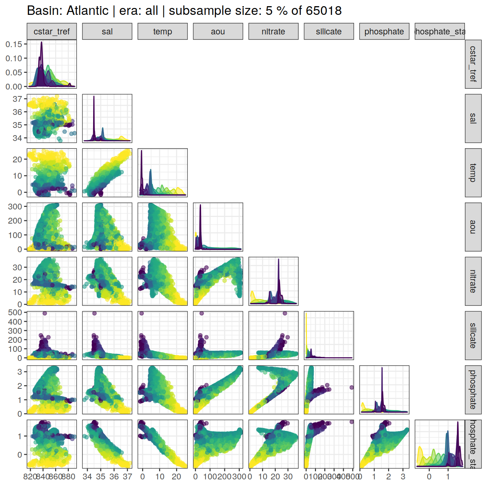
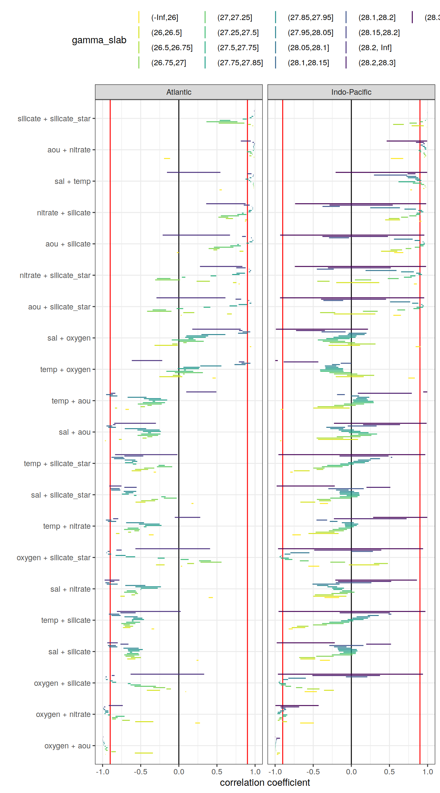
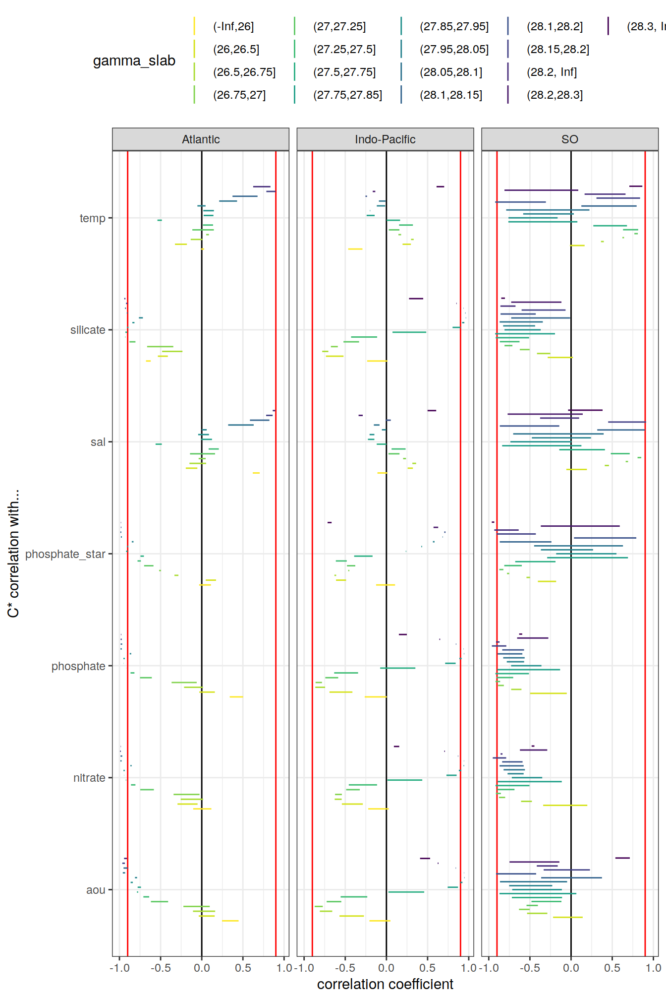

eMLR - assumption testing
Jens Daniel Müller and Donghe Zhu
27 July, 2021
Last updated: 2021-07-27
Checks: 7 0
Knit directory: emlr_mod_v_XXX/
This reproducible R Markdown analysis was created with workflowr (version 1.6.2). The Checks tab describes the reproducibility checks that were applied when the results were created. The Past versions tab lists the development history.
Great! Since the R Markdown file has been committed to the Git repository, you know the exact version of the code that produced these results.
Great job! The global environment was empty. Objects defined in the global environment can affect the analysis in your R Markdown file in unknown ways. For reproduciblity it’s best to always run the code in an empty environment.
The command set.seed(20200707) was run prior to running the code in the R Markdown file. Setting a seed ensures that any results that rely on randomness, e.g. subsampling or permutations, are reproducible.
Great job! Recording the operating system, R version, and package versions is critical for reproducibility.
Nice! There were no cached chunks for this analysis, so you can be confident that you successfully produced the results during this run.
Great job! Using relative paths to the files within your workflowr project makes it easier to run your code on other machines.
Great! You are using Git for version control. Tracking code development and connecting the code version to the results is critical for reproducibility.
The results in this page were generated with repository version 27c3dc4. See the Past versions tab to see a history of the changes made to the R Markdown and HTML files.
Note that you need to be careful to ensure that all relevant files for the analysis have been committed to Git prior to generating the results (you can use wflow_publish or wflow_git_commit). workflowr only checks the R Markdown file, but you know if there are other scripts or data files that it depends on. Below is the status of the Git repository when the results were generated:
Ignored files:
Ignored: .Rhistory
Ignored: .Rproj.user/
Untracked files:
Untracked: docs_GV_2021_2R_ann_nafilled_NorESM/
Untracked: docs_GV_2021_2R_ann_nafilled_atl_a27.97_a28_NorESM/
Untracked: docs_GV_2021_2R_ann_standard_atl_a27.97_a28_NorESM/
Untracked: docs_GV_2021_2R_ann_standard_atl_a27.98_a28.02_NorESM/
Untracked: docs_GV_2021_2R_mon_nafilled_ORCA/
Untracked: docs_GV_2021_2R_mon_nafilled_atl_a27.91_ORCA/
Untracked: docs_GV_2021_2R_mon_nafilled_atl_r27.95_ORCA/
Untracked: docs_GV_2021_2R_mon_standard_ORCA/
Untracked: docs_GV_2021_2R_mon_standard_all_sfc_ORCA/
Untracked: docs_GV_2021_2R_mon_standard_atl_a27.91_ORCA/
Untracked: docs_GV_2021_2R_mon_standard_atl_r27.95_ORCA/
Untracked: docs_GV_2021_2R_mon_standard_no_sfc_ORCA/
Untracked: docs_GV_2021_S5_ann_nafilled_atl_a27.97_a28_NorESM/
Untracked: docs_GV_2021_S5_ann_standard_NorESM/
Untracked: docs_GV_2021_S5_ann_standard_atl_a27.97_a28_NorESM/
Untracked: docs_GV_2021_S5_mon_nafilled_ORCA/
Untracked: docs_GV_2021_S5_mon_standard_ORCA/
Untracked: docs_GV_2021_S5_mon_standard_atl_a27.91_ORCA/
Unstaged changes:
Modified: data/auxillary/params_local.rds
Deleted: docs_GV_2021_2R_mon_standard/.nojekyll
Deleted: docs_GV_2021_2R_mon_standard/analysis_cant_budgets.html
Deleted: docs_GV_2021_2R_mon_standard/analysis_global_section.html
Deleted: docs_GV_2021_2R_mon_standard/analysis_inventory_maps.html
Deleted: docs_GV_2021_2R_mon_standard/analysis_isoneutral_slab_distribution.html
Deleted: docs_GV_2021_2R_mon_standard/analysis_others.html
Deleted: docs_GV_2021_2R_mon_standard/analysis_zonal_mean_sections.html
Deleted: docs_GV_2021_2R_mon_standard/config_dependencies.html
Deleted: docs_GV_2021_2R_mon_standard/config_parameterization_local.html
Deleted: docs_GV_2021_2R_mon_standard/eMLR_GLODAPv2_2020_subsetting.html
Deleted: docs_GV_2021_2R_mon_standard/eMLR_assumption_testing.html
Deleted: docs_GV_2021_2R_mon_standard/eMLR_data_preparation.html
Deleted: docs_GV_2021_2R_mon_standard/eMLR_model_fitting.html
Deleted: docs_GV_2021_2R_mon_standard/figure/analysis_global_section.Rmd/cant_all_global_section-1.png
Deleted: docs_GV_2021_2R_mon_standard/figure/analysis_global_section.Rmd/cant_all_global_section-2.png
Deleted: docs_GV_2021_2R_mon_standard/figure/analysis_global_section.Rmd/cant_all_global_section-3.png
Deleted: docs_GV_2021_2R_mon_standard/figure/analysis_global_section.Rmd/cant_all_global_section-4.png
Deleted: docs_GV_2021_2R_mon_standard/figure/analysis_global_section.Rmd/cant_all_global_section-5.png
Deleted: docs_GV_2021_2R_mon_standard/figure/analysis_global_section.Rmd/cant_all_global_section-6.png
Deleted: docs_GV_2021_2R_mon_standard/figure/analysis_global_section.Rmd/cant_model_quality_check-1.png
Deleted: docs_GV_2021_2R_mon_standard/figure/analysis_global_section.Rmd/cant_pos_global_section-1.png
Deleted: docs_GV_2021_2R_mon_standard/figure/analysis_global_section.Rmd/cant_pos_global_section-2.png
Deleted: docs_GV_2021_2R_mon_standard/figure/analysis_global_section.Rmd/cant_pos_global_section-3.png
Deleted: docs_GV_2021_2R_mon_standard/figure/analysis_global_section.Rmd/cant_pos_global_section-4.png
Deleted: docs_GV_2021_2R_mon_standard/figure/analysis_global_section.Rmd/cant_pos_global_section-5.png
Deleted: docs_GV_2021_2R_mon_standard/figure/analysis_global_section.Rmd/cant_pos_global_section-6.png
Deleted: docs_GV_2021_2R_mon_standard/figure/analysis_global_section.Rmd/cant_pos_model_quality_check-1.png
Deleted: docs_GV_2021_2R_mon_standard/figure/analysis_inventory_maps.Rmd/cant_inventory_map-1.png
Deleted: docs_GV_2021_2R_mon_standard/figure/analysis_inventory_maps.Rmd/cant_inventory_map-2.png
Deleted: docs_GV_2021_2R_mon_standard/figure/analysis_inventory_maps.Rmd/cant_inventory_map-3.png
Deleted: docs_GV_2021_2R_mon_standard/figure/analysis_inventory_maps.Rmd/cant_inventory_map-4.png
Deleted: docs_GV_2021_2R_mon_standard/figure/analysis_inventory_maps.Rmd/cant_inventory_map-5.png
Deleted: docs_GV_2021_2R_mon_standard/figure/analysis_inventory_maps.Rmd/cant_inventory_map-6.png
Deleted: docs_GV_2021_2R_mon_standard/figure/analysis_inventory_maps.Rmd/cant_pos_inventory_map-1.png
Deleted: docs_GV_2021_2R_mon_standard/figure/analysis_inventory_maps.Rmd/cant_pos_inventory_map-2.png
Deleted: docs_GV_2021_2R_mon_standard/figure/analysis_inventory_maps.Rmd/cant_pos_inventory_map-3.png
Deleted: docs_GV_2021_2R_mon_standard/figure/analysis_inventory_maps.Rmd/cant_pos_inventory_map-4.png
Deleted: docs_GV_2021_2R_mon_standard/figure/analysis_inventory_maps.Rmd/cant_pos_inventory_map-5.png
Deleted: docs_GV_2021_2R_mon_standard/figure/analysis_inventory_maps.Rmd/cant_pos_inventory_map-6.png
Deleted: docs_GV_2021_2R_mon_standard/figure/analysis_isoneutral_slab_distribution.Rmd/cant_all_gamma_slab_maps-1.png
Deleted: docs_GV_2021_2R_mon_standard/figure/analysis_isoneutral_slab_distribution.Rmd/cant_all_gamma_slab_maps-10.png
Deleted: docs_GV_2021_2R_mon_standard/figure/analysis_isoneutral_slab_distribution.Rmd/cant_all_gamma_slab_maps-100.png
Deleted: docs_GV_2021_2R_mon_standard/figure/analysis_isoneutral_slab_distribution.Rmd/cant_all_gamma_slab_maps-101.png
Deleted: docs_GV_2021_2R_mon_standard/figure/analysis_isoneutral_slab_distribution.Rmd/cant_all_gamma_slab_maps-102.png
Deleted: docs_GV_2021_2R_mon_standard/figure/analysis_isoneutral_slab_distribution.Rmd/cant_all_gamma_slab_maps-11.png
Deleted: docs_GV_2021_2R_mon_standard/figure/analysis_isoneutral_slab_distribution.Rmd/cant_all_gamma_slab_maps-12.png
Deleted: docs_GV_2021_2R_mon_standard/figure/analysis_isoneutral_slab_distribution.Rmd/cant_all_gamma_slab_maps-13.png
Deleted: docs_GV_2021_2R_mon_standard/figure/analysis_isoneutral_slab_distribution.Rmd/cant_all_gamma_slab_maps-14.png
Deleted: docs_GV_2021_2R_mon_standard/figure/analysis_isoneutral_slab_distribution.Rmd/cant_all_gamma_slab_maps-15.png
Deleted: docs_GV_2021_2R_mon_standard/figure/analysis_isoneutral_slab_distribution.Rmd/cant_all_gamma_slab_maps-16.png
Deleted: docs_GV_2021_2R_mon_standard/figure/analysis_isoneutral_slab_distribution.Rmd/cant_all_gamma_slab_maps-17.png
Deleted: docs_GV_2021_2R_mon_standard/figure/analysis_isoneutral_slab_distribution.Rmd/cant_all_gamma_slab_maps-18.png
Deleted: docs_GV_2021_2R_mon_standard/figure/analysis_isoneutral_slab_distribution.Rmd/cant_all_gamma_slab_maps-19.png
Deleted: docs_GV_2021_2R_mon_standard/figure/analysis_isoneutral_slab_distribution.Rmd/cant_all_gamma_slab_maps-2.png
Deleted: docs_GV_2021_2R_mon_standard/figure/analysis_isoneutral_slab_distribution.Rmd/cant_all_gamma_slab_maps-20.png
Deleted: docs_GV_2021_2R_mon_standard/figure/analysis_isoneutral_slab_distribution.Rmd/cant_all_gamma_slab_maps-21.png
Deleted: docs_GV_2021_2R_mon_standard/figure/analysis_isoneutral_slab_distribution.Rmd/cant_all_gamma_slab_maps-22.png
Deleted: docs_GV_2021_2R_mon_standard/figure/analysis_isoneutral_slab_distribution.Rmd/cant_all_gamma_slab_maps-23.png
Deleted: docs_GV_2021_2R_mon_standard/figure/analysis_isoneutral_slab_distribution.Rmd/cant_all_gamma_slab_maps-24.png
Deleted: docs_GV_2021_2R_mon_standard/figure/analysis_isoneutral_slab_distribution.Rmd/cant_all_gamma_slab_maps-25.png
Deleted: docs_GV_2021_2R_mon_standard/figure/analysis_isoneutral_slab_distribution.Rmd/cant_all_gamma_slab_maps-26.png
Deleted: docs_GV_2021_2R_mon_standard/figure/analysis_isoneutral_slab_distribution.Rmd/cant_all_gamma_slab_maps-27.png
Deleted: docs_GV_2021_2R_mon_standard/figure/analysis_isoneutral_slab_distribution.Rmd/cant_all_gamma_slab_maps-28.png
Deleted: docs_GV_2021_2R_mon_standard/figure/analysis_isoneutral_slab_distribution.Rmd/cant_all_gamma_slab_maps-29.png
Deleted: docs_GV_2021_2R_mon_standard/figure/analysis_isoneutral_slab_distribution.Rmd/cant_all_gamma_slab_maps-3.png
Deleted: docs_GV_2021_2R_mon_standard/figure/analysis_isoneutral_slab_distribution.Rmd/cant_all_gamma_slab_maps-30.png
Deleted: docs_GV_2021_2R_mon_standard/figure/analysis_isoneutral_slab_distribution.Rmd/cant_all_gamma_slab_maps-31.png
Deleted: docs_GV_2021_2R_mon_standard/figure/analysis_isoneutral_slab_distribution.Rmd/cant_all_gamma_slab_maps-32.png
Deleted: docs_GV_2021_2R_mon_standard/figure/analysis_isoneutral_slab_distribution.Rmd/cant_all_gamma_slab_maps-33.png
Deleted: docs_GV_2021_2R_mon_standard/figure/analysis_isoneutral_slab_distribution.Rmd/cant_all_gamma_slab_maps-34.png
Deleted: docs_GV_2021_2R_mon_standard/figure/analysis_isoneutral_slab_distribution.Rmd/cant_all_gamma_slab_maps-35.png
Deleted: docs_GV_2021_2R_mon_standard/figure/analysis_isoneutral_slab_distribution.Rmd/cant_all_gamma_slab_maps-36.png
Deleted: docs_GV_2021_2R_mon_standard/figure/analysis_isoneutral_slab_distribution.Rmd/cant_all_gamma_slab_maps-37.png
Deleted: docs_GV_2021_2R_mon_standard/figure/analysis_isoneutral_slab_distribution.Rmd/cant_all_gamma_slab_maps-38.png
Deleted: docs_GV_2021_2R_mon_standard/figure/analysis_isoneutral_slab_distribution.Rmd/cant_all_gamma_slab_maps-39.png
Deleted: docs_GV_2021_2R_mon_standard/figure/analysis_isoneutral_slab_distribution.Rmd/cant_all_gamma_slab_maps-4.png
Deleted: docs_GV_2021_2R_mon_standard/figure/analysis_isoneutral_slab_distribution.Rmd/cant_all_gamma_slab_maps-40.png
Deleted: docs_GV_2021_2R_mon_standard/figure/analysis_isoneutral_slab_distribution.Rmd/cant_all_gamma_slab_maps-41.png
Deleted: docs_GV_2021_2R_mon_standard/figure/analysis_isoneutral_slab_distribution.Rmd/cant_all_gamma_slab_maps-42.png
Deleted: docs_GV_2021_2R_mon_standard/figure/analysis_isoneutral_slab_distribution.Rmd/cant_all_gamma_slab_maps-43.png
Deleted: docs_GV_2021_2R_mon_standard/figure/analysis_isoneutral_slab_distribution.Rmd/cant_all_gamma_slab_maps-44.png
Deleted: docs_GV_2021_2R_mon_standard/figure/analysis_isoneutral_slab_distribution.Rmd/cant_all_gamma_slab_maps-45.png
Deleted: docs_GV_2021_2R_mon_standard/figure/analysis_isoneutral_slab_distribution.Rmd/cant_all_gamma_slab_maps-46.png
Deleted: docs_GV_2021_2R_mon_standard/figure/analysis_isoneutral_slab_distribution.Rmd/cant_all_gamma_slab_maps-47.png
Deleted: docs_GV_2021_2R_mon_standard/figure/analysis_isoneutral_slab_distribution.Rmd/cant_all_gamma_slab_maps-48.png
Deleted: docs_GV_2021_2R_mon_standard/figure/analysis_isoneutral_slab_distribution.Rmd/cant_all_gamma_slab_maps-49.png
Deleted: docs_GV_2021_2R_mon_standard/figure/analysis_isoneutral_slab_distribution.Rmd/cant_all_gamma_slab_maps-5.png
Deleted: docs_GV_2021_2R_mon_standard/figure/analysis_isoneutral_slab_distribution.Rmd/cant_all_gamma_slab_maps-50.png
Deleted: docs_GV_2021_2R_mon_standard/figure/analysis_isoneutral_slab_distribution.Rmd/cant_all_gamma_slab_maps-51.png
Deleted: docs_GV_2021_2R_mon_standard/figure/analysis_isoneutral_slab_distribution.Rmd/cant_all_gamma_slab_maps-52.png
Deleted: docs_GV_2021_2R_mon_standard/figure/analysis_isoneutral_slab_distribution.Rmd/cant_all_gamma_slab_maps-53.png
Deleted: docs_GV_2021_2R_mon_standard/figure/analysis_isoneutral_slab_distribution.Rmd/cant_all_gamma_slab_maps-54.png
Deleted: docs_GV_2021_2R_mon_standard/figure/analysis_isoneutral_slab_distribution.Rmd/cant_all_gamma_slab_maps-55.png
Deleted: docs_GV_2021_2R_mon_standard/figure/analysis_isoneutral_slab_distribution.Rmd/cant_all_gamma_slab_maps-56.png
Deleted: docs_GV_2021_2R_mon_standard/figure/analysis_isoneutral_slab_distribution.Rmd/cant_all_gamma_slab_maps-57.png
Deleted: docs_GV_2021_2R_mon_standard/figure/analysis_isoneutral_slab_distribution.Rmd/cant_all_gamma_slab_maps-58.png
Deleted: docs_GV_2021_2R_mon_standard/figure/analysis_isoneutral_slab_distribution.Rmd/cant_all_gamma_slab_maps-59.png
Deleted: docs_GV_2021_2R_mon_standard/figure/analysis_isoneutral_slab_distribution.Rmd/cant_all_gamma_slab_maps-6.png
Deleted: docs_GV_2021_2R_mon_standard/figure/analysis_isoneutral_slab_distribution.Rmd/cant_all_gamma_slab_maps-60.png
Deleted: docs_GV_2021_2R_mon_standard/figure/analysis_isoneutral_slab_distribution.Rmd/cant_all_gamma_slab_maps-61.png
Deleted: docs_GV_2021_2R_mon_standard/figure/analysis_isoneutral_slab_distribution.Rmd/cant_all_gamma_slab_maps-62.png
Deleted: docs_GV_2021_2R_mon_standard/figure/analysis_isoneutral_slab_distribution.Rmd/cant_all_gamma_slab_maps-63.png
Deleted: docs_GV_2021_2R_mon_standard/figure/analysis_isoneutral_slab_distribution.Rmd/cant_all_gamma_slab_maps-64.png
Deleted: docs_GV_2021_2R_mon_standard/figure/analysis_isoneutral_slab_distribution.Rmd/cant_all_gamma_slab_maps-65.png
Deleted: docs_GV_2021_2R_mon_standard/figure/analysis_isoneutral_slab_distribution.Rmd/cant_all_gamma_slab_maps-66.png
Deleted: docs_GV_2021_2R_mon_standard/figure/analysis_isoneutral_slab_distribution.Rmd/cant_all_gamma_slab_maps-67.png
Deleted: docs_GV_2021_2R_mon_standard/figure/analysis_isoneutral_slab_distribution.Rmd/cant_all_gamma_slab_maps-68.png
Deleted: docs_GV_2021_2R_mon_standard/figure/analysis_isoneutral_slab_distribution.Rmd/cant_all_gamma_slab_maps-69.png
Deleted: docs_GV_2021_2R_mon_standard/figure/analysis_isoneutral_slab_distribution.Rmd/cant_all_gamma_slab_maps-7.png
Deleted: docs_GV_2021_2R_mon_standard/figure/analysis_isoneutral_slab_distribution.Rmd/cant_all_gamma_slab_maps-70.png
Deleted: docs_GV_2021_2R_mon_standard/figure/analysis_isoneutral_slab_distribution.Rmd/cant_all_gamma_slab_maps-71.png
Deleted: docs_GV_2021_2R_mon_standard/figure/analysis_isoneutral_slab_distribution.Rmd/cant_all_gamma_slab_maps-72.png
Deleted: docs_GV_2021_2R_mon_standard/figure/analysis_isoneutral_slab_distribution.Rmd/cant_all_gamma_slab_maps-73.png
Deleted: docs_GV_2021_2R_mon_standard/figure/analysis_isoneutral_slab_distribution.Rmd/cant_all_gamma_slab_maps-74.png
Deleted: docs_GV_2021_2R_mon_standard/figure/analysis_isoneutral_slab_distribution.Rmd/cant_all_gamma_slab_maps-75.png
Deleted: docs_GV_2021_2R_mon_standard/figure/analysis_isoneutral_slab_distribution.Rmd/cant_all_gamma_slab_maps-76.png
Deleted: docs_GV_2021_2R_mon_standard/figure/analysis_isoneutral_slab_distribution.Rmd/cant_all_gamma_slab_maps-77.png
Deleted: docs_GV_2021_2R_mon_standard/figure/analysis_isoneutral_slab_distribution.Rmd/cant_all_gamma_slab_maps-78.png
Deleted: docs_GV_2021_2R_mon_standard/figure/analysis_isoneutral_slab_distribution.Rmd/cant_all_gamma_slab_maps-79.png
Deleted: docs_GV_2021_2R_mon_standard/figure/analysis_isoneutral_slab_distribution.Rmd/cant_all_gamma_slab_maps-8.png
Deleted: docs_GV_2021_2R_mon_standard/figure/analysis_isoneutral_slab_distribution.Rmd/cant_all_gamma_slab_maps-80.png
Deleted: docs_GV_2021_2R_mon_standard/figure/analysis_isoneutral_slab_distribution.Rmd/cant_all_gamma_slab_maps-81.png
Deleted: docs_GV_2021_2R_mon_standard/figure/analysis_isoneutral_slab_distribution.Rmd/cant_all_gamma_slab_maps-82.png
Deleted: docs_GV_2021_2R_mon_standard/figure/analysis_isoneutral_slab_distribution.Rmd/cant_all_gamma_slab_maps-83.png
Deleted: docs_GV_2021_2R_mon_standard/figure/analysis_isoneutral_slab_distribution.Rmd/cant_all_gamma_slab_maps-84.png
Deleted: docs_GV_2021_2R_mon_standard/figure/analysis_isoneutral_slab_distribution.Rmd/cant_all_gamma_slab_maps-85.png
Deleted: docs_GV_2021_2R_mon_standard/figure/analysis_isoneutral_slab_distribution.Rmd/cant_all_gamma_slab_maps-86.png
Deleted: docs_GV_2021_2R_mon_standard/figure/analysis_isoneutral_slab_distribution.Rmd/cant_all_gamma_slab_maps-87.png
Deleted: docs_GV_2021_2R_mon_standard/figure/analysis_isoneutral_slab_distribution.Rmd/cant_all_gamma_slab_maps-88.png
Deleted: docs_GV_2021_2R_mon_standard/figure/analysis_isoneutral_slab_distribution.Rmd/cant_all_gamma_slab_maps-89.png
Deleted: docs_GV_2021_2R_mon_standard/figure/analysis_isoneutral_slab_distribution.Rmd/cant_all_gamma_slab_maps-9.png
Deleted: docs_GV_2021_2R_mon_standard/figure/analysis_isoneutral_slab_distribution.Rmd/cant_all_gamma_slab_maps-90.png
Deleted: docs_GV_2021_2R_mon_standard/figure/analysis_isoneutral_slab_distribution.Rmd/cant_all_gamma_slab_maps-91.png
Deleted: docs_GV_2021_2R_mon_standard/figure/analysis_isoneutral_slab_distribution.Rmd/cant_all_gamma_slab_maps-92.png
Deleted: docs_GV_2021_2R_mon_standard/figure/analysis_isoneutral_slab_distribution.Rmd/cant_all_gamma_slab_maps-93.png
Deleted: docs_GV_2021_2R_mon_standard/figure/analysis_isoneutral_slab_distribution.Rmd/cant_all_gamma_slab_maps-94.png
Deleted: docs_GV_2021_2R_mon_standard/figure/analysis_isoneutral_slab_distribution.Rmd/cant_all_gamma_slab_maps-95.png
Deleted: docs_GV_2021_2R_mon_standard/figure/analysis_isoneutral_slab_distribution.Rmd/cant_all_gamma_slab_maps-96.png
Deleted: docs_GV_2021_2R_mon_standard/figure/analysis_isoneutral_slab_distribution.Rmd/cant_all_gamma_slab_maps-97.png
Deleted: docs_GV_2021_2R_mon_standard/figure/analysis_isoneutral_slab_distribution.Rmd/cant_all_gamma_slab_maps-98.png
Deleted: docs_GV_2021_2R_mon_standard/figure/analysis_isoneutral_slab_distribution.Rmd/cant_all_gamma_slab_maps-99.png
Deleted: docs_GV_2021_2R_mon_standard/figure/analysis_isoneutral_slab_distribution.Rmd/cant_pos_gamma_slab_maps-1.png
Deleted: docs_GV_2021_2R_mon_standard/figure/analysis_isoneutral_slab_distribution.Rmd/cant_pos_gamma_slab_maps-10.png
Deleted: docs_GV_2021_2R_mon_standard/figure/analysis_isoneutral_slab_distribution.Rmd/cant_pos_gamma_slab_maps-100.png
Deleted: docs_GV_2021_2R_mon_standard/figure/analysis_isoneutral_slab_distribution.Rmd/cant_pos_gamma_slab_maps-101.png
Deleted: docs_GV_2021_2R_mon_standard/figure/analysis_isoneutral_slab_distribution.Rmd/cant_pos_gamma_slab_maps-102.png
Deleted: docs_GV_2021_2R_mon_standard/figure/analysis_isoneutral_slab_distribution.Rmd/cant_pos_gamma_slab_maps-11.png
Deleted: docs_GV_2021_2R_mon_standard/figure/analysis_isoneutral_slab_distribution.Rmd/cant_pos_gamma_slab_maps-12.png
Deleted: docs_GV_2021_2R_mon_standard/figure/analysis_isoneutral_slab_distribution.Rmd/cant_pos_gamma_slab_maps-13.png
Deleted: docs_GV_2021_2R_mon_standard/figure/analysis_isoneutral_slab_distribution.Rmd/cant_pos_gamma_slab_maps-14.png
Deleted: docs_GV_2021_2R_mon_standard/figure/analysis_isoneutral_slab_distribution.Rmd/cant_pos_gamma_slab_maps-15.png
Deleted: docs_GV_2021_2R_mon_standard/figure/analysis_isoneutral_slab_distribution.Rmd/cant_pos_gamma_slab_maps-16.png
Deleted: docs_GV_2021_2R_mon_standard/figure/analysis_isoneutral_slab_distribution.Rmd/cant_pos_gamma_slab_maps-17.png
Deleted: docs_GV_2021_2R_mon_standard/figure/analysis_isoneutral_slab_distribution.Rmd/cant_pos_gamma_slab_maps-18.png
Deleted: docs_GV_2021_2R_mon_standard/figure/analysis_isoneutral_slab_distribution.Rmd/cant_pos_gamma_slab_maps-19.png
Deleted: docs_GV_2021_2R_mon_standard/figure/analysis_isoneutral_slab_distribution.Rmd/cant_pos_gamma_slab_maps-2.png
Deleted: docs_GV_2021_2R_mon_standard/figure/analysis_isoneutral_slab_distribution.Rmd/cant_pos_gamma_slab_maps-20.png
Deleted: docs_GV_2021_2R_mon_standard/figure/analysis_isoneutral_slab_distribution.Rmd/cant_pos_gamma_slab_maps-21.png
Deleted: docs_GV_2021_2R_mon_standard/figure/analysis_isoneutral_slab_distribution.Rmd/cant_pos_gamma_slab_maps-22.png
Deleted: docs_GV_2021_2R_mon_standard/figure/analysis_isoneutral_slab_distribution.Rmd/cant_pos_gamma_slab_maps-23.png
Deleted: docs_GV_2021_2R_mon_standard/figure/analysis_isoneutral_slab_distribution.Rmd/cant_pos_gamma_slab_maps-24.png
Deleted: docs_GV_2021_2R_mon_standard/figure/analysis_isoneutral_slab_distribution.Rmd/cant_pos_gamma_slab_maps-25.png
Deleted: docs_GV_2021_2R_mon_standard/figure/analysis_isoneutral_slab_distribution.Rmd/cant_pos_gamma_slab_maps-26.png
Deleted: docs_GV_2021_2R_mon_standard/figure/analysis_isoneutral_slab_distribution.Rmd/cant_pos_gamma_slab_maps-27.png
Deleted: docs_GV_2021_2R_mon_standard/figure/analysis_isoneutral_slab_distribution.Rmd/cant_pos_gamma_slab_maps-28.png
Deleted: docs_GV_2021_2R_mon_standard/figure/analysis_isoneutral_slab_distribution.Rmd/cant_pos_gamma_slab_maps-29.png
Deleted: docs_GV_2021_2R_mon_standard/figure/analysis_isoneutral_slab_distribution.Rmd/cant_pos_gamma_slab_maps-3.png
Deleted: docs_GV_2021_2R_mon_standard/figure/analysis_isoneutral_slab_distribution.Rmd/cant_pos_gamma_slab_maps-30.png
Deleted: docs_GV_2021_2R_mon_standard/figure/analysis_isoneutral_slab_distribution.Rmd/cant_pos_gamma_slab_maps-31.png
Deleted: docs_GV_2021_2R_mon_standard/figure/analysis_isoneutral_slab_distribution.Rmd/cant_pos_gamma_slab_maps-32.png
Deleted: docs_GV_2021_2R_mon_standard/figure/analysis_isoneutral_slab_distribution.Rmd/cant_pos_gamma_slab_maps-33.png
Deleted: docs_GV_2021_2R_mon_standard/figure/analysis_isoneutral_slab_distribution.Rmd/cant_pos_gamma_slab_maps-34.png
Deleted: docs_GV_2021_2R_mon_standard/figure/analysis_isoneutral_slab_distribution.Rmd/cant_pos_gamma_slab_maps-35.png
Deleted: docs_GV_2021_2R_mon_standard/figure/analysis_isoneutral_slab_distribution.Rmd/cant_pos_gamma_slab_maps-36.png
Deleted: docs_GV_2021_2R_mon_standard/figure/analysis_isoneutral_slab_distribution.Rmd/cant_pos_gamma_slab_maps-37.png
Deleted: docs_GV_2021_2R_mon_standard/figure/analysis_isoneutral_slab_distribution.Rmd/cant_pos_gamma_slab_maps-38.png
Deleted: docs_GV_2021_2R_mon_standard/figure/analysis_isoneutral_slab_distribution.Rmd/cant_pos_gamma_slab_maps-39.png
Deleted: docs_GV_2021_2R_mon_standard/figure/analysis_isoneutral_slab_distribution.Rmd/cant_pos_gamma_slab_maps-4.png
Deleted: docs_GV_2021_2R_mon_standard/figure/analysis_isoneutral_slab_distribution.Rmd/cant_pos_gamma_slab_maps-40.png
Deleted: docs_GV_2021_2R_mon_standard/figure/analysis_isoneutral_slab_distribution.Rmd/cant_pos_gamma_slab_maps-41.png
Deleted: docs_GV_2021_2R_mon_standard/figure/analysis_isoneutral_slab_distribution.Rmd/cant_pos_gamma_slab_maps-42.png
Deleted: docs_GV_2021_2R_mon_standard/figure/analysis_isoneutral_slab_distribution.Rmd/cant_pos_gamma_slab_maps-43.png
Deleted: docs_GV_2021_2R_mon_standard/figure/analysis_isoneutral_slab_distribution.Rmd/cant_pos_gamma_slab_maps-44.png
Deleted: docs_GV_2021_2R_mon_standard/figure/analysis_isoneutral_slab_distribution.Rmd/cant_pos_gamma_slab_maps-45.png
Deleted: docs_GV_2021_2R_mon_standard/figure/analysis_isoneutral_slab_distribution.Rmd/cant_pos_gamma_slab_maps-46.png
Deleted: docs_GV_2021_2R_mon_standard/figure/analysis_isoneutral_slab_distribution.Rmd/cant_pos_gamma_slab_maps-47.png
Deleted: docs_GV_2021_2R_mon_standard/figure/analysis_isoneutral_slab_distribution.Rmd/cant_pos_gamma_slab_maps-48.png
Deleted: docs_GV_2021_2R_mon_standard/figure/analysis_isoneutral_slab_distribution.Rmd/cant_pos_gamma_slab_maps-49.png
Deleted: docs_GV_2021_2R_mon_standard/figure/analysis_isoneutral_slab_distribution.Rmd/cant_pos_gamma_slab_maps-5.png
Deleted: docs_GV_2021_2R_mon_standard/figure/analysis_isoneutral_slab_distribution.Rmd/cant_pos_gamma_slab_maps-50.png
Deleted: docs_GV_2021_2R_mon_standard/figure/analysis_isoneutral_slab_distribution.Rmd/cant_pos_gamma_slab_maps-51.png
Deleted: docs_GV_2021_2R_mon_standard/figure/analysis_isoneutral_slab_distribution.Rmd/cant_pos_gamma_slab_maps-52.png
Deleted: docs_GV_2021_2R_mon_standard/figure/analysis_isoneutral_slab_distribution.Rmd/cant_pos_gamma_slab_maps-53.png
Deleted: docs_GV_2021_2R_mon_standard/figure/analysis_isoneutral_slab_distribution.Rmd/cant_pos_gamma_slab_maps-54.png
Deleted: docs_GV_2021_2R_mon_standard/figure/analysis_isoneutral_slab_distribution.Rmd/cant_pos_gamma_slab_maps-55.png
Deleted: docs_GV_2021_2R_mon_standard/figure/analysis_isoneutral_slab_distribution.Rmd/cant_pos_gamma_slab_maps-56.png
Deleted: docs_GV_2021_2R_mon_standard/figure/analysis_isoneutral_slab_distribution.Rmd/cant_pos_gamma_slab_maps-57.png
Deleted: docs_GV_2021_2R_mon_standard/figure/analysis_isoneutral_slab_distribution.Rmd/cant_pos_gamma_slab_maps-58.png
Deleted: docs_GV_2021_2R_mon_standard/figure/analysis_isoneutral_slab_distribution.Rmd/cant_pos_gamma_slab_maps-59.png
Deleted: docs_GV_2021_2R_mon_standard/figure/analysis_isoneutral_slab_distribution.Rmd/cant_pos_gamma_slab_maps-6.png
Deleted: docs_GV_2021_2R_mon_standard/figure/analysis_isoneutral_slab_distribution.Rmd/cant_pos_gamma_slab_maps-60.png
Deleted: docs_GV_2021_2R_mon_standard/figure/analysis_isoneutral_slab_distribution.Rmd/cant_pos_gamma_slab_maps-61.png
Deleted: docs_GV_2021_2R_mon_standard/figure/analysis_isoneutral_slab_distribution.Rmd/cant_pos_gamma_slab_maps-62.png
Deleted: docs_GV_2021_2R_mon_standard/figure/analysis_isoneutral_slab_distribution.Rmd/cant_pos_gamma_slab_maps-63.png
Deleted: docs_GV_2021_2R_mon_standard/figure/analysis_isoneutral_slab_distribution.Rmd/cant_pos_gamma_slab_maps-64.png
Deleted: docs_GV_2021_2R_mon_standard/figure/analysis_isoneutral_slab_distribution.Rmd/cant_pos_gamma_slab_maps-65.png
Deleted: docs_GV_2021_2R_mon_standard/figure/analysis_isoneutral_slab_distribution.Rmd/cant_pos_gamma_slab_maps-66.png
Deleted: docs_GV_2021_2R_mon_standard/figure/analysis_isoneutral_slab_distribution.Rmd/cant_pos_gamma_slab_maps-67.png
Deleted: docs_GV_2021_2R_mon_standard/figure/analysis_isoneutral_slab_distribution.Rmd/cant_pos_gamma_slab_maps-68.png
Deleted: docs_GV_2021_2R_mon_standard/figure/analysis_isoneutral_slab_distribution.Rmd/cant_pos_gamma_slab_maps-69.png
Deleted: docs_GV_2021_2R_mon_standard/figure/analysis_isoneutral_slab_distribution.Rmd/cant_pos_gamma_slab_maps-7.png
Deleted: docs_GV_2021_2R_mon_standard/figure/analysis_isoneutral_slab_distribution.Rmd/cant_pos_gamma_slab_maps-70.png
Deleted: docs_GV_2021_2R_mon_standard/figure/analysis_isoneutral_slab_distribution.Rmd/cant_pos_gamma_slab_maps-71.png
Deleted: docs_GV_2021_2R_mon_standard/figure/analysis_isoneutral_slab_distribution.Rmd/cant_pos_gamma_slab_maps-72.png
Deleted: docs_GV_2021_2R_mon_standard/figure/analysis_isoneutral_slab_distribution.Rmd/cant_pos_gamma_slab_maps-73.png
Deleted: docs_GV_2021_2R_mon_standard/figure/analysis_isoneutral_slab_distribution.Rmd/cant_pos_gamma_slab_maps-74.png
Deleted: docs_GV_2021_2R_mon_standard/figure/analysis_isoneutral_slab_distribution.Rmd/cant_pos_gamma_slab_maps-75.png
Deleted: docs_GV_2021_2R_mon_standard/figure/analysis_isoneutral_slab_distribution.Rmd/cant_pos_gamma_slab_maps-76.png
Deleted: docs_GV_2021_2R_mon_standard/figure/analysis_isoneutral_slab_distribution.Rmd/cant_pos_gamma_slab_maps-77.png
Deleted: docs_GV_2021_2R_mon_standard/figure/analysis_isoneutral_slab_distribution.Rmd/cant_pos_gamma_slab_maps-78.png
Deleted: docs_GV_2021_2R_mon_standard/figure/analysis_isoneutral_slab_distribution.Rmd/cant_pos_gamma_slab_maps-79.png
Deleted: docs_GV_2021_2R_mon_standard/figure/analysis_isoneutral_slab_distribution.Rmd/cant_pos_gamma_slab_maps-8.png
Deleted: docs_GV_2021_2R_mon_standard/figure/analysis_isoneutral_slab_distribution.Rmd/cant_pos_gamma_slab_maps-80.png
Deleted: docs_GV_2021_2R_mon_standard/figure/analysis_isoneutral_slab_distribution.Rmd/cant_pos_gamma_slab_maps-81.png
Deleted: docs_GV_2021_2R_mon_standard/figure/analysis_isoneutral_slab_distribution.Rmd/cant_pos_gamma_slab_maps-82.png
Deleted: docs_GV_2021_2R_mon_standard/figure/analysis_isoneutral_slab_distribution.Rmd/cant_pos_gamma_slab_maps-83.png
Deleted: docs_GV_2021_2R_mon_standard/figure/analysis_isoneutral_slab_distribution.Rmd/cant_pos_gamma_slab_maps-84.png
Deleted: docs_GV_2021_2R_mon_standard/figure/analysis_isoneutral_slab_distribution.Rmd/cant_pos_gamma_slab_maps-85.png
Deleted: docs_GV_2021_2R_mon_standard/figure/analysis_isoneutral_slab_distribution.Rmd/cant_pos_gamma_slab_maps-86.png
Deleted: docs_GV_2021_2R_mon_standard/figure/analysis_isoneutral_slab_distribution.Rmd/cant_pos_gamma_slab_maps-87.png
Deleted: docs_GV_2021_2R_mon_standard/figure/analysis_isoneutral_slab_distribution.Rmd/cant_pos_gamma_slab_maps-88.png
Deleted: docs_GV_2021_2R_mon_standard/figure/analysis_isoneutral_slab_distribution.Rmd/cant_pos_gamma_slab_maps-89.png
Deleted: docs_GV_2021_2R_mon_standard/figure/analysis_isoneutral_slab_distribution.Rmd/cant_pos_gamma_slab_maps-9.png
Deleted: docs_GV_2021_2R_mon_standard/figure/analysis_isoneutral_slab_distribution.Rmd/cant_pos_gamma_slab_maps-90.png
Deleted: docs_GV_2021_2R_mon_standard/figure/analysis_isoneutral_slab_distribution.Rmd/cant_pos_gamma_slab_maps-91.png
Deleted: docs_GV_2021_2R_mon_standard/figure/analysis_isoneutral_slab_distribution.Rmd/cant_pos_gamma_slab_maps-92.png
Deleted: docs_GV_2021_2R_mon_standard/figure/analysis_isoneutral_slab_distribution.Rmd/cant_pos_gamma_slab_maps-93.png
Deleted: docs_GV_2021_2R_mon_standard/figure/analysis_isoneutral_slab_distribution.Rmd/cant_pos_gamma_slab_maps-94.png
Deleted: docs_GV_2021_2R_mon_standard/figure/analysis_isoneutral_slab_distribution.Rmd/cant_pos_gamma_slab_maps-95.png
Deleted: docs_GV_2021_2R_mon_standard/figure/analysis_isoneutral_slab_distribution.Rmd/cant_pos_gamma_slab_maps-96.png
Deleted: docs_GV_2021_2R_mon_standard/figure/analysis_isoneutral_slab_distribution.Rmd/cant_pos_gamma_slab_maps-97.png
Deleted: docs_GV_2021_2R_mon_standard/figure/analysis_isoneutral_slab_distribution.Rmd/cant_pos_gamma_slab_maps-98.png
Deleted: docs_GV_2021_2R_mon_standard/figure/analysis_isoneutral_slab_distribution.Rmd/cant_pos_gamma_slab_maps-99.png
Deleted: docs_GV_2021_2R_mon_standard/figure/analysis_others.Rmd/cant_section_predictor_contribution-1.png
Deleted: docs_GV_2021_2R_mon_standard/figure/analysis_others.Rmd/cant_section_predictor_contribution-2.png
Deleted: docs_GV_2021_2R_mon_standard/figure/analysis_others.Rmd/cant_section_predictor_contribution-3.png
Deleted: docs_GV_2021_2R_mon_standard/figure/analysis_others.Rmd/cant_section_predictor_contribution-4.png
Deleted: docs_GV_2021_2R_mon_standard/figure/analysis_others.Rmd/cant_section_predictor_contribution-5.png
Deleted: docs_GV_2021_2R_mon_standard/figure/analysis_others.Rmd/cant_section_predictor_contribution-6.png
Deleted: docs_GV_2021_2R_mon_standard/figure/analysis_others.Rmd/cant_section_predictor_contribution-7.png
Deleted: docs_GV_2021_2R_mon_standard/figure/analysis_others.Rmd/cant_section_predictor_contribution-8.png
Deleted: docs_GV_2021_2R_mon_standard/figure/analysis_others.Rmd/cant_sections_sd_cant-1.png
Deleted: docs_GV_2021_2R_mon_standard/figure/analysis_others.Rmd/cant_sections_sd_cant-2.png
Deleted: docs_GV_2021_2R_mon_standard/figure/analysis_others.Rmd/cant_sections_sd_cant-3.png
Deleted: docs_GV_2021_2R_mon_standard/figure/analysis_others.Rmd/cant_sections_sd_cant-4.png
Deleted: docs_GV_2021_2R_mon_standard/figure/analysis_others.Rmd/cant_sections_sd_cant-5.png
Deleted: docs_GV_2021_2R_mon_standard/figure/analysis_others.Rmd/cant_sections_sd_cant-6.png
Deleted: docs_GV_2021_2R_mon_standard/figure/analysis_others.Rmd/cant_sections_sd_models-1.png
Deleted: docs_GV_2021_2R_mon_standard/figure/analysis_others.Rmd/cant_sections_sd_models-2.png
Deleted: docs_GV_2021_2R_mon_standard/figure/analysis_others.Rmd/cant_sections_sd_models-3.png
Deleted: docs_GV_2021_2R_mon_standard/figure/analysis_others.Rmd/cant_sections_sd_models-4.png
Deleted: docs_GV_2021_2R_mon_standard/figure/analysis_others.Rmd/cant_sections_sd_models-5.png
Deleted: docs_GV_2021_2R_mon_standard/figure/analysis_others.Rmd/cant_sections_sd_models-6.png
Deleted: docs_GV_2021_2R_mon_standard/figure/analysis_others.Rmd/cant_vs_sd_by_basin_era-1.png
Deleted: docs_GV_2021_2R_mon_standard/figure/analysis_others.Rmd/cant_vs_sd_by_basin_era_zonal-1.png
Deleted: docs_GV_2021_2R_mon_standard/figure/analysis_others.Rmd/cant_vs_sd_by_basin_gamma-1.png
Deleted: docs_GV_2021_2R_mon_standard/figure/analysis_others.Rmd/cant_vs_sd_by_basin_gamma_zonal-1.png
Deleted: docs_GV_2021_2R_mon_standard/figure/analysis_others.Rmd/gamma_maps-1.png
Deleted: docs_GV_2021_2R_mon_standard/figure/analysis_others.Rmd/target_zonal_mean_era-1.png
Deleted: docs_GV_2021_2R_mon_standard/figure/analysis_others.Rmd/target_zonal_mean_era-2.png
Deleted: docs_GV_2021_2R_mon_standard/figure/analysis_others.Rmd/target_zonal_mean_era-3.png
Deleted: docs_GV_2021_2R_mon_standard/figure/analysis_zonal_mean_sections.Rmd/cant_pos_zonal_mean_section-1.png
Deleted: docs_GV_2021_2R_mon_standard/figure/analysis_zonal_mean_sections.Rmd/cant_pos_zonal_mean_section-10.png
Deleted: docs_GV_2021_2R_mon_standard/figure/analysis_zonal_mean_sections.Rmd/cant_pos_zonal_mean_section-11.png
Deleted: docs_GV_2021_2R_mon_standard/figure/analysis_zonal_mean_sections.Rmd/cant_pos_zonal_mean_section-12.png
Deleted: docs_GV_2021_2R_mon_standard/figure/analysis_zonal_mean_sections.Rmd/cant_pos_zonal_mean_section-13.png
Deleted: docs_GV_2021_2R_mon_standard/figure/analysis_zonal_mean_sections.Rmd/cant_pos_zonal_mean_section-14.png
Deleted: docs_GV_2021_2R_mon_standard/figure/analysis_zonal_mean_sections.Rmd/cant_pos_zonal_mean_section-15.png
Deleted: docs_GV_2021_2R_mon_standard/figure/analysis_zonal_mean_sections.Rmd/cant_pos_zonal_mean_section-16.png
Deleted: docs_GV_2021_2R_mon_standard/figure/analysis_zonal_mean_sections.Rmd/cant_pos_zonal_mean_section-17.png
Deleted: docs_GV_2021_2R_mon_standard/figure/analysis_zonal_mean_sections.Rmd/cant_pos_zonal_mean_section-18.png
Deleted: docs_GV_2021_2R_mon_standard/figure/analysis_zonal_mean_sections.Rmd/cant_pos_zonal_mean_section-2.png
Deleted: docs_GV_2021_2R_mon_standard/figure/analysis_zonal_mean_sections.Rmd/cant_pos_zonal_mean_section-3.png
Deleted: docs_GV_2021_2R_mon_standard/figure/analysis_zonal_mean_sections.Rmd/cant_pos_zonal_mean_section-4.png
Deleted: docs_GV_2021_2R_mon_standard/figure/analysis_zonal_mean_sections.Rmd/cant_pos_zonal_mean_section-5.png
Deleted: docs_GV_2021_2R_mon_standard/figure/analysis_zonal_mean_sections.Rmd/cant_pos_zonal_mean_section-6.png
Deleted: docs_GV_2021_2R_mon_standard/figure/analysis_zonal_mean_sections.Rmd/cant_pos_zonal_mean_section-7.png
Deleted: docs_GV_2021_2R_mon_standard/figure/analysis_zonal_mean_sections.Rmd/cant_pos_zonal_mean_section-8.png
Deleted: docs_GV_2021_2R_mon_standard/figure/analysis_zonal_mean_sections.Rmd/cant_pos_zonal_mean_section-9.png
Deleted: docs_GV_2021_2R_mon_standard/figure/analysis_zonal_mean_sections.Rmd/cant_zonal_mean_section-1.png
Deleted: docs_GV_2021_2R_mon_standard/figure/analysis_zonal_mean_sections.Rmd/cant_zonal_mean_section-10.png
Deleted: docs_GV_2021_2R_mon_standard/figure/analysis_zonal_mean_sections.Rmd/cant_zonal_mean_section-11.png
Deleted: docs_GV_2021_2R_mon_standard/figure/analysis_zonal_mean_sections.Rmd/cant_zonal_mean_section-12.png
Deleted: docs_GV_2021_2R_mon_standard/figure/analysis_zonal_mean_sections.Rmd/cant_zonal_mean_section-13.png
Deleted: docs_GV_2021_2R_mon_standard/figure/analysis_zonal_mean_sections.Rmd/cant_zonal_mean_section-14.png
Deleted: docs_GV_2021_2R_mon_standard/figure/analysis_zonal_mean_sections.Rmd/cant_zonal_mean_section-15.png
Deleted: docs_GV_2021_2R_mon_standard/figure/analysis_zonal_mean_sections.Rmd/cant_zonal_mean_section-16.png
Deleted: docs_GV_2021_2R_mon_standard/figure/analysis_zonal_mean_sections.Rmd/cant_zonal_mean_section-17.png
Deleted: docs_GV_2021_2R_mon_standard/figure/analysis_zonal_mean_sections.Rmd/cant_zonal_mean_section-18.png
Deleted: docs_GV_2021_2R_mon_standard/figure/analysis_zonal_mean_sections.Rmd/cant_zonal_mean_section-2.png
Deleted: docs_GV_2021_2R_mon_standard/figure/analysis_zonal_mean_sections.Rmd/cant_zonal_mean_section-3.png
Deleted: docs_GV_2021_2R_mon_standard/figure/analysis_zonal_mean_sections.Rmd/cant_zonal_mean_section-4.png
Deleted: docs_GV_2021_2R_mon_standard/figure/analysis_zonal_mean_sections.Rmd/cant_zonal_mean_section-5.png
Deleted: docs_GV_2021_2R_mon_standard/figure/analysis_zonal_mean_sections.Rmd/cant_zonal_mean_section-6.png
Deleted: docs_GV_2021_2R_mon_standard/figure/analysis_zonal_mean_sections.Rmd/cant_zonal_mean_section-7.png
Deleted: docs_GV_2021_2R_mon_standard/figure/analysis_zonal_mean_sections.Rmd/cant_zonal_mean_section-8.png
Deleted: docs_GV_2021_2R_mon_standard/figure/analysis_zonal_mean_sections.Rmd/cant_zonal_mean_section-9.png
Deleted: docs_GV_2021_2R_mon_standard/figure/eMLR_GLODAPv2_2020_subsetting.Rmd/GLODAP-based_subsetting_data_cleaning_stats-1.png
Deleted: docs_GV_2021_2R_mon_standard/figure/eMLR_GLODAPv2_2020_subsetting.Rmd/GLODAP_Atl_cruises_2013_2014_map-1.png
Deleted: docs_GV_2021_2R_mon_standard/figure/eMLR_GLODAPv2_2020_subsetting.Rmd/WOA18_basin_mask_GLODAP-based_subsetting_model_data_map-1.png
Deleted: docs_GV_2021_2R_mon_standard/figure/eMLR_GLODAPv2_2020_subsetting.Rmd/coverage_histogram_temporal-1.png
Deleted: docs_GV_2021_2R_mon_standard/figure/eMLR_GLODAPv2_2020_subsetting.Rmd/coverage_histogram_temporal-2.png
Deleted: docs_GV_2021_2R_mon_standard/figure/eMLR_GLODAPv2_2020_subsetting.Rmd/coverage_histogram_zonal-1.png
Deleted: docs_GV_2021_2R_mon_standard/figure/eMLR_GLODAPv2_2020_subsetting.Rmd/coverage_histogram_zonal-2.png
Deleted: docs_GV_2021_2R_mon_standard/figure/eMLR_GLODAPv2_2020_subsetting.Rmd/coverage_hovmoeller-1.png
Deleted: docs_GV_2021_2R_mon_standard/figure/eMLR_GLODAPv2_2020_subsetting.Rmd/coverage_hovmoeller-2.png
Deleted: docs_GV_2021_2R_mon_standard/figure/eMLR_GLODAPv2_2020_subsetting.Rmd/coverage_maps_era_clean-1.png
Deleted: docs_GV_2021_2R_mon_standard/figure/eMLR_GLODAPv2_2020_subsetting.Rmd/coverage_maps_era_subsetting_era_cleaning_level-1.png
Deleted: docs_GV_2021_2R_mon_standard/figure/eMLR_GLODAPv2_2020_subsetting.Rmd/talk_f_subset-1.png
Deleted: docs_GV_2021_2R_mon_standard/figure/eMLR_GLODAPv2_2020_subsetting.Rmd/talk_na_subset-1.png
Deleted: docs_GV_2021_2R_mon_standard/figure/eMLR_GLODAPv2_2020_subsetting.Rmd/talk_qc_subset-1.png
Deleted: docs_GV_2021_2R_mon_standard/figure/eMLR_GLODAPv2_2020_subsetting.Rmd/tco2_f_subset-1.png
Deleted: docs_GV_2021_2R_mon_standard/figure/eMLR_GLODAPv2_2020_subsetting.Rmd/tco2_qc_subset-1.png
Deleted: docs_GV_2021_2R_mon_standard/figure/eMLR_assumption_testing.Rmd/correlation_predictor_pairs-1.png
Deleted: docs_GV_2021_2R_mon_standard/figure/eMLR_assumption_testing.Rmd/correlation_predictors-1.png
Deleted: docs_GV_2021_2R_mon_standard/figure/eMLR_assumption_testing.Rmd/predictor_correlation_per_basin-1.png
Deleted: docs_GV_2021_2R_mon_standard/figure/eMLR_assumption_testing.Rmd/predictor_correlation_per_basin-2.png
Deleted: docs_GV_2021_2R_mon_standard/figure/eMLR_data_preparation.Rmd/cant_interpolation_to_observations-1.png
Deleted: docs_GV_2021_2R_mon_standard/figure/eMLR_data_preparation.Rmd/cant_surface_maps-1.png
Deleted: docs_GV_2021_2R_mon_standard/figure/eMLR_data_preparation.Rmd/cstar_reference_year_adjustment_histogram-1.png
Deleted: docs_GV_2021_2R_mon_standard/figure/eMLR_data_preparation.Rmd/cstar_reference_year_adjustment_vs_time_cant-1.png
Deleted: docs_GV_2021_2R_mon_standard/figure/eMLR_data_preparation.Rmd/cstar_reference_year_adjustment_vs_time_counts-1.png
Deleted: docs_GV_2021_2R_mon_standard/figure/eMLR_data_preparation.Rmd/histogram_predictor-1.png
Deleted: docs_GV_2021_2R_mon_standard/figure/eMLR_data_preparation.Rmd/merge_cstar_cant-1.png
Deleted: docs_GV_2021_2R_mon_standard/figure/eMLR_data_preparation.Rmd/meridional_sections-1.png
Deleted: docs_GV_2021_2R_mon_standard/figure/eMLR_data_preparation.Rmd/meridional_sections-2.png
Deleted: docs_GV_2021_2R_mon_standard/figure/eMLR_data_preparation.Rmd/meridional_sections-3.png
Deleted: docs_GV_2021_2R_mon_standard/figure/eMLR_data_preparation.Rmd/meridional_sections-4.png
Deleted: docs_GV_2021_2R_mon_standard/figure/eMLR_data_preparation.Rmd/meridional_sections-5.png
Deleted: docs_GV_2021_2R_mon_standard/figure/eMLR_data_preparation.Rmd/meridional_sections-6.png
Deleted: docs_GV_2021_2R_mon_standard/figure/eMLR_data_preparation.Rmd/meridional_sections-7.png
Deleted: docs_GV_2021_2R_mon_standard/figure/eMLR_data_preparation.Rmd/meridional_sections_isoneutral_slabs-1.png
Deleted: docs_GV_2021_2R_mon_standard/figure/eMLR_data_preparation.Rmd/obs_gamma_slab-1.png
Deleted: docs_GV_2021_2R_mon_standard/figure/eMLR_data_preparation.Rmd/obs_gamma_slab-2.png
Deleted: docs_GV_2021_2R_mon_standard/figure/eMLR_model_fitting.Rmd/aic_vs_rmse_all_models-1.png
Deleted: docs_GV_2021_2R_mon_standard/figure/eMLR_model_fitting.Rmd/aic_vs_rmse_selected_models-1.png
Deleted: docs_GV_2021_2R_mon_standard/figure/eMLR_model_fitting.Rmd/rmse_correlation_across_eras_all_models-1.png
Deleted: docs_GV_2021_2R_mon_standard/figure/eMLR_model_fitting.Rmd/rmse_correlation_across_eras_best_models-1.png
Deleted: docs_GV_2021_2R_mon_standard/figure/mapping_cant.Rmd/cant_deep_climatology_map-1.png
Deleted: docs_GV_2021_2R_mon_standard/figure/mapping_cant.Rmd/cant_deep_climatology_map-2.png
Deleted: docs_GV_2021_2R_mon_standard/figure/mapping_cant.Rmd/cant_deep_climatology_sections-1.png
Deleted: docs_GV_2021_2R_mon_standard/figure/mapping_cant.Rmd/cant_deep_climatology_sections-2.png
Deleted: docs_GV_2021_2R_mon_standard/figure/mapping_cant.Rmd/cant_inventories-1.png
Deleted: docs_GV_2021_2R_mon_standard/figure/mapping_cant.Rmd/cant_surface_climatology_map-1.png
Deleted: docs_GV_2021_2R_mon_standard/figure/mapping_cant.Rmd/cant_surface_climatology_map-2.png
Deleted: docs_GV_2021_2R_mon_standard/figure/mapping_cant.Rmd/cant_surface_climatology_sections-1.png
Deleted: docs_GV_2021_2R_mon_standard/figure/mapping_cant.Rmd/cant_surface_climatology_sections-2.png
Deleted: docs_GV_2021_2R_mon_standard/figure/mapping_cant.Rmd/pCO2_climatology_map-1.png
Deleted: docs_GV_2021_2R_mon_standard/figure/mapping_cant.Rmd/pCO2_climatology_sections-1.png
Deleted: docs_GV_2021_2R_mon_standard/figure/mapping_cant.Rmd/revelle_factor_climatology_map-1.png
Deleted: docs_GV_2021_2R_mon_standard/figure/mapping_cant.Rmd/revelle_factor_climatology_sections-1.png
Deleted: docs_GV_2021_2R_mon_standard/figure/mapping_predictor_preparation.Rmd/PO4_star_climatology_maps-1.png
Deleted: docs_GV_2021_2R_mon_standard/figure/mapping_predictor_preparation.Rmd/PO4_star_climatology_section-1.png
Deleted: docs_GV_2021_2R_mon_standard/figure/mapping_predictor_preparation.Rmd/all_predictor_sections-1.png
Deleted: docs_GV_2021_2R_mon_standard/figure/mapping_predictor_preparation.Rmd/all_predictor_sections-2.png
Deleted: docs_GV_2021_2R_mon_standard/figure/mapping_predictor_preparation.Rmd/all_predictor_sections-3.png
Deleted: docs_GV_2021_2R_mon_standard/figure/mapping_predictor_preparation.Rmd/all_predictor_sections-4.png
Deleted: docs_GV_2021_2R_mon_standard/figure/mapping_predictor_preparation.Rmd/all_predictor_sections-5.png
Deleted: docs_GV_2021_2R_mon_standard/figure/mapping_predictor_preparation.Rmd/all_predictor_sections-6.png
Deleted: docs_GV_2021_2R_mon_standard/figure/mapping_predictor_preparation.Rmd/all_predictor_sections-7.png
Deleted: docs_GV_2021_2R_mon_standard/figure/mapping_predictor_preparation.Rmd/all_predictor_sections-8.png
Deleted: docs_GV_2021_2R_mon_standard/figure/mapping_predictor_preparation.Rmd/all_predictor_sections_surface-1.png
Deleted: docs_GV_2021_2R_mon_standard/figure/mapping_predictor_preparation.Rmd/all_predictor_sections_surface-2.png
Deleted: docs_GV_2021_2R_mon_standard/figure/mapping_predictor_preparation.Rmd/all_predictor_sections_surface-3.png
Deleted: docs_GV_2021_2R_mon_standard/figure/mapping_predictor_preparation.Rmd/all_predictor_sections_surface-4.png
Deleted: docs_GV_2021_2R_mon_standard/figure/mapping_predictor_preparation.Rmd/all_predictor_sections_surface-5.png
Deleted: docs_GV_2021_2R_mon_standard/figure/mapping_predictor_preparation.Rmd/aou_climatology_maps-1.png
Deleted: docs_GV_2021_2R_mon_standard/figure/mapping_predictor_preparation.Rmd/aou_climatology_section-1.png
Deleted: docs_GV_2021_2R_mon_standard/figure/mapping_predictor_preparation.Rmd/joined_climatology_control_PO4-1.png
Deleted: docs_GV_2021_2R_mon_standard/figure/mapping_predictor_preparation.Rmd/joined_climatology_control_TAlk_surface-1.png
Deleted: docs_GV_2021_2R_mon_standard/figure/mapping_predictor_preparation.Rmd/joined_climatology_control_TCO2_surface-1.png
Deleted: docs_GV_2021_2R_mon_standard/figure/mapping_predictor_preparation.Rmd/joined_climatology_control_sal_surface-1.png
Deleted: docs_GV_2021_2R_mon_standard/figure/mapping_predictor_preparation.Rmd/joined_climatology_control_temp-1.png
Deleted: docs_GV_2021_2R_mon_standard/figure/mapping_predictor_preparation.Rmd/joined_climatology_control_temp_surface-1.png
Deleted: docs_GV_2021_2R_mon_standard/figure/mapping_predictor_preparation.Rmd/predictor_profiles_N_Atl-1.png
Deleted: docs_GV_2021_2R_mon_standard/figure/mapping_predictor_preparation.Rmd/predictors_observations_sections_map-1.png
Deleted: docs_GV_2021_2R_mon_standard/figure/mapping_predictor_preparation.Rmd/predictors_observations_sections_map_surface-1.png
Deleted: docs_GV_2021_2R_mon_standard/index.html
Deleted: docs_GV_2021_2R_mon_standard/mapping_cant.html
Deleted: docs_GV_2021_2R_mon_standard/mapping_model_cant.html
Deleted: docs_GV_2021_2R_mon_standard/mapping_predictor_preparation.html
Deleted: docs_GV_2021_2R_mon_standard/mapping_target_variable.html
Deleted: docs_GV_2021_2R_mon_standard/site_libs/anchor-sections-1.0/anchor-sections.css
Deleted: docs_GV_2021_2R_mon_standard/site_libs/anchor-sections-1.0/anchor-sections.js
Deleted: docs_GV_2021_2R_mon_standard/site_libs/bootstrap-3.3.5/css/bootstrap-theme.css
Deleted: docs_GV_2021_2R_mon_standard/site_libs/bootstrap-3.3.5/css/bootstrap-theme.css.map
Deleted: docs_GV_2021_2R_mon_standard/site_libs/bootstrap-3.3.5/css/bootstrap-theme.min.css
Deleted: docs_GV_2021_2R_mon_standard/site_libs/bootstrap-3.3.5/css/bootstrap.css
Deleted: docs_GV_2021_2R_mon_standard/site_libs/bootstrap-3.3.5/css/bootstrap.css.map
Deleted: docs_GV_2021_2R_mon_standard/site_libs/bootstrap-3.3.5/css/bootstrap.min.css
Deleted: docs_GV_2021_2R_mon_standard/site_libs/bootstrap-3.3.5/css/cerulean.min.css
Deleted: docs_GV_2021_2R_mon_standard/site_libs/bootstrap-3.3.5/css/cosmo.min.css
Deleted: docs_GV_2021_2R_mon_standard/site_libs/bootstrap-3.3.5/css/darkly.min.css
Deleted: docs_GV_2021_2R_mon_standard/site_libs/bootstrap-3.3.5/css/flatly.min.css
Deleted: docs_GV_2021_2R_mon_standard/site_libs/bootstrap-3.3.5/css/fonts/Lato.ttf
Deleted: docs_GV_2021_2R_mon_standard/site_libs/bootstrap-3.3.5/css/fonts/LatoBold.ttf
Deleted: docs_GV_2021_2R_mon_standard/site_libs/bootstrap-3.3.5/css/fonts/LatoItalic.ttf
Deleted: docs_GV_2021_2R_mon_standard/site_libs/bootstrap-3.3.5/css/fonts/NewsCycle.ttf
Deleted: docs_GV_2021_2R_mon_standard/site_libs/bootstrap-3.3.5/css/fonts/NewsCycleBold.ttf
Deleted: docs_GV_2021_2R_mon_standard/site_libs/bootstrap-3.3.5/css/fonts/OpenSans.ttf
Deleted: docs_GV_2021_2R_mon_standard/site_libs/bootstrap-3.3.5/css/fonts/OpenSansBold.ttf
Deleted: docs_GV_2021_2R_mon_standard/site_libs/bootstrap-3.3.5/css/fonts/OpenSansBoldItalic.ttf
Deleted: docs_GV_2021_2R_mon_standard/site_libs/bootstrap-3.3.5/css/fonts/OpenSansItalic.ttf
Deleted: docs_GV_2021_2R_mon_standard/site_libs/bootstrap-3.3.5/css/fonts/OpenSansLight.ttf
Deleted: docs_GV_2021_2R_mon_standard/site_libs/bootstrap-3.3.5/css/fonts/OpenSansLightItalic.ttf
Deleted: docs_GV_2021_2R_mon_standard/site_libs/bootstrap-3.3.5/css/fonts/Raleway.ttf
Deleted: docs_GV_2021_2R_mon_standard/site_libs/bootstrap-3.3.5/css/fonts/RalewayBold.ttf
Deleted: docs_GV_2021_2R_mon_standard/site_libs/bootstrap-3.3.5/css/fonts/Roboto.ttf
Deleted: docs_GV_2021_2R_mon_standard/site_libs/bootstrap-3.3.5/css/fonts/RobotoBold.ttf
Deleted: docs_GV_2021_2R_mon_standard/site_libs/bootstrap-3.3.5/css/fonts/RobotoLight.ttf
Deleted: docs_GV_2021_2R_mon_standard/site_libs/bootstrap-3.3.5/css/fonts/RobotoMedium.ttf
Deleted: docs_GV_2021_2R_mon_standard/site_libs/bootstrap-3.3.5/css/fonts/SourceSansPro.ttf
Deleted: docs_GV_2021_2R_mon_standard/site_libs/bootstrap-3.3.5/css/fonts/SourceSansProBold.ttf
Deleted: docs_GV_2021_2R_mon_standard/site_libs/bootstrap-3.3.5/css/fonts/SourceSansProItalic.ttf
Deleted: docs_GV_2021_2R_mon_standard/site_libs/bootstrap-3.3.5/css/fonts/SourceSansProLight.ttf
Deleted: docs_GV_2021_2R_mon_standard/site_libs/bootstrap-3.3.5/css/fonts/Ubuntu.ttf
Deleted: docs_GV_2021_2R_mon_standard/site_libs/bootstrap-3.3.5/css/journal.min.css
Deleted: docs_GV_2021_2R_mon_standard/site_libs/bootstrap-3.3.5/css/lumen.min.css
Deleted: docs_GV_2021_2R_mon_standard/site_libs/bootstrap-3.3.5/css/paper.min.css
Deleted: docs_GV_2021_2R_mon_standard/site_libs/bootstrap-3.3.5/css/readable.min.css
Deleted: docs_GV_2021_2R_mon_standard/site_libs/bootstrap-3.3.5/css/sandstone.min.css
Deleted: docs_GV_2021_2R_mon_standard/site_libs/bootstrap-3.3.5/css/simplex.min.css
Deleted: docs_GV_2021_2R_mon_standard/site_libs/bootstrap-3.3.5/css/spacelab.min.css
Deleted: docs_GV_2021_2R_mon_standard/site_libs/bootstrap-3.3.5/css/united.min.css
Deleted: docs_GV_2021_2R_mon_standard/site_libs/bootstrap-3.3.5/css/yeti.min.css
Deleted: docs_GV_2021_2R_mon_standard/site_libs/bootstrap-3.3.5/fonts/glyphicons-halflings-regular.eot
Deleted: docs_GV_2021_2R_mon_standard/site_libs/bootstrap-3.3.5/fonts/glyphicons-halflings-regular.svg
Deleted: docs_GV_2021_2R_mon_standard/site_libs/bootstrap-3.3.5/fonts/glyphicons-halflings-regular.ttf
Deleted: docs_GV_2021_2R_mon_standard/site_libs/bootstrap-3.3.5/fonts/glyphicons-halflings-regular.woff
Deleted: docs_GV_2021_2R_mon_standard/site_libs/bootstrap-3.3.5/fonts/glyphicons-halflings-regular.woff2
Deleted: docs_GV_2021_2R_mon_standard/site_libs/bootstrap-3.3.5/js/bootstrap.js
Deleted: docs_GV_2021_2R_mon_standard/site_libs/bootstrap-3.3.5/js/bootstrap.min.js
Deleted: docs_GV_2021_2R_mon_standard/site_libs/bootstrap-3.3.5/js/npm.js
Deleted: docs_GV_2021_2R_mon_standard/site_libs/bootstrap-3.3.5/shim/html5shiv.min.js
Deleted: docs_GV_2021_2R_mon_standard/site_libs/bootstrap-3.3.5/shim/respond.min.js
Deleted: docs_GV_2021_2R_mon_standard/site_libs/font-awesome-5.1.0/css/all.css
Deleted: docs_GV_2021_2R_mon_standard/site_libs/font-awesome-5.1.0/css/v4-shims.css
Deleted: docs_GV_2021_2R_mon_standard/site_libs/font-awesome-5.1.0/webfonts/fa-brands-400.eot
Deleted: docs_GV_2021_2R_mon_standard/site_libs/font-awesome-5.1.0/webfonts/fa-brands-400.svg
Deleted: docs_GV_2021_2R_mon_standard/site_libs/font-awesome-5.1.0/webfonts/fa-brands-400.ttf
Deleted: docs_GV_2021_2R_mon_standard/site_libs/font-awesome-5.1.0/webfonts/fa-brands-400.woff
Deleted: docs_GV_2021_2R_mon_standard/site_libs/font-awesome-5.1.0/webfonts/fa-brands-400.woff2
Deleted: docs_GV_2021_2R_mon_standard/site_libs/font-awesome-5.1.0/webfonts/fa-regular-400.eot
Deleted: docs_GV_2021_2R_mon_standard/site_libs/font-awesome-5.1.0/webfonts/fa-regular-400.svg
Deleted: docs_GV_2021_2R_mon_standard/site_libs/font-awesome-5.1.0/webfonts/fa-regular-400.ttf
Deleted: docs_GV_2021_2R_mon_standard/site_libs/font-awesome-5.1.0/webfonts/fa-regular-400.woff
Deleted: docs_GV_2021_2R_mon_standard/site_libs/font-awesome-5.1.0/webfonts/fa-regular-400.woff2
Deleted: docs_GV_2021_2R_mon_standard/site_libs/font-awesome-5.1.0/webfonts/fa-solid-900.eot
Deleted: docs_GV_2021_2R_mon_standard/site_libs/font-awesome-5.1.0/webfonts/fa-solid-900.svg
Deleted: docs_GV_2021_2R_mon_standard/site_libs/font-awesome-5.1.0/webfonts/fa-solid-900.ttf
Deleted: docs_GV_2021_2R_mon_standard/site_libs/font-awesome-5.1.0/webfonts/fa-solid-900.woff
Deleted: docs_GV_2021_2R_mon_standard/site_libs/font-awesome-5.1.0/webfonts/fa-solid-900.woff2
Deleted: docs_GV_2021_2R_mon_standard/site_libs/header-attrs-2.5/header-attrs.js
Deleted: docs_GV_2021_2R_mon_standard/site_libs/highlightjs-9.12.0/default.css
Deleted: docs_GV_2021_2R_mon_standard/site_libs/highlightjs-9.12.0/highlight.js
Deleted: docs_GV_2021_2R_mon_standard/site_libs/highlightjs-9.12.0/textmate.css
Deleted: docs_GV_2021_2R_mon_standard/site_libs/jquery-1.11.3/jquery.min.js
Deleted: docs_GV_2021_2R_mon_standard/site_libs/jqueryui-1.11.4/README
Deleted: docs_GV_2021_2R_mon_standard/site_libs/jqueryui-1.11.4/images/ui-icons_444444_256x240.png
Deleted: docs_GV_2021_2R_mon_standard/site_libs/jqueryui-1.11.4/images/ui-icons_555555_256x240.png
Deleted: docs_GV_2021_2R_mon_standard/site_libs/jqueryui-1.11.4/images/ui-icons_777620_256x240.png
Deleted: docs_GV_2021_2R_mon_standard/site_libs/jqueryui-1.11.4/images/ui-icons_777777_256x240.png
Deleted: docs_GV_2021_2R_mon_standard/site_libs/jqueryui-1.11.4/images/ui-icons_cc0000_256x240.png
Deleted: docs_GV_2021_2R_mon_standard/site_libs/jqueryui-1.11.4/images/ui-icons_ffffff_256x240.png
Deleted: docs_GV_2021_2R_mon_standard/site_libs/jqueryui-1.11.4/index.html
Deleted: docs_GV_2021_2R_mon_standard/site_libs/jqueryui-1.11.4/jquery-ui.css
Deleted: docs_GV_2021_2R_mon_standard/site_libs/jqueryui-1.11.4/jquery-ui.js
Deleted: docs_GV_2021_2R_mon_standard/site_libs/jqueryui-1.11.4/jquery-ui.min.css
Deleted: docs_GV_2021_2R_mon_standard/site_libs/jqueryui-1.11.4/jquery-ui.min.js
Deleted: docs_GV_2021_2R_mon_standard/site_libs/jqueryui-1.11.4/jquery-ui.structure.css
Deleted: docs_GV_2021_2R_mon_standard/site_libs/jqueryui-1.11.4/jquery-ui.structure.min.css
Deleted: docs_GV_2021_2R_mon_standard/site_libs/jqueryui-1.11.4/jquery-ui.theme.css
Deleted: docs_GV_2021_2R_mon_standard/site_libs/jqueryui-1.11.4/jquery-ui.theme.min.css
Deleted: docs_GV_2021_2R_mon_standard/site_libs/kePrint-0.0.1/kePrint.js
Deleted: docs_GV_2021_2R_mon_standard/site_libs/lightable-0.0.1/lightable.css
Deleted: docs_GV_2021_2R_mon_standard/site_libs/navigation-1.1/codefolding.js
Deleted: docs_GV_2021_2R_mon_standard/site_libs/navigation-1.1/sourceembed.js
Deleted: docs_GV_2021_2R_mon_standard/site_libs/navigation-1.1/tabsets.js
Deleted: docs_GV_2021_2R_mon_standard/site_libs/tocify-1.9.1/jquery.tocify.css
Deleted: docs_GV_2021_2R_mon_standard/site_libs/tocify-1.9.1/jquery.tocify.js
Deleted: docs_RV_2021_2R_mon_standard/.nojekyll
Deleted: docs_RV_2021_2R_mon_standard/analysis_cant_budgets.html
Deleted: docs_RV_2021_2R_mon_standard/analysis_global_section.html
Deleted: docs_RV_2021_2R_mon_standard/analysis_inventory_maps.html
Deleted: docs_RV_2021_2R_mon_standard/analysis_isoneutral_slab_distribution.html
Deleted: docs_RV_2021_2R_mon_standard/analysis_others.html
Deleted: docs_RV_2021_2R_mon_standard/analysis_zonal_mean_sections.html
Deleted: docs_RV_2021_2R_mon_standard/config_dependencies.html
Deleted: docs_RV_2021_2R_mon_standard/config_parameterization_local.html
Deleted: docs_RV_2021_2R_mon_standard/eMLR_GLODAPv2_2020_subsetting.html
Deleted: docs_RV_2021_2R_mon_standard/eMLR_assumption_testing.html
Deleted: docs_RV_2021_2R_mon_standard/eMLR_data_preparation.html
Deleted: docs_RV_2021_2R_mon_standard/eMLR_model_fitting.html
Deleted: docs_RV_2021_2R_mon_standard/figure/analysis_global_section.Rmd/cant_all_global_section-1.png
Deleted: docs_RV_2021_2R_mon_standard/figure/analysis_global_section.Rmd/cant_all_global_section-2.png
Deleted: docs_RV_2021_2R_mon_standard/figure/analysis_global_section.Rmd/cant_all_global_section-3.png
Deleted: docs_RV_2021_2R_mon_standard/figure/analysis_global_section.Rmd/cant_all_global_section-4.png
Deleted: docs_RV_2021_2R_mon_standard/figure/analysis_global_section.Rmd/cant_all_global_section-5.png
Deleted: docs_RV_2021_2R_mon_standard/figure/analysis_global_section.Rmd/cant_all_global_section-6.png
Deleted: docs_RV_2021_2R_mon_standard/figure/analysis_global_section.Rmd/cant_model_quality_check-1.png
Deleted: docs_RV_2021_2R_mon_standard/figure/analysis_global_section.Rmd/cant_pos_global_section-1.png
Deleted: docs_RV_2021_2R_mon_standard/figure/analysis_global_section.Rmd/cant_pos_global_section-2.png
Deleted: docs_RV_2021_2R_mon_standard/figure/analysis_global_section.Rmd/cant_pos_global_section-3.png
Deleted: docs_RV_2021_2R_mon_standard/figure/analysis_global_section.Rmd/cant_pos_global_section-4.png
Deleted: docs_RV_2021_2R_mon_standard/figure/analysis_global_section.Rmd/cant_pos_global_section-5.png
Deleted: docs_RV_2021_2R_mon_standard/figure/analysis_global_section.Rmd/cant_pos_global_section-6.png
Deleted: docs_RV_2021_2R_mon_standard/figure/analysis_global_section.Rmd/cant_pos_model_quality_check-1.png
Deleted: docs_RV_2021_2R_mon_standard/figure/analysis_inventory_maps.Rmd/cant_inventory_map-1.png
Deleted: docs_RV_2021_2R_mon_standard/figure/analysis_inventory_maps.Rmd/cant_inventory_map-2.png
Deleted: docs_RV_2021_2R_mon_standard/figure/analysis_inventory_maps.Rmd/cant_inventory_map-3.png
Deleted: docs_RV_2021_2R_mon_standard/figure/analysis_inventory_maps.Rmd/cant_inventory_map-4.png
Deleted: docs_RV_2021_2R_mon_standard/figure/analysis_inventory_maps.Rmd/cant_inventory_map-5.png
Deleted: docs_RV_2021_2R_mon_standard/figure/analysis_inventory_maps.Rmd/cant_inventory_map-6.png
Deleted: docs_RV_2021_2R_mon_standard/figure/analysis_inventory_maps.Rmd/cant_pos_inventory_map-1.png
Deleted: docs_RV_2021_2R_mon_standard/figure/analysis_inventory_maps.Rmd/cant_pos_inventory_map-2.png
Deleted: docs_RV_2021_2R_mon_standard/figure/analysis_inventory_maps.Rmd/cant_pos_inventory_map-3.png
Deleted: docs_RV_2021_2R_mon_standard/figure/analysis_inventory_maps.Rmd/cant_pos_inventory_map-4.png
Deleted: docs_RV_2021_2R_mon_standard/figure/analysis_inventory_maps.Rmd/cant_pos_inventory_map-5.png
Deleted: docs_RV_2021_2R_mon_standard/figure/analysis_inventory_maps.Rmd/cant_pos_inventory_map-6.png
Deleted: docs_RV_2021_2R_mon_standard/figure/analysis_isoneutral_slab_distribution.Rmd/cant_all_gamma_slab_maps-1.png
Deleted: docs_RV_2021_2R_mon_standard/figure/analysis_isoneutral_slab_distribution.Rmd/cant_all_gamma_slab_maps-10.png
Deleted: docs_RV_2021_2R_mon_standard/figure/analysis_isoneutral_slab_distribution.Rmd/cant_all_gamma_slab_maps-100.png
Deleted: docs_RV_2021_2R_mon_standard/figure/analysis_isoneutral_slab_distribution.Rmd/cant_all_gamma_slab_maps-101.png
Deleted: docs_RV_2021_2R_mon_standard/figure/analysis_isoneutral_slab_distribution.Rmd/cant_all_gamma_slab_maps-102.png
Deleted: docs_RV_2021_2R_mon_standard/figure/analysis_isoneutral_slab_distribution.Rmd/cant_all_gamma_slab_maps-11.png
Deleted: docs_RV_2021_2R_mon_standard/figure/analysis_isoneutral_slab_distribution.Rmd/cant_all_gamma_slab_maps-12.png
Deleted: docs_RV_2021_2R_mon_standard/figure/analysis_isoneutral_slab_distribution.Rmd/cant_all_gamma_slab_maps-13.png
Deleted: docs_RV_2021_2R_mon_standard/figure/analysis_isoneutral_slab_distribution.Rmd/cant_all_gamma_slab_maps-14.png
Deleted: docs_RV_2021_2R_mon_standard/figure/analysis_isoneutral_slab_distribution.Rmd/cant_all_gamma_slab_maps-15.png
Deleted: docs_RV_2021_2R_mon_standard/figure/analysis_isoneutral_slab_distribution.Rmd/cant_all_gamma_slab_maps-16.png
Deleted: docs_RV_2021_2R_mon_standard/figure/analysis_isoneutral_slab_distribution.Rmd/cant_all_gamma_slab_maps-17.png
Deleted: docs_RV_2021_2R_mon_standard/figure/analysis_isoneutral_slab_distribution.Rmd/cant_all_gamma_slab_maps-18.png
Deleted: docs_RV_2021_2R_mon_standard/figure/analysis_isoneutral_slab_distribution.Rmd/cant_all_gamma_slab_maps-19.png
Deleted: docs_RV_2021_2R_mon_standard/figure/analysis_isoneutral_slab_distribution.Rmd/cant_all_gamma_slab_maps-2.png
Deleted: docs_RV_2021_2R_mon_standard/figure/analysis_isoneutral_slab_distribution.Rmd/cant_all_gamma_slab_maps-20.png
Deleted: docs_RV_2021_2R_mon_standard/figure/analysis_isoneutral_slab_distribution.Rmd/cant_all_gamma_slab_maps-21.png
Deleted: docs_RV_2021_2R_mon_standard/figure/analysis_isoneutral_slab_distribution.Rmd/cant_all_gamma_slab_maps-22.png
Deleted: docs_RV_2021_2R_mon_standard/figure/analysis_isoneutral_slab_distribution.Rmd/cant_all_gamma_slab_maps-23.png
Deleted: docs_RV_2021_2R_mon_standard/figure/analysis_isoneutral_slab_distribution.Rmd/cant_all_gamma_slab_maps-24.png
Deleted: docs_RV_2021_2R_mon_standard/figure/analysis_isoneutral_slab_distribution.Rmd/cant_all_gamma_slab_maps-25.png
Deleted: docs_RV_2021_2R_mon_standard/figure/analysis_isoneutral_slab_distribution.Rmd/cant_all_gamma_slab_maps-26.png
Deleted: docs_RV_2021_2R_mon_standard/figure/analysis_isoneutral_slab_distribution.Rmd/cant_all_gamma_slab_maps-27.png
Deleted: docs_RV_2021_2R_mon_standard/figure/analysis_isoneutral_slab_distribution.Rmd/cant_all_gamma_slab_maps-28.png
Deleted: docs_RV_2021_2R_mon_standard/figure/analysis_isoneutral_slab_distribution.Rmd/cant_all_gamma_slab_maps-29.png
Deleted: docs_RV_2021_2R_mon_standard/figure/analysis_isoneutral_slab_distribution.Rmd/cant_all_gamma_slab_maps-3.png
Deleted: docs_RV_2021_2R_mon_standard/figure/analysis_isoneutral_slab_distribution.Rmd/cant_all_gamma_slab_maps-30.png
Deleted: docs_RV_2021_2R_mon_standard/figure/analysis_isoneutral_slab_distribution.Rmd/cant_all_gamma_slab_maps-31.png
Deleted: docs_RV_2021_2R_mon_standard/figure/analysis_isoneutral_slab_distribution.Rmd/cant_all_gamma_slab_maps-32.png
Deleted: docs_RV_2021_2R_mon_standard/figure/analysis_isoneutral_slab_distribution.Rmd/cant_all_gamma_slab_maps-33.png
Deleted: docs_RV_2021_2R_mon_standard/figure/analysis_isoneutral_slab_distribution.Rmd/cant_all_gamma_slab_maps-34.png
Deleted: docs_RV_2021_2R_mon_standard/figure/analysis_isoneutral_slab_distribution.Rmd/cant_all_gamma_slab_maps-35.png
Deleted: docs_RV_2021_2R_mon_standard/figure/analysis_isoneutral_slab_distribution.Rmd/cant_all_gamma_slab_maps-36.png
Deleted: docs_RV_2021_2R_mon_standard/figure/analysis_isoneutral_slab_distribution.Rmd/cant_all_gamma_slab_maps-37.png
Deleted: docs_RV_2021_2R_mon_standard/figure/analysis_isoneutral_slab_distribution.Rmd/cant_all_gamma_slab_maps-38.png
Deleted: docs_RV_2021_2R_mon_standard/figure/analysis_isoneutral_slab_distribution.Rmd/cant_all_gamma_slab_maps-39.png
Deleted: docs_RV_2021_2R_mon_standard/figure/analysis_isoneutral_slab_distribution.Rmd/cant_all_gamma_slab_maps-4.png
Deleted: docs_RV_2021_2R_mon_standard/figure/analysis_isoneutral_slab_distribution.Rmd/cant_all_gamma_slab_maps-40.png
Deleted: docs_RV_2021_2R_mon_standard/figure/analysis_isoneutral_slab_distribution.Rmd/cant_all_gamma_slab_maps-41.png
Deleted: docs_RV_2021_2R_mon_standard/figure/analysis_isoneutral_slab_distribution.Rmd/cant_all_gamma_slab_maps-42.png
Deleted: docs_RV_2021_2R_mon_standard/figure/analysis_isoneutral_slab_distribution.Rmd/cant_all_gamma_slab_maps-43.png
Deleted: docs_RV_2021_2R_mon_standard/figure/analysis_isoneutral_slab_distribution.Rmd/cant_all_gamma_slab_maps-44.png
Deleted: docs_RV_2021_2R_mon_standard/figure/analysis_isoneutral_slab_distribution.Rmd/cant_all_gamma_slab_maps-45.png
Deleted: docs_RV_2021_2R_mon_standard/figure/analysis_isoneutral_slab_distribution.Rmd/cant_all_gamma_slab_maps-46.png
Deleted: docs_RV_2021_2R_mon_standard/figure/analysis_isoneutral_slab_distribution.Rmd/cant_all_gamma_slab_maps-47.png
Deleted: docs_RV_2021_2R_mon_standard/figure/analysis_isoneutral_slab_distribution.Rmd/cant_all_gamma_slab_maps-48.png
Deleted: docs_RV_2021_2R_mon_standard/figure/analysis_isoneutral_slab_distribution.Rmd/cant_all_gamma_slab_maps-49.png
Deleted: docs_RV_2021_2R_mon_standard/figure/analysis_isoneutral_slab_distribution.Rmd/cant_all_gamma_slab_maps-5.png
Deleted: docs_RV_2021_2R_mon_standard/figure/analysis_isoneutral_slab_distribution.Rmd/cant_all_gamma_slab_maps-50.png
Deleted: docs_RV_2021_2R_mon_standard/figure/analysis_isoneutral_slab_distribution.Rmd/cant_all_gamma_slab_maps-51.png
Deleted: docs_RV_2021_2R_mon_standard/figure/analysis_isoneutral_slab_distribution.Rmd/cant_all_gamma_slab_maps-52.png
Deleted: docs_RV_2021_2R_mon_standard/figure/analysis_isoneutral_slab_distribution.Rmd/cant_all_gamma_slab_maps-53.png
Deleted: docs_RV_2021_2R_mon_standard/figure/analysis_isoneutral_slab_distribution.Rmd/cant_all_gamma_slab_maps-54.png
Deleted: docs_RV_2021_2R_mon_standard/figure/analysis_isoneutral_slab_distribution.Rmd/cant_all_gamma_slab_maps-55.png
Deleted: docs_RV_2021_2R_mon_standard/figure/analysis_isoneutral_slab_distribution.Rmd/cant_all_gamma_slab_maps-56.png
Deleted: docs_RV_2021_2R_mon_standard/figure/analysis_isoneutral_slab_distribution.Rmd/cant_all_gamma_slab_maps-57.png
Deleted: docs_RV_2021_2R_mon_standard/figure/analysis_isoneutral_slab_distribution.Rmd/cant_all_gamma_slab_maps-58.png
Deleted: docs_RV_2021_2R_mon_standard/figure/analysis_isoneutral_slab_distribution.Rmd/cant_all_gamma_slab_maps-59.png
Deleted: docs_RV_2021_2R_mon_standard/figure/analysis_isoneutral_slab_distribution.Rmd/cant_all_gamma_slab_maps-6.png
Deleted: docs_RV_2021_2R_mon_standard/figure/analysis_isoneutral_slab_distribution.Rmd/cant_all_gamma_slab_maps-60.png
Deleted: docs_RV_2021_2R_mon_standard/figure/analysis_isoneutral_slab_distribution.Rmd/cant_all_gamma_slab_maps-61.png
Deleted: docs_RV_2021_2R_mon_standard/figure/analysis_isoneutral_slab_distribution.Rmd/cant_all_gamma_slab_maps-62.png
Deleted: docs_RV_2021_2R_mon_standard/figure/analysis_isoneutral_slab_distribution.Rmd/cant_all_gamma_slab_maps-63.png
Deleted: docs_RV_2021_2R_mon_standard/figure/analysis_isoneutral_slab_distribution.Rmd/cant_all_gamma_slab_maps-64.png
Deleted: docs_RV_2021_2R_mon_standard/figure/analysis_isoneutral_slab_distribution.Rmd/cant_all_gamma_slab_maps-65.png
Deleted: docs_RV_2021_2R_mon_standard/figure/analysis_isoneutral_slab_distribution.Rmd/cant_all_gamma_slab_maps-66.png
Deleted: docs_RV_2021_2R_mon_standard/figure/analysis_isoneutral_slab_distribution.Rmd/cant_all_gamma_slab_maps-67.png
Deleted: docs_RV_2021_2R_mon_standard/figure/analysis_isoneutral_slab_distribution.Rmd/cant_all_gamma_slab_maps-68.png
Deleted: docs_RV_2021_2R_mon_standard/figure/analysis_isoneutral_slab_distribution.Rmd/cant_all_gamma_slab_maps-69.png
Deleted: docs_RV_2021_2R_mon_standard/figure/analysis_isoneutral_slab_distribution.Rmd/cant_all_gamma_slab_maps-7.png
Deleted: docs_RV_2021_2R_mon_standard/figure/analysis_isoneutral_slab_distribution.Rmd/cant_all_gamma_slab_maps-70.png
Deleted: docs_RV_2021_2R_mon_standard/figure/analysis_isoneutral_slab_distribution.Rmd/cant_all_gamma_slab_maps-71.png
Deleted: docs_RV_2021_2R_mon_standard/figure/analysis_isoneutral_slab_distribution.Rmd/cant_all_gamma_slab_maps-72.png
Deleted: docs_RV_2021_2R_mon_standard/figure/analysis_isoneutral_slab_distribution.Rmd/cant_all_gamma_slab_maps-73.png
Deleted: docs_RV_2021_2R_mon_standard/figure/analysis_isoneutral_slab_distribution.Rmd/cant_all_gamma_slab_maps-74.png
Deleted: docs_RV_2021_2R_mon_standard/figure/analysis_isoneutral_slab_distribution.Rmd/cant_all_gamma_slab_maps-75.png
Deleted: docs_RV_2021_2R_mon_standard/figure/analysis_isoneutral_slab_distribution.Rmd/cant_all_gamma_slab_maps-76.png
Deleted: docs_RV_2021_2R_mon_standard/figure/analysis_isoneutral_slab_distribution.Rmd/cant_all_gamma_slab_maps-77.png
Deleted: docs_RV_2021_2R_mon_standard/figure/analysis_isoneutral_slab_distribution.Rmd/cant_all_gamma_slab_maps-78.png
Deleted: docs_RV_2021_2R_mon_standard/figure/analysis_isoneutral_slab_distribution.Rmd/cant_all_gamma_slab_maps-79.png
Deleted: docs_RV_2021_2R_mon_standard/figure/analysis_isoneutral_slab_distribution.Rmd/cant_all_gamma_slab_maps-8.png
Deleted: docs_RV_2021_2R_mon_standard/figure/analysis_isoneutral_slab_distribution.Rmd/cant_all_gamma_slab_maps-80.png
Deleted: docs_RV_2021_2R_mon_standard/figure/analysis_isoneutral_slab_distribution.Rmd/cant_all_gamma_slab_maps-81.png
Deleted: docs_RV_2021_2R_mon_standard/figure/analysis_isoneutral_slab_distribution.Rmd/cant_all_gamma_slab_maps-82.png
Deleted: docs_RV_2021_2R_mon_standard/figure/analysis_isoneutral_slab_distribution.Rmd/cant_all_gamma_slab_maps-83.png
Deleted: docs_RV_2021_2R_mon_standard/figure/analysis_isoneutral_slab_distribution.Rmd/cant_all_gamma_slab_maps-84.png
Deleted: docs_RV_2021_2R_mon_standard/figure/analysis_isoneutral_slab_distribution.Rmd/cant_all_gamma_slab_maps-85.png
Deleted: docs_RV_2021_2R_mon_standard/figure/analysis_isoneutral_slab_distribution.Rmd/cant_all_gamma_slab_maps-86.png
Deleted: docs_RV_2021_2R_mon_standard/figure/analysis_isoneutral_slab_distribution.Rmd/cant_all_gamma_slab_maps-87.png
Deleted: docs_RV_2021_2R_mon_standard/figure/analysis_isoneutral_slab_distribution.Rmd/cant_all_gamma_slab_maps-88.png
Deleted: docs_RV_2021_2R_mon_standard/figure/analysis_isoneutral_slab_distribution.Rmd/cant_all_gamma_slab_maps-89.png
Deleted: docs_RV_2021_2R_mon_standard/figure/analysis_isoneutral_slab_distribution.Rmd/cant_all_gamma_slab_maps-9.png
Deleted: docs_RV_2021_2R_mon_standard/figure/analysis_isoneutral_slab_distribution.Rmd/cant_all_gamma_slab_maps-90.png
Deleted: docs_RV_2021_2R_mon_standard/figure/analysis_isoneutral_slab_distribution.Rmd/cant_all_gamma_slab_maps-91.png
Deleted: docs_RV_2021_2R_mon_standard/figure/analysis_isoneutral_slab_distribution.Rmd/cant_all_gamma_slab_maps-92.png
Deleted: docs_RV_2021_2R_mon_standard/figure/analysis_isoneutral_slab_distribution.Rmd/cant_all_gamma_slab_maps-93.png
Deleted: docs_RV_2021_2R_mon_standard/figure/analysis_isoneutral_slab_distribution.Rmd/cant_all_gamma_slab_maps-94.png
Deleted: docs_RV_2021_2R_mon_standard/figure/analysis_isoneutral_slab_distribution.Rmd/cant_all_gamma_slab_maps-95.png
Deleted: docs_RV_2021_2R_mon_standard/figure/analysis_isoneutral_slab_distribution.Rmd/cant_all_gamma_slab_maps-96.png
Deleted: docs_RV_2021_2R_mon_standard/figure/analysis_isoneutral_slab_distribution.Rmd/cant_all_gamma_slab_maps-97.png
Deleted: docs_RV_2021_2R_mon_standard/figure/analysis_isoneutral_slab_distribution.Rmd/cant_all_gamma_slab_maps-98.png
Deleted: docs_RV_2021_2R_mon_standard/figure/analysis_isoneutral_slab_distribution.Rmd/cant_all_gamma_slab_maps-99.png
Deleted: docs_RV_2021_2R_mon_standard/figure/analysis_isoneutral_slab_distribution.Rmd/cant_pos_gamma_slab_maps-1.png
Deleted: docs_RV_2021_2R_mon_standard/figure/analysis_isoneutral_slab_distribution.Rmd/cant_pos_gamma_slab_maps-10.png
Deleted: docs_RV_2021_2R_mon_standard/figure/analysis_isoneutral_slab_distribution.Rmd/cant_pos_gamma_slab_maps-100.png
Deleted: docs_RV_2021_2R_mon_standard/figure/analysis_isoneutral_slab_distribution.Rmd/cant_pos_gamma_slab_maps-101.png
Deleted: docs_RV_2021_2R_mon_standard/figure/analysis_isoneutral_slab_distribution.Rmd/cant_pos_gamma_slab_maps-102.png
Deleted: docs_RV_2021_2R_mon_standard/figure/analysis_isoneutral_slab_distribution.Rmd/cant_pos_gamma_slab_maps-11.png
Deleted: docs_RV_2021_2R_mon_standard/figure/analysis_isoneutral_slab_distribution.Rmd/cant_pos_gamma_slab_maps-12.png
Deleted: docs_RV_2021_2R_mon_standard/figure/analysis_isoneutral_slab_distribution.Rmd/cant_pos_gamma_slab_maps-13.png
Deleted: docs_RV_2021_2R_mon_standard/figure/analysis_isoneutral_slab_distribution.Rmd/cant_pos_gamma_slab_maps-14.png
Deleted: docs_RV_2021_2R_mon_standard/figure/analysis_isoneutral_slab_distribution.Rmd/cant_pos_gamma_slab_maps-15.png
Deleted: docs_RV_2021_2R_mon_standard/figure/analysis_isoneutral_slab_distribution.Rmd/cant_pos_gamma_slab_maps-16.png
Deleted: docs_RV_2021_2R_mon_standard/figure/analysis_isoneutral_slab_distribution.Rmd/cant_pos_gamma_slab_maps-17.png
Deleted: docs_RV_2021_2R_mon_standard/figure/analysis_isoneutral_slab_distribution.Rmd/cant_pos_gamma_slab_maps-18.png
Deleted: docs_RV_2021_2R_mon_standard/figure/analysis_isoneutral_slab_distribution.Rmd/cant_pos_gamma_slab_maps-19.png
Deleted: docs_RV_2021_2R_mon_standard/figure/analysis_isoneutral_slab_distribution.Rmd/cant_pos_gamma_slab_maps-2.png
Deleted: docs_RV_2021_2R_mon_standard/figure/analysis_isoneutral_slab_distribution.Rmd/cant_pos_gamma_slab_maps-20.png
Deleted: docs_RV_2021_2R_mon_standard/figure/analysis_isoneutral_slab_distribution.Rmd/cant_pos_gamma_slab_maps-21.png
Deleted: docs_RV_2021_2R_mon_standard/figure/analysis_isoneutral_slab_distribution.Rmd/cant_pos_gamma_slab_maps-22.png
Deleted: docs_RV_2021_2R_mon_standard/figure/analysis_isoneutral_slab_distribution.Rmd/cant_pos_gamma_slab_maps-23.png
Deleted: docs_RV_2021_2R_mon_standard/figure/analysis_isoneutral_slab_distribution.Rmd/cant_pos_gamma_slab_maps-24.png
Deleted: docs_RV_2021_2R_mon_standard/figure/analysis_isoneutral_slab_distribution.Rmd/cant_pos_gamma_slab_maps-25.png
Deleted: docs_RV_2021_2R_mon_standard/figure/analysis_isoneutral_slab_distribution.Rmd/cant_pos_gamma_slab_maps-26.png
Deleted: docs_RV_2021_2R_mon_standard/figure/analysis_isoneutral_slab_distribution.Rmd/cant_pos_gamma_slab_maps-27.png
Deleted: docs_RV_2021_2R_mon_standard/figure/analysis_isoneutral_slab_distribution.Rmd/cant_pos_gamma_slab_maps-28.png
Deleted: docs_RV_2021_2R_mon_standard/figure/analysis_isoneutral_slab_distribution.Rmd/cant_pos_gamma_slab_maps-29.png
Deleted: docs_RV_2021_2R_mon_standard/figure/analysis_isoneutral_slab_distribution.Rmd/cant_pos_gamma_slab_maps-3.png
Deleted: docs_RV_2021_2R_mon_standard/figure/analysis_isoneutral_slab_distribution.Rmd/cant_pos_gamma_slab_maps-30.png
Deleted: docs_RV_2021_2R_mon_standard/figure/analysis_isoneutral_slab_distribution.Rmd/cant_pos_gamma_slab_maps-31.png
Deleted: docs_RV_2021_2R_mon_standard/figure/analysis_isoneutral_slab_distribution.Rmd/cant_pos_gamma_slab_maps-32.png
Deleted: docs_RV_2021_2R_mon_standard/figure/analysis_isoneutral_slab_distribution.Rmd/cant_pos_gamma_slab_maps-33.png
Deleted: docs_RV_2021_2R_mon_standard/figure/analysis_isoneutral_slab_distribution.Rmd/cant_pos_gamma_slab_maps-34.png
Deleted: docs_RV_2021_2R_mon_standard/figure/analysis_isoneutral_slab_distribution.Rmd/cant_pos_gamma_slab_maps-35.png
Deleted: docs_RV_2021_2R_mon_standard/figure/analysis_isoneutral_slab_distribution.Rmd/cant_pos_gamma_slab_maps-36.png
Deleted: docs_RV_2021_2R_mon_standard/figure/analysis_isoneutral_slab_distribution.Rmd/cant_pos_gamma_slab_maps-37.png
Deleted: docs_RV_2021_2R_mon_standard/figure/analysis_isoneutral_slab_distribution.Rmd/cant_pos_gamma_slab_maps-38.png
Deleted: docs_RV_2021_2R_mon_standard/figure/analysis_isoneutral_slab_distribution.Rmd/cant_pos_gamma_slab_maps-39.png
Deleted: docs_RV_2021_2R_mon_standard/figure/analysis_isoneutral_slab_distribution.Rmd/cant_pos_gamma_slab_maps-4.png
Deleted: docs_RV_2021_2R_mon_standard/figure/analysis_isoneutral_slab_distribution.Rmd/cant_pos_gamma_slab_maps-40.png
Deleted: docs_RV_2021_2R_mon_standard/figure/analysis_isoneutral_slab_distribution.Rmd/cant_pos_gamma_slab_maps-41.png
Deleted: docs_RV_2021_2R_mon_standard/figure/analysis_isoneutral_slab_distribution.Rmd/cant_pos_gamma_slab_maps-42.png
Deleted: docs_RV_2021_2R_mon_standard/figure/analysis_isoneutral_slab_distribution.Rmd/cant_pos_gamma_slab_maps-43.png
Deleted: docs_RV_2021_2R_mon_standard/figure/analysis_isoneutral_slab_distribution.Rmd/cant_pos_gamma_slab_maps-44.png
Deleted: docs_RV_2021_2R_mon_standard/figure/analysis_isoneutral_slab_distribution.Rmd/cant_pos_gamma_slab_maps-45.png
Deleted: docs_RV_2021_2R_mon_standard/figure/analysis_isoneutral_slab_distribution.Rmd/cant_pos_gamma_slab_maps-46.png
Deleted: docs_RV_2021_2R_mon_standard/figure/analysis_isoneutral_slab_distribution.Rmd/cant_pos_gamma_slab_maps-47.png
Deleted: docs_RV_2021_2R_mon_standard/figure/analysis_isoneutral_slab_distribution.Rmd/cant_pos_gamma_slab_maps-48.png
Deleted: docs_RV_2021_2R_mon_standard/figure/analysis_isoneutral_slab_distribution.Rmd/cant_pos_gamma_slab_maps-49.png
Deleted: docs_RV_2021_2R_mon_standard/figure/analysis_isoneutral_slab_distribution.Rmd/cant_pos_gamma_slab_maps-5.png
Deleted: docs_RV_2021_2R_mon_standard/figure/analysis_isoneutral_slab_distribution.Rmd/cant_pos_gamma_slab_maps-50.png
Deleted: docs_RV_2021_2R_mon_standard/figure/analysis_isoneutral_slab_distribution.Rmd/cant_pos_gamma_slab_maps-51.png
Deleted: docs_RV_2021_2R_mon_standard/figure/analysis_isoneutral_slab_distribution.Rmd/cant_pos_gamma_slab_maps-52.png
Deleted: docs_RV_2021_2R_mon_standard/figure/analysis_isoneutral_slab_distribution.Rmd/cant_pos_gamma_slab_maps-53.png
Deleted: docs_RV_2021_2R_mon_standard/figure/analysis_isoneutral_slab_distribution.Rmd/cant_pos_gamma_slab_maps-54.png
Deleted: docs_RV_2021_2R_mon_standard/figure/analysis_isoneutral_slab_distribution.Rmd/cant_pos_gamma_slab_maps-55.png
Deleted: docs_RV_2021_2R_mon_standard/figure/analysis_isoneutral_slab_distribution.Rmd/cant_pos_gamma_slab_maps-56.png
Deleted: docs_RV_2021_2R_mon_standard/figure/analysis_isoneutral_slab_distribution.Rmd/cant_pos_gamma_slab_maps-57.png
Deleted: docs_RV_2021_2R_mon_standard/figure/analysis_isoneutral_slab_distribution.Rmd/cant_pos_gamma_slab_maps-58.png
Deleted: docs_RV_2021_2R_mon_standard/figure/analysis_isoneutral_slab_distribution.Rmd/cant_pos_gamma_slab_maps-59.png
Deleted: docs_RV_2021_2R_mon_standard/figure/analysis_isoneutral_slab_distribution.Rmd/cant_pos_gamma_slab_maps-6.png
Deleted: docs_RV_2021_2R_mon_standard/figure/analysis_isoneutral_slab_distribution.Rmd/cant_pos_gamma_slab_maps-60.png
Deleted: docs_RV_2021_2R_mon_standard/figure/analysis_isoneutral_slab_distribution.Rmd/cant_pos_gamma_slab_maps-61.png
Deleted: docs_RV_2021_2R_mon_standard/figure/analysis_isoneutral_slab_distribution.Rmd/cant_pos_gamma_slab_maps-62.png
Deleted: docs_RV_2021_2R_mon_standard/figure/analysis_isoneutral_slab_distribution.Rmd/cant_pos_gamma_slab_maps-63.png
Deleted: docs_RV_2021_2R_mon_standard/figure/analysis_isoneutral_slab_distribution.Rmd/cant_pos_gamma_slab_maps-64.png
Deleted: docs_RV_2021_2R_mon_standard/figure/analysis_isoneutral_slab_distribution.Rmd/cant_pos_gamma_slab_maps-65.png
Deleted: docs_RV_2021_2R_mon_standard/figure/analysis_isoneutral_slab_distribution.Rmd/cant_pos_gamma_slab_maps-66.png
Deleted: docs_RV_2021_2R_mon_standard/figure/analysis_isoneutral_slab_distribution.Rmd/cant_pos_gamma_slab_maps-67.png
Deleted: docs_RV_2021_2R_mon_standard/figure/analysis_isoneutral_slab_distribution.Rmd/cant_pos_gamma_slab_maps-68.png
Deleted: docs_RV_2021_2R_mon_standard/figure/analysis_isoneutral_slab_distribution.Rmd/cant_pos_gamma_slab_maps-69.png
Deleted: docs_RV_2021_2R_mon_standard/figure/analysis_isoneutral_slab_distribution.Rmd/cant_pos_gamma_slab_maps-7.png
Deleted: docs_RV_2021_2R_mon_standard/figure/analysis_isoneutral_slab_distribution.Rmd/cant_pos_gamma_slab_maps-70.png
Deleted: docs_RV_2021_2R_mon_standard/figure/analysis_isoneutral_slab_distribution.Rmd/cant_pos_gamma_slab_maps-71.png
Deleted: docs_RV_2021_2R_mon_standard/figure/analysis_isoneutral_slab_distribution.Rmd/cant_pos_gamma_slab_maps-72.png
Deleted: docs_RV_2021_2R_mon_standard/figure/analysis_isoneutral_slab_distribution.Rmd/cant_pos_gamma_slab_maps-73.png
Deleted: docs_RV_2021_2R_mon_standard/figure/analysis_isoneutral_slab_distribution.Rmd/cant_pos_gamma_slab_maps-74.png
Deleted: docs_RV_2021_2R_mon_standard/figure/analysis_isoneutral_slab_distribution.Rmd/cant_pos_gamma_slab_maps-75.png
Deleted: docs_RV_2021_2R_mon_standard/figure/analysis_isoneutral_slab_distribution.Rmd/cant_pos_gamma_slab_maps-76.png
Deleted: docs_RV_2021_2R_mon_standard/figure/analysis_isoneutral_slab_distribution.Rmd/cant_pos_gamma_slab_maps-77.png
Deleted: docs_RV_2021_2R_mon_standard/figure/analysis_isoneutral_slab_distribution.Rmd/cant_pos_gamma_slab_maps-78.png
Deleted: docs_RV_2021_2R_mon_standard/figure/analysis_isoneutral_slab_distribution.Rmd/cant_pos_gamma_slab_maps-79.png
Deleted: docs_RV_2021_2R_mon_standard/figure/analysis_isoneutral_slab_distribution.Rmd/cant_pos_gamma_slab_maps-8.png
Deleted: docs_RV_2021_2R_mon_standard/figure/analysis_isoneutral_slab_distribution.Rmd/cant_pos_gamma_slab_maps-80.png
Deleted: docs_RV_2021_2R_mon_standard/figure/analysis_isoneutral_slab_distribution.Rmd/cant_pos_gamma_slab_maps-81.png
Deleted: docs_RV_2021_2R_mon_standard/figure/analysis_isoneutral_slab_distribution.Rmd/cant_pos_gamma_slab_maps-82.png
Deleted: docs_RV_2021_2R_mon_standard/figure/analysis_isoneutral_slab_distribution.Rmd/cant_pos_gamma_slab_maps-83.png
Deleted: docs_RV_2021_2R_mon_standard/figure/analysis_isoneutral_slab_distribution.Rmd/cant_pos_gamma_slab_maps-84.png
Deleted: docs_RV_2021_2R_mon_standard/figure/analysis_isoneutral_slab_distribution.Rmd/cant_pos_gamma_slab_maps-85.png
Deleted: docs_RV_2021_2R_mon_standard/figure/analysis_isoneutral_slab_distribution.Rmd/cant_pos_gamma_slab_maps-86.png
Deleted: docs_RV_2021_2R_mon_standard/figure/analysis_isoneutral_slab_distribution.Rmd/cant_pos_gamma_slab_maps-87.png
Deleted: docs_RV_2021_2R_mon_standard/figure/analysis_isoneutral_slab_distribution.Rmd/cant_pos_gamma_slab_maps-88.png
Deleted: docs_RV_2021_2R_mon_standard/figure/analysis_isoneutral_slab_distribution.Rmd/cant_pos_gamma_slab_maps-89.png
Deleted: docs_RV_2021_2R_mon_standard/figure/analysis_isoneutral_slab_distribution.Rmd/cant_pos_gamma_slab_maps-9.png
Deleted: docs_RV_2021_2R_mon_standard/figure/analysis_isoneutral_slab_distribution.Rmd/cant_pos_gamma_slab_maps-90.png
Deleted: docs_RV_2021_2R_mon_standard/figure/analysis_isoneutral_slab_distribution.Rmd/cant_pos_gamma_slab_maps-91.png
Deleted: docs_RV_2021_2R_mon_standard/figure/analysis_isoneutral_slab_distribution.Rmd/cant_pos_gamma_slab_maps-92.png
Deleted: docs_RV_2021_2R_mon_standard/figure/analysis_isoneutral_slab_distribution.Rmd/cant_pos_gamma_slab_maps-93.png
Deleted: docs_RV_2021_2R_mon_standard/figure/analysis_isoneutral_slab_distribution.Rmd/cant_pos_gamma_slab_maps-94.png
Deleted: docs_RV_2021_2R_mon_standard/figure/analysis_isoneutral_slab_distribution.Rmd/cant_pos_gamma_slab_maps-95.png
Deleted: docs_RV_2021_2R_mon_standard/figure/analysis_isoneutral_slab_distribution.Rmd/cant_pos_gamma_slab_maps-96.png
Deleted: docs_RV_2021_2R_mon_standard/figure/analysis_isoneutral_slab_distribution.Rmd/cant_pos_gamma_slab_maps-97.png
Deleted: docs_RV_2021_2R_mon_standard/figure/analysis_isoneutral_slab_distribution.Rmd/cant_pos_gamma_slab_maps-98.png
Deleted: docs_RV_2021_2R_mon_standard/figure/analysis_isoneutral_slab_distribution.Rmd/cant_pos_gamma_slab_maps-99.png
Deleted: docs_RV_2021_2R_mon_standard/figure/analysis_others.Rmd/cant_section_predictor_contribution-1.png
Deleted: docs_RV_2021_2R_mon_standard/figure/analysis_others.Rmd/cant_section_predictor_contribution-2.png
Deleted: docs_RV_2021_2R_mon_standard/figure/analysis_others.Rmd/cant_section_predictor_contribution-3.png
Deleted: docs_RV_2021_2R_mon_standard/figure/analysis_others.Rmd/cant_section_predictor_contribution-4.png
Deleted: docs_RV_2021_2R_mon_standard/figure/analysis_others.Rmd/cant_section_predictor_contribution-5.png
Deleted: docs_RV_2021_2R_mon_standard/figure/analysis_others.Rmd/cant_section_predictor_contribution-6.png
Deleted: docs_RV_2021_2R_mon_standard/figure/analysis_others.Rmd/cant_section_predictor_contribution-7.png
Deleted: docs_RV_2021_2R_mon_standard/figure/analysis_others.Rmd/cant_section_predictor_contribution-8.png
Deleted: docs_RV_2021_2R_mon_standard/figure/analysis_others.Rmd/cant_sections_sd_cant-1.png
Deleted: docs_RV_2021_2R_mon_standard/figure/analysis_others.Rmd/cant_sections_sd_cant-2.png
Deleted: docs_RV_2021_2R_mon_standard/figure/analysis_others.Rmd/cant_sections_sd_cant-3.png
Deleted: docs_RV_2021_2R_mon_standard/figure/analysis_others.Rmd/cant_sections_sd_cant-4.png
Deleted: docs_RV_2021_2R_mon_standard/figure/analysis_others.Rmd/cant_sections_sd_cant-5.png
Deleted: docs_RV_2021_2R_mon_standard/figure/analysis_others.Rmd/cant_sections_sd_cant-6.png
Deleted: docs_RV_2021_2R_mon_standard/figure/analysis_others.Rmd/cant_sections_sd_models-1.png
Deleted: docs_RV_2021_2R_mon_standard/figure/analysis_others.Rmd/cant_sections_sd_models-2.png
Deleted: docs_RV_2021_2R_mon_standard/figure/analysis_others.Rmd/cant_sections_sd_models-3.png
Deleted: docs_RV_2021_2R_mon_standard/figure/analysis_others.Rmd/cant_sections_sd_models-4.png
Deleted: docs_RV_2021_2R_mon_standard/figure/analysis_others.Rmd/cant_sections_sd_models-5.png
Deleted: docs_RV_2021_2R_mon_standard/figure/analysis_others.Rmd/cant_sections_sd_models-6.png
Deleted: docs_RV_2021_2R_mon_standard/figure/analysis_others.Rmd/cant_vs_sd_by_basin_era-1.png
Deleted: docs_RV_2021_2R_mon_standard/figure/analysis_others.Rmd/cant_vs_sd_by_basin_era_zonal-1.png
Deleted: docs_RV_2021_2R_mon_standard/figure/analysis_others.Rmd/cant_vs_sd_by_basin_gamma-1.png
Deleted: docs_RV_2021_2R_mon_standard/figure/analysis_others.Rmd/cant_vs_sd_by_basin_gamma_zonal-1.png
Deleted: docs_RV_2021_2R_mon_standard/figure/analysis_others.Rmd/gamma_maps-1.png
Deleted: docs_RV_2021_2R_mon_standard/figure/analysis_others.Rmd/target_zonal_mean_era-1.png
Deleted: docs_RV_2021_2R_mon_standard/figure/analysis_others.Rmd/target_zonal_mean_era-2.png
Deleted: docs_RV_2021_2R_mon_standard/figure/analysis_others.Rmd/target_zonal_mean_era-3.png
Deleted: docs_RV_2021_2R_mon_standard/figure/analysis_zonal_mean_sections.Rmd/cant_pos_zonal_mean_section-1.png
Deleted: docs_RV_2021_2R_mon_standard/figure/analysis_zonal_mean_sections.Rmd/cant_pos_zonal_mean_section-10.png
Deleted: docs_RV_2021_2R_mon_standard/figure/analysis_zonal_mean_sections.Rmd/cant_pos_zonal_mean_section-11.png
Deleted: docs_RV_2021_2R_mon_standard/figure/analysis_zonal_mean_sections.Rmd/cant_pos_zonal_mean_section-12.png
Deleted: docs_RV_2021_2R_mon_standard/figure/analysis_zonal_mean_sections.Rmd/cant_pos_zonal_mean_section-13.png
Deleted: docs_RV_2021_2R_mon_standard/figure/analysis_zonal_mean_sections.Rmd/cant_pos_zonal_mean_section-14.png
Deleted: docs_RV_2021_2R_mon_standard/figure/analysis_zonal_mean_sections.Rmd/cant_pos_zonal_mean_section-15.png
Deleted: docs_RV_2021_2R_mon_standard/figure/analysis_zonal_mean_sections.Rmd/cant_pos_zonal_mean_section-16.png
Deleted: docs_RV_2021_2R_mon_standard/figure/analysis_zonal_mean_sections.Rmd/cant_pos_zonal_mean_section-17.png
Deleted: docs_RV_2021_2R_mon_standard/figure/analysis_zonal_mean_sections.Rmd/cant_pos_zonal_mean_section-18.png
Deleted: docs_RV_2021_2R_mon_standard/figure/analysis_zonal_mean_sections.Rmd/cant_pos_zonal_mean_section-2.png
Deleted: docs_RV_2021_2R_mon_standard/figure/analysis_zonal_mean_sections.Rmd/cant_pos_zonal_mean_section-3.png
Deleted: docs_RV_2021_2R_mon_standard/figure/analysis_zonal_mean_sections.Rmd/cant_pos_zonal_mean_section-4.png
Deleted: docs_RV_2021_2R_mon_standard/figure/analysis_zonal_mean_sections.Rmd/cant_pos_zonal_mean_section-5.png
Deleted: docs_RV_2021_2R_mon_standard/figure/analysis_zonal_mean_sections.Rmd/cant_pos_zonal_mean_section-6.png
Deleted: docs_RV_2021_2R_mon_standard/figure/analysis_zonal_mean_sections.Rmd/cant_pos_zonal_mean_section-7.png
Deleted: docs_RV_2021_2R_mon_standard/figure/analysis_zonal_mean_sections.Rmd/cant_pos_zonal_mean_section-8.png
Deleted: docs_RV_2021_2R_mon_standard/figure/analysis_zonal_mean_sections.Rmd/cant_pos_zonal_mean_section-9.png
Deleted: docs_RV_2021_2R_mon_standard/figure/analysis_zonal_mean_sections.Rmd/cant_zonal_mean_section-1.png
Deleted: docs_RV_2021_2R_mon_standard/figure/analysis_zonal_mean_sections.Rmd/cant_zonal_mean_section-10.png
Deleted: docs_RV_2021_2R_mon_standard/figure/analysis_zonal_mean_sections.Rmd/cant_zonal_mean_section-11.png
Deleted: docs_RV_2021_2R_mon_standard/figure/analysis_zonal_mean_sections.Rmd/cant_zonal_mean_section-12.png
Deleted: docs_RV_2021_2R_mon_standard/figure/analysis_zonal_mean_sections.Rmd/cant_zonal_mean_section-13.png
Deleted: docs_RV_2021_2R_mon_standard/figure/analysis_zonal_mean_sections.Rmd/cant_zonal_mean_section-14.png
Deleted: docs_RV_2021_2R_mon_standard/figure/analysis_zonal_mean_sections.Rmd/cant_zonal_mean_section-15.png
Deleted: docs_RV_2021_2R_mon_standard/figure/analysis_zonal_mean_sections.Rmd/cant_zonal_mean_section-16.png
Deleted: docs_RV_2021_2R_mon_standard/figure/analysis_zonal_mean_sections.Rmd/cant_zonal_mean_section-17.png
Deleted: docs_RV_2021_2R_mon_standard/figure/analysis_zonal_mean_sections.Rmd/cant_zonal_mean_section-18.png
Deleted: docs_RV_2021_2R_mon_standard/figure/analysis_zonal_mean_sections.Rmd/cant_zonal_mean_section-2.png
Deleted: docs_RV_2021_2R_mon_standard/figure/analysis_zonal_mean_sections.Rmd/cant_zonal_mean_section-3.png
Deleted: docs_RV_2021_2R_mon_standard/figure/analysis_zonal_mean_sections.Rmd/cant_zonal_mean_section-4.png
Deleted: docs_RV_2021_2R_mon_standard/figure/analysis_zonal_mean_sections.Rmd/cant_zonal_mean_section-5.png
Deleted: docs_RV_2021_2R_mon_standard/figure/analysis_zonal_mean_sections.Rmd/cant_zonal_mean_section-6.png
Deleted: docs_RV_2021_2R_mon_standard/figure/analysis_zonal_mean_sections.Rmd/cant_zonal_mean_section-7.png
Deleted: docs_RV_2021_2R_mon_standard/figure/analysis_zonal_mean_sections.Rmd/cant_zonal_mean_section-8.png
Deleted: docs_RV_2021_2R_mon_standard/figure/analysis_zonal_mean_sections.Rmd/cant_zonal_mean_section-9.png
Deleted: docs_RV_2021_2R_mon_standard/figure/eMLR_GLODAPv2_2020_subsetting.Rmd/GLODAP-based_subsetting_data_cleaning_stats-1.png
Deleted: docs_RV_2021_2R_mon_standard/figure/eMLR_GLODAPv2_2020_subsetting.Rmd/GLODAP_Atl_cruises_2013_2014_map-1.png
Deleted: docs_RV_2021_2R_mon_standard/figure/eMLR_GLODAPv2_2020_subsetting.Rmd/WOA18_basin_mask_GLODAP-based_subsetting_model_data_map-1.png
Deleted: docs_RV_2021_2R_mon_standard/figure/eMLR_GLODAPv2_2020_subsetting.Rmd/coverage_histogram_temporal-1.png
Deleted: docs_RV_2021_2R_mon_standard/figure/eMLR_GLODAPv2_2020_subsetting.Rmd/coverage_histogram_temporal-2.png
Deleted: docs_RV_2021_2R_mon_standard/figure/eMLR_GLODAPv2_2020_subsetting.Rmd/coverage_histogram_zonal-1.png
Deleted: docs_RV_2021_2R_mon_standard/figure/eMLR_GLODAPv2_2020_subsetting.Rmd/coverage_histogram_zonal-2.png
Deleted: docs_RV_2021_2R_mon_standard/figure/eMLR_GLODAPv2_2020_subsetting.Rmd/coverage_hovmoeller-1.png
Deleted: docs_RV_2021_2R_mon_standard/figure/eMLR_GLODAPv2_2020_subsetting.Rmd/coverage_hovmoeller-2.png
Deleted: docs_RV_2021_2R_mon_standard/figure/eMLR_GLODAPv2_2020_subsetting.Rmd/coverage_maps_era_clean-1.png
Deleted: docs_RV_2021_2R_mon_standard/figure/eMLR_GLODAPv2_2020_subsetting.Rmd/coverage_maps_era_subsetting_era_cleaning_level-1.png
Deleted: docs_RV_2021_2R_mon_standard/figure/eMLR_GLODAPv2_2020_subsetting.Rmd/talk_f_subset-1.png
Deleted: docs_RV_2021_2R_mon_standard/figure/eMLR_GLODAPv2_2020_subsetting.Rmd/talk_na_subset-1.png
Deleted: docs_RV_2021_2R_mon_standard/figure/eMLR_GLODAPv2_2020_subsetting.Rmd/talk_qc_subset-1.png
Deleted: docs_RV_2021_2R_mon_standard/figure/eMLR_GLODAPv2_2020_subsetting.Rmd/tco2_f_subset-1.png
Deleted: docs_RV_2021_2R_mon_standard/figure/eMLR_GLODAPv2_2020_subsetting.Rmd/tco2_qc_subset-1.png
Deleted: docs_RV_2021_2R_mon_standard/figure/eMLR_assumption_testing.Rmd/correlation_predictor_pairs-1.png
Deleted: docs_RV_2021_2R_mon_standard/figure/eMLR_assumption_testing.Rmd/correlation_predictors-1.png
Deleted: docs_RV_2021_2R_mon_standard/figure/eMLR_assumption_testing.Rmd/predictor_correlation_per_basin-1.png
Deleted: docs_RV_2021_2R_mon_standard/figure/eMLR_assumption_testing.Rmd/predictor_correlation_per_basin-2.png
Deleted: docs_RV_2021_2R_mon_standard/figure/eMLR_data_preparation.Rmd/cant_interpolation_to_observations-1.png
Deleted: docs_RV_2021_2R_mon_standard/figure/eMLR_data_preparation.Rmd/cant_surface_maps-1.png
Deleted: docs_RV_2021_2R_mon_standard/figure/eMLR_data_preparation.Rmd/cstar_reference_year_adjustment_histogram-1.png
Deleted: docs_RV_2021_2R_mon_standard/figure/eMLR_data_preparation.Rmd/cstar_reference_year_adjustment_vs_time_cant-1.png
Deleted: docs_RV_2021_2R_mon_standard/figure/eMLR_data_preparation.Rmd/cstar_reference_year_adjustment_vs_time_counts-1.png
Deleted: docs_RV_2021_2R_mon_standard/figure/eMLR_data_preparation.Rmd/histogram_predictor-1.png
Deleted: docs_RV_2021_2R_mon_standard/figure/eMLR_data_preparation.Rmd/merge_cstar_cant-1.png
Deleted: docs_RV_2021_2R_mon_standard/figure/eMLR_data_preparation.Rmd/meridional_sections-1.png
Deleted: docs_RV_2021_2R_mon_standard/figure/eMLR_data_preparation.Rmd/meridional_sections-2.png
Deleted: docs_RV_2021_2R_mon_standard/figure/eMLR_data_preparation.Rmd/meridional_sections-3.png
Deleted: docs_RV_2021_2R_mon_standard/figure/eMLR_data_preparation.Rmd/meridional_sections-4.png
Deleted: docs_RV_2021_2R_mon_standard/figure/eMLR_data_preparation.Rmd/meridional_sections-5.png
Deleted: docs_RV_2021_2R_mon_standard/figure/eMLR_data_preparation.Rmd/meridional_sections-6.png
Deleted: docs_RV_2021_2R_mon_standard/figure/eMLR_data_preparation.Rmd/meridional_sections-7.png
Deleted: docs_RV_2021_2R_mon_standard/figure/eMLR_data_preparation.Rmd/meridional_sections_isoneutral_slabs-1.png
Deleted: docs_RV_2021_2R_mon_standard/figure/eMLR_data_preparation.Rmd/obs_gamma_slab-1.png
Deleted: docs_RV_2021_2R_mon_standard/figure/eMLR_data_preparation.Rmd/obs_gamma_slab-2.png
Deleted: docs_RV_2021_2R_mon_standard/figure/eMLR_model_fitting.Rmd/aic_vs_rmse_all_models-1.png
Deleted: docs_RV_2021_2R_mon_standard/figure/eMLR_model_fitting.Rmd/aic_vs_rmse_selected_models-1.png
Deleted: docs_RV_2021_2R_mon_standard/figure/eMLR_model_fitting.Rmd/rmse_correlation_across_eras_all_models-1.png
Deleted: docs_RV_2021_2R_mon_standard/figure/eMLR_model_fitting.Rmd/rmse_correlation_across_eras_best_models-1.png
Deleted: docs_RV_2021_2R_mon_standard/figure/mapping_cant.Rmd/cant_deep_climatology_map-1.png
Deleted: docs_RV_2021_2R_mon_standard/figure/mapping_cant.Rmd/cant_deep_climatology_map-2.png
Deleted: docs_RV_2021_2R_mon_standard/figure/mapping_cant.Rmd/cant_deep_climatology_sections-1.png
Deleted: docs_RV_2021_2R_mon_standard/figure/mapping_cant.Rmd/cant_deep_climatology_sections-2.png
Deleted: docs_RV_2021_2R_mon_standard/figure/mapping_cant.Rmd/cant_inventories-1.png
Deleted: docs_RV_2021_2R_mon_standard/figure/mapping_cant.Rmd/cant_surface_climatology_map-1.png
Deleted: docs_RV_2021_2R_mon_standard/figure/mapping_cant.Rmd/cant_surface_climatology_map-2.png
Deleted: docs_RV_2021_2R_mon_standard/figure/mapping_cant.Rmd/cant_surface_climatology_sections-1.png
Deleted: docs_RV_2021_2R_mon_standard/figure/mapping_cant.Rmd/cant_surface_climatology_sections-2.png
Deleted: docs_RV_2021_2R_mon_standard/figure/mapping_cant.Rmd/pCO2_climatology_map-1.png
Deleted: docs_RV_2021_2R_mon_standard/figure/mapping_cant.Rmd/pCO2_climatology_sections-1.png
Deleted: docs_RV_2021_2R_mon_standard/figure/mapping_cant.Rmd/revelle_factor_climatology_map-1.png
Deleted: docs_RV_2021_2R_mon_standard/figure/mapping_cant.Rmd/revelle_factor_climatology_sections-1.png
Deleted: docs_RV_2021_2R_mon_standard/figure/mapping_predictor_preparation.Rmd/PO4_star_climatology_maps-1.png
Deleted: docs_RV_2021_2R_mon_standard/figure/mapping_predictor_preparation.Rmd/PO4_star_climatology_section-1.png
Deleted: docs_RV_2021_2R_mon_standard/figure/mapping_predictor_preparation.Rmd/all_predictor_sections-1.png
Deleted: docs_RV_2021_2R_mon_standard/figure/mapping_predictor_preparation.Rmd/all_predictor_sections-2.png
Deleted: docs_RV_2021_2R_mon_standard/figure/mapping_predictor_preparation.Rmd/all_predictor_sections-3.png
Deleted: docs_RV_2021_2R_mon_standard/figure/mapping_predictor_preparation.Rmd/all_predictor_sections-4.png
Deleted: docs_RV_2021_2R_mon_standard/figure/mapping_predictor_preparation.Rmd/all_predictor_sections-5.png
Deleted: docs_RV_2021_2R_mon_standard/figure/mapping_predictor_preparation.Rmd/all_predictor_sections-6.png
Deleted: docs_RV_2021_2R_mon_standard/figure/mapping_predictor_preparation.Rmd/all_predictor_sections-7.png
Deleted: docs_RV_2021_2R_mon_standard/figure/mapping_predictor_preparation.Rmd/all_predictor_sections-8.png
Deleted: docs_RV_2021_2R_mon_standard/figure/mapping_predictor_preparation.Rmd/all_predictor_sections_surface-1.png
Deleted: docs_RV_2021_2R_mon_standard/figure/mapping_predictor_preparation.Rmd/all_predictor_sections_surface-2.png
Deleted: docs_RV_2021_2R_mon_standard/figure/mapping_predictor_preparation.Rmd/all_predictor_sections_surface-3.png
Deleted: docs_RV_2021_2R_mon_standard/figure/mapping_predictor_preparation.Rmd/all_predictor_sections_surface-4.png
Deleted: docs_RV_2021_2R_mon_standard/figure/mapping_predictor_preparation.Rmd/all_predictor_sections_surface-5.png
Deleted: docs_RV_2021_2R_mon_standard/figure/mapping_predictor_preparation.Rmd/aou_climatology_maps-1.png
Deleted: docs_RV_2021_2R_mon_standard/figure/mapping_predictor_preparation.Rmd/aou_climatology_section-1.png
Deleted: docs_RV_2021_2R_mon_standard/figure/mapping_predictor_preparation.Rmd/joined_climatology_control_PO4-1.png
Deleted: docs_RV_2021_2R_mon_standard/figure/mapping_predictor_preparation.Rmd/joined_climatology_control_TAlk_surface-1.png
Deleted: docs_RV_2021_2R_mon_standard/figure/mapping_predictor_preparation.Rmd/joined_climatology_control_TCO2_surface-1.png
Deleted: docs_RV_2021_2R_mon_standard/figure/mapping_predictor_preparation.Rmd/joined_climatology_control_sal_surface-1.png
Deleted: docs_RV_2021_2R_mon_standard/figure/mapping_predictor_preparation.Rmd/joined_climatology_control_temp-1.png
Deleted: docs_RV_2021_2R_mon_standard/figure/mapping_predictor_preparation.Rmd/joined_climatology_control_temp_surface-1.png
Deleted: docs_RV_2021_2R_mon_standard/figure/mapping_predictor_preparation.Rmd/predictor_profiles_N_Atl-1.png
Deleted: docs_RV_2021_2R_mon_standard/figure/mapping_predictor_preparation.Rmd/predictors_observations_sections_map-1.png
Deleted: docs_RV_2021_2R_mon_standard/figure/mapping_predictor_preparation.Rmd/predictors_observations_sections_map_surface-1.png
Deleted: docs_RV_2021_2R_mon_standard/index.html
Deleted: docs_RV_2021_2R_mon_standard/mapping_cant.html
Deleted: docs_RV_2021_2R_mon_standard/mapping_model_cant.html
Deleted: docs_RV_2021_2R_mon_standard/mapping_predictor_preparation.html
Deleted: docs_RV_2021_2R_mon_standard/mapping_target_variable.html
Deleted: docs_RV_2021_2R_mon_standard/site_libs/anchor-sections-1.0/anchor-sections.css
Deleted: docs_RV_2021_2R_mon_standard/site_libs/anchor-sections-1.0/anchor-sections.js
Deleted: docs_RV_2021_2R_mon_standard/site_libs/bootstrap-3.3.5/css/bootstrap-theme.css
Deleted: docs_RV_2021_2R_mon_standard/site_libs/bootstrap-3.3.5/css/bootstrap-theme.css.map
Deleted: docs_RV_2021_2R_mon_standard/site_libs/bootstrap-3.3.5/css/bootstrap-theme.min.css
Deleted: docs_RV_2021_2R_mon_standard/site_libs/bootstrap-3.3.5/css/bootstrap.css
Deleted: docs_RV_2021_2R_mon_standard/site_libs/bootstrap-3.3.5/css/bootstrap.css.map
Deleted: docs_RV_2021_2R_mon_standard/site_libs/bootstrap-3.3.5/css/bootstrap.min.css
Deleted: docs_RV_2021_2R_mon_standard/site_libs/bootstrap-3.3.5/css/cerulean.min.css
Deleted: docs_RV_2021_2R_mon_standard/site_libs/bootstrap-3.3.5/css/cosmo.min.css
Deleted: docs_RV_2021_2R_mon_standard/site_libs/bootstrap-3.3.5/css/darkly.min.css
Deleted: docs_RV_2021_2R_mon_standard/site_libs/bootstrap-3.3.5/css/flatly.min.css
Deleted: docs_RV_2021_2R_mon_standard/site_libs/bootstrap-3.3.5/css/fonts/Lato.ttf
Deleted: docs_RV_2021_2R_mon_standard/site_libs/bootstrap-3.3.5/css/fonts/LatoBold.ttf
Deleted: docs_RV_2021_2R_mon_standard/site_libs/bootstrap-3.3.5/css/fonts/LatoItalic.ttf
Deleted: docs_RV_2021_2R_mon_standard/site_libs/bootstrap-3.3.5/css/fonts/NewsCycle.ttf
Deleted: docs_RV_2021_2R_mon_standard/site_libs/bootstrap-3.3.5/css/fonts/NewsCycleBold.ttf
Deleted: docs_RV_2021_2R_mon_standard/site_libs/bootstrap-3.3.5/css/fonts/OpenSans.ttf
Deleted: docs_RV_2021_2R_mon_standard/site_libs/bootstrap-3.3.5/css/fonts/OpenSansBold.ttf
Deleted: docs_RV_2021_2R_mon_standard/site_libs/bootstrap-3.3.5/css/fonts/OpenSansBoldItalic.ttf
Deleted: docs_RV_2021_2R_mon_standard/site_libs/bootstrap-3.3.5/css/fonts/OpenSansItalic.ttf
Deleted: docs_RV_2021_2R_mon_standard/site_libs/bootstrap-3.3.5/css/fonts/OpenSansLight.ttf
Deleted: docs_RV_2021_2R_mon_standard/site_libs/bootstrap-3.3.5/css/fonts/OpenSansLightItalic.ttf
Deleted: docs_RV_2021_2R_mon_standard/site_libs/bootstrap-3.3.5/css/fonts/Raleway.ttf
Deleted: docs_RV_2021_2R_mon_standard/site_libs/bootstrap-3.3.5/css/fonts/RalewayBold.ttf
Deleted: docs_RV_2021_2R_mon_standard/site_libs/bootstrap-3.3.5/css/fonts/Roboto.ttf
Deleted: docs_RV_2021_2R_mon_standard/site_libs/bootstrap-3.3.5/css/fonts/RobotoBold.ttf
Deleted: docs_RV_2021_2R_mon_standard/site_libs/bootstrap-3.3.5/css/fonts/RobotoLight.ttf
Deleted: docs_RV_2021_2R_mon_standard/site_libs/bootstrap-3.3.5/css/fonts/RobotoMedium.ttf
Deleted: docs_RV_2021_2R_mon_standard/site_libs/bootstrap-3.3.5/css/fonts/SourceSansPro.ttf
Deleted: docs_RV_2021_2R_mon_standard/site_libs/bootstrap-3.3.5/css/fonts/SourceSansProBold.ttf
Deleted: docs_RV_2021_2R_mon_standard/site_libs/bootstrap-3.3.5/css/fonts/SourceSansProItalic.ttf
Deleted: docs_RV_2021_2R_mon_standard/site_libs/bootstrap-3.3.5/css/fonts/SourceSansProLight.ttf
Deleted: docs_RV_2021_2R_mon_standard/site_libs/bootstrap-3.3.5/css/fonts/Ubuntu.ttf
Deleted: docs_RV_2021_2R_mon_standard/site_libs/bootstrap-3.3.5/css/journal.min.css
Deleted: docs_RV_2021_2R_mon_standard/site_libs/bootstrap-3.3.5/css/lumen.min.css
Deleted: docs_RV_2021_2R_mon_standard/site_libs/bootstrap-3.3.5/css/paper.min.css
Deleted: docs_RV_2021_2R_mon_standard/site_libs/bootstrap-3.3.5/css/readable.min.css
Deleted: docs_RV_2021_2R_mon_standard/site_libs/bootstrap-3.3.5/css/sandstone.min.css
Deleted: docs_RV_2021_2R_mon_standard/site_libs/bootstrap-3.3.5/css/simplex.min.css
Deleted: docs_RV_2021_2R_mon_standard/site_libs/bootstrap-3.3.5/css/spacelab.min.css
Deleted: docs_RV_2021_2R_mon_standard/site_libs/bootstrap-3.3.5/css/united.min.css
Deleted: docs_RV_2021_2R_mon_standard/site_libs/bootstrap-3.3.5/css/yeti.min.css
Deleted: docs_RV_2021_2R_mon_standard/site_libs/bootstrap-3.3.5/fonts/glyphicons-halflings-regular.eot
Deleted: docs_RV_2021_2R_mon_standard/site_libs/bootstrap-3.3.5/fonts/glyphicons-halflings-regular.svg
Deleted: docs_RV_2021_2R_mon_standard/site_libs/bootstrap-3.3.5/fonts/glyphicons-halflings-regular.ttf
Deleted: docs_RV_2021_2R_mon_standard/site_libs/bootstrap-3.3.5/fonts/glyphicons-halflings-regular.woff
Deleted: docs_RV_2021_2R_mon_standard/site_libs/bootstrap-3.3.5/fonts/glyphicons-halflings-regular.woff2
Deleted: docs_RV_2021_2R_mon_standard/site_libs/bootstrap-3.3.5/js/bootstrap.js
Deleted: docs_RV_2021_2R_mon_standard/site_libs/bootstrap-3.3.5/js/bootstrap.min.js
Deleted: docs_RV_2021_2R_mon_standard/site_libs/bootstrap-3.3.5/js/npm.js
Deleted: docs_RV_2021_2R_mon_standard/site_libs/bootstrap-3.3.5/shim/html5shiv.min.js
Deleted: docs_RV_2021_2R_mon_standard/site_libs/bootstrap-3.3.5/shim/respond.min.js
Deleted: docs_RV_2021_2R_mon_standard/site_libs/font-awesome-5.1.0/css/all.css
Deleted: docs_RV_2021_2R_mon_standard/site_libs/font-awesome-5.1.0/css/v4-shims.css
Deleted: docs_RV_2021_2R_mon_standard/site_libs/font-awesome-5.1.0/webfonts/fa-brands-400.eot
Deleted: docs_RV_2021_2R_mon_standard/site_libs/font-awesome-5.1.0/webfonts/fa-brands-400.svg
Deleted: docs_RV_2021_2R_mon_standard/site_libs/font-awesome-5.1.0/webfonts/fa-brands-400.ttf
Deleted: docs_RV_2021_2R_mon_standard/site_libs/font-awesome-5.1.0/webfonts/fa-brands-400.woff
Deleted: docs_RV_2021_2R_mon_standard/site_libs/font-awesome-5.1.0/webfonts/fa-brands-400.woff2
Deleted: docs_RV_2021_2R_mon_standard/site_libs/font-awesome-5.1.0/webfonts/fa-regular-400.eot
Deleted: docs_RV_2021_2R_mon_standard/site_libs/font-awesome-5.1.0/webfonts/fa-regular-400.svg
Deleted: docs_RV_2021_2R_mon_standard/site_libs/font-awesome-5.1.0/webfonts/fa-regular-400.ttf
Deleted: docs_RV_2021_2R_mon_standard/site_libs/font-awesome-5.1.0/webfonts/fa-regular-400.woff
Deleted: docs_RV_2021_2R_mon_standard/site_libs/font-awesome-5.1.0/webfonts/fa-regular-400.woff2
Deleted: docs_RV_2021_2R_mon_standard/site_libs/font-awesome-5.1.0/webfonts/fa-solid-900.eot
Deleted: docs_RV_2021_2R_mon_standard/site_libs/font-awesome-5.1.0/webfonts/fa-solid-900.svg
Deleted: docs_RV_2021_2R_mon_standard/site_libs/font-awesome-5.1.0/webfonts/fa-solid-900.ttf
Deleted: docs_RV_2021_2R_mon_standard/site_libs/font-awesome-5.1.0/webfonts/fa-solid-900.woff
Deleted: docs_RV_2021_2R_mon_standard/site_libs/font-awesome-5.1.0/webfonts/fa-solid-900.woff2
Deleted: docs_RV_2021_2R_mon_standard/site_libs/header-attrs-2.5/header-attrs.js
Deleted: docs_RV_2021_2R_mon_standard/site_libs/highlightjs-9.12.0/default.css
Deleted: docs_RV_2021_2R_mon_standard/site_libs/highlightjs-9.12.0/highlight.js
Deleted: docs_RV_2021_2R_mon_standard/site_libs/highlightjs-9.12.0/textmate.css
Deleted: docs_RV_2021_2R_mon_standard/site_libs/jquery-1.11.3/jquery.min.js
Deleted: docs_RV_2021_2R_mon_standard/site_libs/jqueryui-1.11.4/README
Deleted: docs_RV_2021_2R_mon_standard/site_libs/jqueryui-1.11.4/images/ui-icons_444444_256x240.png
Deleted: docs_RV_2021_2R_mon_standard/site_libs/jqueryui-1.11.4/images/ui-icons_555555_256x240.png
Deleted: docs_RV_2021_2R_mon_standard/site_libs/jqueryui-1.11.4/images/ui-icons_777620_256x240.png
Deleted: docs_RV_2021_2R_mon_standard/site_libs/jqueryui-1.11.4/images/ui-icons_777777_256x240.png
Deleted: docs_RV_2021_2R_mon_standard/site_libs/jqueryui-1.11.4/images/ui-icons_cc0000_256x240.png
Deleted: docs_RV_2021_2R_mon_standard/site_libs/jqueryui-1.11.4/images/ui-icons_ffffff_256x240.png
Deleted: docs_RV_2021_2R_mon_standard/site_libs/jqueryui-1.11.4/index.html
Deleted: docs_RV_2021_2R_mon_standard/site_libs/jqueryui-1.11.4/jquery-ui.css
Deleted: docs_RV_2021_2R_mon_standard/site_libs/jqueryui-1.11.4/jquery-ui.js
Deleted: docs_RV_2021_2R_mon_standard/site_libs/jqueryui-1.11.4/jquery-ui.min.css
Deleted: docs_RV_2021_2R_mon_standard/site_libs/jqueryui-1.11.4/jquery-ui.min.js
Deleted: docs_RV_2021_2R_mon_standard/site_libs/jqueryui-1.11.4/jquery-ui.structure.css
Deleted: docs_RV_2021_2R_mon_standard/site_libs/jqueryui-1.11.4/jquery-ui.structure.min.css
Deleted: docs_RV_2021_2R_mon_standard/site_libs/jqueryui-1.11.4/jquery-ui.theme.css
Deleted: docs_RV_2021_2R_mon_standard/site_libs/jqueryui-1.11.4/jquery-ui.theme.min.css
Deleted: docs_RV_2021_2R_mon_standard/site_libs/kePrint-0.0.1/kePrint.js
Deleted: docs_RV_2021_2R_mon_standard/site_libs/lightable-0.0.1/lightable.css
Deleted: docs_RV_2021_2R_mon_standard/site_libs/navigation-1.1/codefolding.js
Deleted: docs_RV_2021_2R_mon_standard/site_libs/navigation-1.1/sourceembed.js
Deleted: docs_RV_2021_2R_mon_standard/site_libs/navigation-1.1/tabsets.js
Deleted: docs_RV_2021_2R_mon_standard/site_libs/tocify-1.9.1/jquery.tocify.css
Deleted: docs_RV_2021_2R_mon_standard/site_libs/tocify-1.9.1/jquery.tocify.js
Note that any generated files, e.g. HTML, png, CSS, etc., are not included in this status report because it is ok for generated content to have uncommitted changes.
These are the previous versions of the repository in which changes were made to the R Markdown (analysis/eMLR_assumption_testing.Rmd) and HTML (docs/eMLR_assumption_testing.html) files. If you’ve configured a remote Git repository (see ?wflow_git_remote), click on the hyperlinks in the table below to view the files as they were in that past version.
| File | Version | Author | Date | Message |
|---|---|---|---|---|
| html | 2777f33 | Donghe-Zhu | 2021-07-27 | Build site. |
| html | d19760f | Donghe-Zhu | 2021-07-27 | Build site. |
| html | cac5680 | Donghe-Zhu | 2021-07-23 | Build site. |
| html | 7bb279a | Donghe-Zhu | 2021-07-23 | Build site. |
| html | d52eac4 | Donghe-Zhu | 2021-07-23 | Build site. |
| html | dcf34b1 | Donghe-Zhu | 2021-07-23 | Build site. |
| html | 419cb72 | Donghe-Zhu | 2021-07-22 | Build site. |
| html | 9447d10 | Donghe-Zhu | 2021-07-22 | Build site. |
| html | 639c9a0 | Donghe-Zhu | 2021-07-22 | Build site. |
| html | 25bb96f | Donghe-Zhu | 2021-07-22 | Build site. |
| html | cdc98a3 | Donghe-Zhu | 2021-07-22 | Build site. |
| html | e4805a1 | Donghe-Zhu | 2021-07-22 | Build site. |
| html | 7957fd1 | Donghe-Zhu | 2021-07-21 | Build site. |
| html | b94be4e | Donghe-Zhu | 2021-07-21 | Build site. |
| html | 9950e70 | Donghe-Zhu | 2021-07-21 | Build site. |
| html | 698b6f0 | Donghe-Zhu | 2021-07-20 | Build site. |
| html | d84a1cb | Donghe-Zhu | 2021-07-20 | Build site. |
| html | 4dce223 | Donghe-Zhu | 2021-07-20 | Build site. |
| html | 6f28c0c | Donghe-Zhu | 2021-07-20 | Build site. |
| html | db1e7b7 | Donghe-Zhu | 2021-07-19 | Build site. |
| html | ff0575d | Donghe-Zhu | 2021-07-19 | Build site. |
| html | 5d60eac | Donghe-Zhu | 2021-07-19 | Build site. |
| html | 57d0420 | Donghe-Zhu | 2021-07-16 | Build site. |
| html | c1be8f6 | Donghe-Zhu | 2021-07-16 | 1 |
| html | 26a7c15 | Donghe-Zhu | 2021-07-16 | Build site. |
| html | 046902b | Donghe-Zhu | 2021-07-16 | Build site. |
| html | 3d4ac14 | Donghe-Zhu | 2021-07-15 | Build site. |
| html | be6fff9 | Donghe-Zhu | 2021-07-15 | Build site. |
| html | b473472 | Donghe-Zhu | 2021-07-15 | Build site. |
| html | 363270a | Donghe-Zhu | 2021-07-15 | Build site. |
| html | 8b75a03 | Donghe-Zhu | 2021-07-15 | Build site. |
| html | 294f8ca | Donghe-Zhu | 2021-07-15 | Build site. |
| html | a01e135 | Donghe-Zhu | 2021-07-07 | Build site. |
| html | bc83ef2 | Donghe-Zhu | 2021-07-07 | Build site. |
| html | 75e7b07 | Donghe-Zhu | 2021-07-06 | Build site. |
| html | 697aa6d | Donghe-Zhu | 2021-07-06 | Build site. |
| html | d52e2de | Donghe-Zhu | 2021-07-06 | Build site. |
| html | f2bde6b | Donghe-Zhu | 2021-07-06 | Build site. |
| html | 1133f28 | Donghe-Zhu | 2021-07-06 | Build site. |
| html | fe3a1cd | Donghe-Zhu | 2021-07-06 | Build site. |
| html | d9cdf15 | Donghe-Zhu | 2021-07-06 | Build site. |
| html | ee4cd2d | Donghe-Zhu | 2021-07-06 | Build site. |
| html | 93821c1 | Donghe-Zhu | 2021-07-05 | Build site. |
| html | d44db8e | Donghe-Zhu | 2021-07-05 | Build site. |
| html | 20b3436 | Donghe-Zhu | 2021-07-05 | Build site. |
| html | d982ea5 | Donghe-Zhu | 2021-07-05 | Build site. |
| html | 7397e53 | Donghe-Zhu | 2021-07-05 | Build site. |
| html | f2e4805 | Donghe-Zhu | 2021-07-05 | Build site. |
| html | e2d011a | Donghe-Zhu | 2021-07-05 | Build site. |
| html | 85e0349 | Donghe-Zhu | 2021-07-05 | Build site. |
| html | 6ee0146 | Donghe-Zhu | 2021-07-05 | Build site. |
| html | a482a6b | Donghe-Zhu | 2021-07-05 | Build site. |
| html | f59f1b3 | Donghe-Zhu | 2021-07-05 | Build site. |
| html | 116bcab | Donghe-Zhu | 2021-07-04 | Build site. |
| html | cb1c8dc | Donghe-Zhu | 2021-07-04 | Build site. |
| html | c9bdd83 | Donghe-Zhu | 2021-07-04 | Build site. |
| html | 1920ad9 | Donghe-Zhu | 2021-07-04 | Build site. |
| html | 0b02791 | Donghe-Zhu | 2021-06-25 | change random subset files |
| html | caf62d8 | Donghe-Zhu | 2021-06-25 | Build site. |
| html | 90a9da5 | Donghe-Zhu | 2021-06-25 | Build site. |
| html | bb413c8 | Donghe-Zhu | 2021-06-25 | Build site. |
| html | e7a5266 | Donghe-Zhu | 2021-06-24 | Build site. |
| html | 7c57720 | Donghe-Zhu | 2021-06-24 | Build site. |
| html | b5b95a9 | Donghe-Zhu | 2021-06-24 | Build site. |
| html | 472aad4 | Donghe-Zhu | 2021-06-24 | Build site. |
| Rmd | 76ce72b | Donghe-Zhu | 2021-06-24 | local rebuild |
| html | d517836 | Donghe-Zhu | 2021-06-24 | 0 |
| html | 9221bfe | Donghe-Zhu | 2021-06-24 | Build site. |
| html | bff5fbf | Donghe-Zhu | 2021-06-23 | Build site. |
| html | 256a616 | Donghe-Zhu | 2021-06-23 | Build site. |
| html | 00072e2 | Donghe-Zhu | 2021-06-23 | Build site. |
| Rmd | 71d2509 | Donghe-Zhu | 2021-06-23 | local rebuild |
| html | 61cae2b | Donghe-Zhu | 2021-06-20 | 1 |
| html | d20c383 | Donghe-Zhu | 2021-06-18 | Build site. |
| html | b0874a2 | Donghe-Zhu | 2021-06-17 | Build site. |
| html | 72c2f2e | Donghe-Zhu | 2021-06-15 | Build site. |
| html | d97dcb6 | Donghe-Zhu | 2021-06-08 | 1 |
| html | 25dda1d | Donghe-Zhu | 2021-06-08 | Build site. |
| html | bd2bcc3 | Donghe-Zhu | 2021-06-08 | Build site. |
| html | e9b27d7 | Donghe-Zhu | 2021-06-07 | Build site. |
| html | 7ae0d4b | Donghe-Zhu | 2021-06-07 | Build site. |
| html | 325391f | Donghe-Zhu | 2021-06-07 | Build site. |
| html | ed89970 | Donghe-Zhu | 2021-06-07 | Build site. |
| html | df37958 | Donghe-Zhu | 2021-06-07 | 1 |
| html | 812bf63 | Donghe-Zhu | 2021-06-06 | Build site. |
| html | 65c89c8 | Donghe-Zhu | 2021-06-06 | Build site. |
| html | 9baa3b2 | Donghe-Zhu | 2021-06-06 | debug |
| html | b7d99cf | Donghe-Zhu | 2021-06-06 | Build site. |
| html | 5d8fa90 | Donghe-Zhu | 2021-06-06 | Build site. |
| html | dbe2a95 | Donghe-Zhu | 2021-05-28 | Build site. |
| html | d50b039 | Donghe-Zhu | 2021-05-28 | Build site. |
| html | 441ebe5 | Donghe-Zhu | 2021-05-28 | Build site. |
| html | 6262ad3 | Donghe-Zhu | 2021-05-28 | Build site. |
| html | a61aa77 | Donghe-Zhu | 2021-05-28 | Build site. |
| html | b8dbce4 | Donghe-Zhu | 2021-05-28 | Build site. |
| html | 94a833e | Donghe-Zhu | 2021-05-27 | Build site. |
| html | 5e0bd64 | Donghe-Zhu | 2021-05-27 | Build site. |
| html | af1eadd | Donghe-Zhu | 2021-05-27 | Build site. |
| html | 9179bfe | Donghe-Zhu | 2021-05-27 | Build site. |
| html | 28cbe5e | Donghe-Zhu | 2021-05-27 | Build site. |
| html | a618f02 | Donghe-Zhu | 2021-05-27 | Build site. |
| html | 4623e38 | Donghe-Zhu | 2021-05-27 | Build site. |
| html | b81bb49 | Donghe-Zhu | 2021-05-27 | Build site. |
| html | 951e188 | Donghe-Zhu | 2021-05-27 | Build site. |
| html | e377833 | Donghe-Zhu | 2021-05-26 | Build site. |
| html | 2705a04 | Donghe-Zhu | 2021-03-28 | Build site. |
| html | cd5f759 | Donghe-Zhu | 2021-03-28 | Build site. |
| html | 75dda4d | Donghe-Zhu | 2021-03-27 | Build site. |
| html | 0b19f6e | Donghe-Zhu | 2021-03-27 | Build site. |
| html | e2704ca | Donghe-Zhu | 2021-03-27 | Build site. |
| html | 3061a0b | Donghe-Zhu | 2021-03-27 | Build site. |
| html | b883157 | Donghe-Zhu | 2021-03-27 | Build site. |
| html | 0c20513 | Donghe-Zhu | 2021-03-26 | Build site. |
| html | d19654d | Donghe-Zhu | 2021-03-26 | Build site. |
| html | 6c53dbf | Donghe-Zhu | 2021-03-25 | Build site. |
| html | 1914a11 | Donghe-Zhu | 2021-03-24 | Build site. |
| html | 8be810e | Donghe-Zhu | 2021-03-23 | Build site. |
| html | bf19764 | Donghe-Zhu | 2021-03-22 | Build site. |
| html | 3ec9d3d | Donghe-Zhu | 2021-03-22 | Build site. |
| html | 134ace1 | Donghe-Zhu | 2021-03-22 | Build site. |
| html | f6d70a4 | Donghe-Zhu | 2021-03-22 | Build site. |
| html | 183443b | Donghe-Zhu | 2021-03-21 | Build site. |
| html | 2e6976b | Donghe-Zhu | 2021-03-21 | Build site. |
| html | 51a42bd | Donghe-Zhu | 2021-03-16 | Build site. |
| html | f745381 | Donghe-Zhu | 2021-03-16 | Build site. |
| html | aecbf75 | Donghe-Zhu | 2021-03-14 | Build site. |
| html | 1b2a0c2 | Donghe-Zhu | 2021-03-14 | Build site. |
| html | 6733e48 | Donghe-Zhu | 2021-03-12 | Build site. |
| html | ba71e6a | Donghe-Zhu | 2021-03-12 | Build site. |
| html | 9dbf5bd | Donghe-Zhu | 2021-03-11 | Build site. |
| html | a49df30 | Donghe-Zhu | 2021-03-11 | Build site. |
| html | b3348a5 | Donghe-Zhu | 2021-03-11 | Build site. |
| html | 1c24ff7 | Donghe-Zhu | 2021-03-10 | Build site. |
| html | 94ce5a8 | Donghe-Zhu | 2021-03-10 | Build site. |
| html | db33928 | Donghe-Zhu | 2021-03-10 | Build site. |
| html | 3d1f470 | Donghe-Zhu | 2021-03-10 | Build site. |
| html | 9b7bc66 | Donghe-Zhu | 2021-03-10 | Build site. |
| html | 4168b43 | Donghe-Zhu | 2021-03-10 | Build site. |
| html | 5365f80 | Donghe-Zhu | 2021-03-10 | Build site. |
| html | 2b6c392 | Donghe-Zhu | 2021-03-10 | Build site. |
| html | 9f58753 | Donghe-Zhu | 2021-03-10 | Build site. |
| html | f2a7146 | Donghe-Zhu | 2021-03-10 | Build site. |
| html | fd528ed | Donghe-Zhu | 2021-03-10 | Build site. |
| html | 9d5a62c | Donghe-Zhu | 2021-03-10 | Build site. |
| html | 5d1e70b | Donghe-Zhu | 2021-03-10 | Build site. |
| html | 2093979 | Donghe-Zhu | 2021-03-10 | Build site. |
| html | b865899 | Donghe-Zhu | 2021-03-10 | Build site. |
| html | cc2a956 | Donghe-Zhu | 2021-03-10 | Build site. |
| html | 60689fb | Donghe-Zhu | 2021-03-10 | Build site. |
| html | 9230b52 | Donghe-Zhu | 2021-03-10 | Build site. |
| html | dba33c8 | Donghe-Zhu | 2021-03-09 | Build site. |
| html | 17f1c4a | Donghe-Zhu | 2021-03-09 | Build site. |
| html | c024d1a | Donghe-Zhu | 2021-03-09 | Build site. |
| html | 02f7242 | Donghe-Zhu | 2021-03-09 | Build site. |
| html | 6f50bc6 | Donghe-Zhu | 2021-03-09 | Build site. |
| html | 1691156 | Donghe-Zhu | 2021-03-08 | Build site. |
| html | c0ceaf8 | Donghe-Zhu | 2021-03-08 | Build site. |
| html | 058e0a1 | Donghe-Zhu | 2021-03-08 | Build site. |
| html | 112dea0 | Donghe-Zhu | 2021-03-08 | Build site. |
| html | 1843412 | Donghe-Zhu | 2021-03-08 | Build site. |
| html | 65b0cef | Donghe-Zhu | 2021-03-07 | Build site. |
| html | 4083a6c | Donghe-Zhu | 2021-03-07 | Build site. |
| html | 3fbbfa4 | Donghe-Zhu | 2021-03-07 | Build site. |
| html | 627c8fb | Donghe-Zhu | 2021-03-07 | Build site. |
| html | 3607f4d | Donghe-Zhu | 2021-03-07 | Build site. |
| html | 9ef3222 | Donghe-Zhu | 2021-03-05 | Build site. |
| html | 8c1e978 | Donghe-Zhu | 2021-03-05 | Build site. |
| html | 865f68c | Donghe-Zhu | 2021-03-05 | Build site. |
| html | ee69bc1 | Donghe-Zhu | 2021-03-05 | Build site. |
| html | a79291f | Donghe-Zhu | 2021-03-05 | Build site. |
| html | e8c6f30 | Donghe-Zhu | 2021-03-04 | Build site. |
| html | 59288fe | Donghe-Zhu | 2021-03-04 | Build site. |
| html | 731abc8 | Donghe-Zhu | 2021-03-04 | Build site. |
| html | e2a5a33 | Donghe-Zhu | 2021-03-04 | Build site. |
| html | c7892c1 | Donghe-Zhu | 2021-03-04 | Build site. |
| html | 924430b | Donghe-Zhu | 2021-03-03 | Build site. |
| html | 0d0bca1 | Donghe-Zhu | 2021-03-03 | Build site. |
| html | cb63c16 | Donghe-Zhu | 2021-03-03 | Build site. |
| html | ffda45a | Donghe-Zhu | 2021-03-03 | Build site. |
| html | 691ba81 | Donghe-Zhu | 2021-03-03 | Build site. |
| html | c5e45a2 | Donghe-Zhu | 2021-03-03 | Build site. |
| html | 89c3e58 | Donghe-Zhu | 2021-03-03 | Build site. |
| html | c407a50 | Donghe-Zhu | 2021-03-03 | Build site. |
| html | c911669 | Donghe-Zhu | 2021-03-03 | Build site. |
| html | b71c719 | Donghe-Zhu | 2021-03-01 | Build site. |
| html | 13666ca | Donghe-Zhu | 2021-03-01 | Build site. |
| html | c6e60fe | Donghe-Zhu | 2021-03-01 | Build site. |
| html | 7a388f7 | Donghe-Zhu | 2021-03-01 | Build site. |
| html | 799e913 | Donghe-Zhu | 2021-03-01 | Build site. |
| html | 66ff99f | Donghe-Zhu | 2021-03-01 | Build site. |
| html | ac9bb7a | Donghe-Zhu | 2021-02-28 | Build site. |
| html | efdc047 | Donghe-Zhu | 2021-02-28 | Build site. |
| html | e9a7418 | Donghe-Zhu | 2021-02-28 | Build site. |
| html | e152917 | Donghe-Zhu | 2021-02-28 | Build site. |
| html | feb991c | Donghe-Zhu | 2021-02-27 | Build site. |
| html | 287123c | Donghe-Zhu | 2021-02-27 | Build site. |
| html | 54d5b5b | Donghe-Zhu | 2021-02-27 | Build site. |
| html | 330f064 | Donghe-Zhu | 2021-02-27 | Build site. |
| html | adbc9bc | Donghe-Zhu | 2021-02-27 | Build site. |
| html | 5937141 | Donghe-Zhu | 2021-02-27 | Build site. |
| html | 4414bbf | Donghe-Zhu | 2021-02-27 | Build site. |
| html | a265efb | Donghe-Zhu | 2021-02-27 | Build site. |
| html | 19edd1e | Donghe-Zhu | 2021-02-27 | Build site. |
| html | f20483f | Donghe-Zhu | 2021-02-26 | Build site. |
| html | 6a2c7b3 | Donghe-Zhu | 2021-02-25 | Build site. |
| html | 02b976d | Donghe-Zhu | 2021-02-24 | Build site. |
| html | 354c224 | Donghe-Zhu | 2021-02-24 | Build site. |
| html | 1a0a88a | Donghe-Zhu | 2021-02-24 | Build site. |
| html | 57f701e | Donghe-Zhu | 2021-02-24 | Build site. |
| html | 06f3149 | Donghe-Zhu | 2021-02-16 | Build site. |
| html | 401eab3 | Donghe-Zhu | 2021-02-15 | Build site. |
| html | e3bba84 | Donghe-Zhu | 2021-02-15 | Build site. |
| html | 5dce4b1 | Donghe-Zhu | 2021-02-15 | Build site. |
| html | 4469a0c | Donghe-Zhu | 2021-02-13 | Build site. |
| html | 5ae6a69 | Donghe-Zhu | 2021-02-10 | Build site. |
| html | 05385dc | Donghe-Zhu | 2021-02-10 | Build site. |
| html | f791ae4 | Donghe-Zhu | 2021-02-09 | Build site. |
| html | f71ae34 | Donghe-Zhu | 2021-02-09 | Build site. |
| html | c011832 | Donghe-Zhu | 2021-02-09 | Build site. |
| html | a145fa7 | Donghe-Zhu | 2021-02-09 | Build site. |
| html | c344e42 | Donghe-Zhu | 2021-02-08 | Build site. |
| html | 2f095d7 | Donghe-Zhu | 2021-02-07 | Build site. |
| html | 2305044 | Donghe-Zhu | 2021-02-07 | Build site. |
| html | 1fad5f1 | Donghe-Zhu | 2021-02-07 | Build site. |
| html | ca03c39 | Donghe-Zhu | 2021-02-07 | Build site. |
| html | e2ffc14 | Donghe-Zhu | 2021-02-05 | Build site. |
| Rmd | 55cdfe6 | Donghe-Zhu | 2021-02-05 | local rebuild |
| html | cd7c52c | Donghe-Zhu | 2021-02-04 | Build site. |
| html | bcf84f4 | Donghe-Zhu | 2021-02-02 | Build site. |
| html | a518739 | Donghe-Zhu | 2021-02-01 | Build site. |
| html | 61666de | Donghe-Zhu | 2021-01-31 | Build site. |
| html | 865b582 | Donghe-Zhu | 2021-01-31 | Build site. |
| html | 3e68089 | Donghe-Zhu | 2021-01-31 | Build site. |
| html | ecf335c | Donghe-Zhu | 2021-01-31 | Build site. |
| html | a618965 | Donghe-Zhu | 2021-01-31 | Build site. |
| html | 59e006e | Donghe-Zhu | 2021-01-31 | Build site. |
| html | a1c8f87 | Donghe-Zhu | 2021-01-31 | Build site. |
| html | ae5c18f | Donghe-Zhu | 2021-01-31 | Build site. |
| html | b50fe52 | Donghe-Zhu | 2021-01-31 | Build site. |
| html | ac99ae5 | jens-daniel-mueller | 2021-01-29 | code review |
| html | b5bdcaf | Donghe-Zhu | 2021-01-29 | Build site. |
| html | 442010d | Donghe-Zhu | 2021-01-29 | Build site. |
| html | 372adf5 | Donghe-Zhu | 2021-01-29 | Build site. |
| html | af8788e | Donghe-Zhu | 2021-01-29 | Build site. |
| html | 21c91c9 | Donghe-Zhu | 2021-01-29 | Build site. |
| html | eded038 | Donghe-Zhu | 2021-01-29 | Build site. |
| html | 541d4dd | Donghe-Zhu | 2021-01-29 | Build site. |
| html | 6a75576 | Donghe-Zhu | 2021-01-28 | Build site. |
| html | 16fba40 | Donghe-Zhu | 2021-01-28 | Build site. |
| html | 12bc567 | Donghe-Zhu | 2021-01-27 | Build site. |
| html | ceed31b | Donghe-Zhu | 2021-01-27 | Build site. |
| html | 342402d | Donghe-Zhu | 2021-01-27 | Build site. |
| html | 5bad5c2 | Donghe-Zhu | 2021-01-27 | Build site. |
| html | 61efb56 | Donghe-Zhu | 2021-01-25 | Build site. |
| html | 48f638e | Donghe-Zhu | 2021-01-25 | Build site. |
| html | c1cec47 | Donghe-Zhu | 2021-01-25 | Build site. |
| html | 05ffb0c | Donghe-Zhu | 2021-01-25 | Build site. |
| html | 8b97165 | Donghe-Zhu | 2021-01-25 | Build site. |
| html | c569946 | Donghe-Zhu | 2021-01-24 | Build site. |
| html | a2f0d56 | Donghe-Zhu | 2021-01-23 | Build site. |
| html | 28509fc | Donghe-Zhu | 2021-01-23 | Build site. |
| html | 4c28e4a | Donghe-Zhu | 2021-01-22 | Build site. |
| html | 24cc264 | jens-daniel-mueller | 2021-01-22 | cleaned /docs before creating copies |
| html | 88eb28f | Donghe-Zhu | 2021-01-21 | Build site. |
| html | 2679490 | Donghe-Zhu | 2021-01-21 | Build site. |
| html | 7891955 | Donghe-Zhu | 2021-01-21 | Build site. |
| html | d4cf1cb | Donghe-Zhu | 2021-01-21 | Build site. |
| html | 1f3e5b6 | jens-daniel-mueller | 2021-01-20 | Build site. |
| html | 0e7bdf1 | jens-daniel-mueller | 2021-01-15 | cleaning template repository |
| html | 73cbef3 | jens-daniel-mueller | 2021-01-15 | Build site. |
| html | 4571843 | jens-daniel-mueller | 2021-01-14 | revision and html deleted for template copying |
| html | 23151cd | jens-daniel-mueller | 2021-01-14 | Build site. |
| html | b3564aa | jens-daniel-mueller | 2021-01-14 | Build site. |
| html | 8d032c3 | jens-daniel-mueller | 2021-01-14 | Build site. |
| html | 022871c | Donghe-Zhu | 2021-01-13 | Build site. |
| Rmd | d44f36f | Donghe-Zhu | 2021-01-13 | reorder analysis final |
| html | 17dee1d | jens-daniel-mueller | 2021-01-13 | Build site. |
| html | a076226 | Donghe-Zhu | 2021-01-11 | Build site. |
| Rmd | 52eff18 | Donghe-Zhu | 2021-01-09 | Implemet model_run and subsetting |
| html | 7cdea0c | jens-daniel-mueller | 2021-01-06 | Build site. |
| html | fa85b93 | jens-daniel-mueller | 2021-01-06 | Build site. |
| html | e5cb81a | Donghe-Zhu | 2021-01-05 | Build site. |
| html | a499f10 | Donghe-Zhu | 2021-01-05 | Build site. |
| Rmd | 715bdb4 | Donghe-Zhu | 2021-01-02 | model modification |
| html | fb8a752 | Donghe-Zhu | 2020-12-23 | Build site. |
| Rmd | 82e3c9c | Donghe-Zhu | 2020-12-23 | first build after creating model template |
| html | 8fae0b2 | Donghe-Zhu | 2020-12-21 | Build site. |
| html | c8b76b3 | jens-daniel-mueller | 2020-12-19 | Build site. |
| Rmd | b5fedce | jens-daniel-mueller | 2020-12-19 | first build after creating model template |
| Rmd | 8e8abf5 | Jens Müller | 2020-12-18 | Initial commit |
1 Required data
Required are:
- cleaned and prepared GLODAP-based synthetic cmorized model subsetting file
GLODAP <-
read_csv(paste(path_version_data,
"GLODAPv2.2020_MLR_fitting_ready.csv",
sep = ""))2 Predictor correlation
The correlation between:
- pairs of seven potential predictor variables and
- C* and seven potential predictor variables
were investigated based on:
- property-property plots and
- calculated correlation coefficients.
2.1 Correlation plots
For an overview, a random subset of data from all eras was plotted separately for both basins, with color indicating neutral density slabs (high density = dark-purple color).
for (i_basin in unique(GLODAP$basin)) {
# i_basin <- unique(GLODAP$basin)[1]
print(
GLODAP %>%
filter(basin == i_basin) %>%
sample_frac(0.05) %>%
ggpairs(columns = c(params_local$MLR_target,
params_local$MLR_predictors),
upper = "blank",
ggplot2::aes(col = gamma_slab, fill = gamma_slab, alpha = 0.01)) +
scale_fill_viridis_d(direction = -1) +
scale_color_viridis_d(direction = -1) +
labs(title = paste("Basin:", i_basin ,"| era: all | subsample size: 5 % of",
nrow(GLODAP %>% filter(basin == i_basin))))
)
}
| Version | Author | Date |
|---|---|---|
| 2777f33 | Donghe-Zhu | 2021-07-27 |
| d19760f | Donghe-Zhu | 2021-07-27 |
| cac5680 | Donghe-Zhu | 2021-07-23 |
| 7bb279a | Donghe-Zhu | 2021-07-23 |
| d52eac4 | Donghe-Zhu | 2021-07-23 |
| dcf34b1 | Donghe-Zhu | 2021-07-23 |
| 419cb72 | Donghe-Zhu | 2021-07-22 |
| 9447d10 | Donghe-Zhu | 2021-07-22 |
| 639c9a0 | Donghe-Zhu | 2021-07-22 |
| 25bb96f | Donghe-Zhu | 2021-07-22 |
| cdc98a3 | Donghe-Zhu | 2021-07-22 |
| e4805a1 | Donghe-Zhu | 2021-07-22 |
| 7957fd1 | Donghe-Zhu | 2021-07-21 |
| b94be4e | Donghe-Zhu | 2021-07-21 |
| 9950e70 | Donghe-Zhu | 2021-07-21 |
| 698b6f0 | Donghe-Zhu | 2021-07-20 |
| d84a1cb | Donghe-Zhu | 2021-07-20 |
| 4dce223 | Donghe-Zhu | 2021-07-20 |
| 6f28c0c | Donghe-Zhu | 2021-07-20 |
| db1e7b7 | Donghe-Zhu | 2021-07-19 |
| ff0575d | Donghe-Zhu | 2021-07-19 |
| 5d60eac | Donghe-Zhu | 2021-07-19 |
| 57d0420 | Donghe-Zhu | 2021-07-16 |
| c1be8f6 | Donghe-Zhu | 2021-07-16 |
| 26a7c15 | Donghe-Zhu | 2021-07-16 |
| 046902b | Donghe-Zhu | 2021-07-16 |
| 3d4ac14 | Donghe-Zhu | 2021-07-15 |
| be6fff9 | Donghe-Zhu | 2021-07-15 |
| b473472 | Donghe-Zhu | 2021-07-15 |
| 363270a | Donghe-Zhu | 2021-07-15 |
| 8b75a03 | Donghe-Zhu | 2021-07-15 |
| a01e135 | Donghe-Zhu | 2021-07-07 |
| bc83ef2 | Donghe-Zhu | 2021-07-07 |
| 75e7b07 | Donghe-Zhu | 2021-07-06 |
| 697aa6d | Donghe-Zhu | 2021-07-06 |
| d52e2de | Donghe-Zhu | 2021-07-06 |
| f2bde6b | Donghe-Zhu | 2021-07-06 |
| 1133f28 | Donghe-Zhu | 2021-07-06 |
| fe3a1cd | Donghe-Zhu | 2021-07-06 |
| d9cdf15 | Donghe-Zhu | 2021-07-06 |
| ee4cd2d | Donghe-Zhu | 2021-07-06 |
| 93821c1 | Donghe-Zhu | 2021-07-05 |
| d44db8e | Donghe-Zhu | 2021-07-05 |
| 20b3436 | Donghe-Zhu | 2021-07-05 |
| d982ea5 | Donghe-Zhu | 2021-07-05 |
| 7397e53 | Donghe-Zhu | 2021-07-05 |
| f2e4805 | Donghe-Zhu | 2021-07-05 |
| e2d011a | Donghe-Zhu | 2021-07-05 |
| 85e0349 | Donghe-Zhu | 2021-07-05 |
| 6ee0146 | Donghe-Zhu | 2021-07-05 |
| a482a6b | Donghe-Zhu | 2021-07-05 |
| f59f1b3 | Donghe-Zhu | 2021-07-05 |
| 116bcab | Donghe-Zhu | 2021-07-04 |
| cb1c8dc | Donghe-Zhu | 2021-07-04 |
| c9bdd83 | Donghe-Zhu | 2021-07-04 |
| 1920ad9 | Donghe-Zhu | 2021-07-04 |
| 0b02791 | Donghe-Zhu | 2021-06-25 |
| caf62d8 | Donghe-Zhu | 2021-06-25 |
| 90a9da5 | Donghe-Zhu | 2021-06-25 |
| bb413c8 | Donghe-Zhu | 2021-06-25 |
| e7a5266 | Donghe-Zhu | 2021-06-24 |
| 7c57720 | Donghe-Zhu | 2021-06-24 |
| b5b95a9 | Donghe-Zhu | 2021-06-24 |
| 472aad4 | Donghe-Zhu | 2021-06-24 |
| d517836 | Donghe-Zhu | 2021-06-24 |
| 9221bfe | Donghe-Zhu | 2021-06-24 |
| bff5fbf | Donghe-Zhu | 2021-06-23 |
| 256a616 | Donghe-Zhu | 2021-06-23 |
| 00072e2 | Donghe-Zhu | 2021-06-23 |
| 7431530 | Donghe-Zhu | 2021-06-20 |
| d20c383 | Donghe-Zhu | 2021-06-18 |
| b0874a2 | Donghe-Zhu | 2021-06-17 |
| 72c2f2e | Donghe-Zhu | 2021-06-15 |
| d97dcb6 | Donghe-Zhu | 2021-06-08 |
| 25dda1d | Donghe-Zhu | 2021-06-08 |
| bd2bcc3 | Donghe-Zhu | 2021-06-08 |
| e9b27d7 | Donghe-Zhu | 2021-06-07 |
| 7ae0d4b | Donghe-Zhu | 2021-06-07 |
| 325391f | Donghe-Zhu | 2021-06-07 |
| ed89970 | Donghe-Zhu | 2021-06-07 |
| df37958 | Donghe-Zhu | 2021-06-07 |
| 812bf63 | Donghe-Zhu | 2021-06-06 |
| 65c89c8 | Donghe-Zhu | 2021-06-06 |
| 9baa3b2 | Donghe-Zhu | 2021-06-06 |
| b7d99cf | Donghe-Zhu | 2021-06-06 |
| 5d8fa90 | Donghe-Zhu | 2021-06-06 |
| dbe2a95 | Donghe-Zhu | 2021-05-28 |
| d50b039 | Donghe-Zhu | 2021-05-28 |
| 441ebe5 | Donghe-Zhu | 2021-05-28 |
| 6262ad3 | Donghe-Zhu | 2021-05-28 |
| a61aa77 | Donghe-Zhu | 2021-05-28 |
| b8dbce4 | Donghe-Zhu | 2021-05-28 |
| 94a833e | Donghe-Zhu | 2021-05-27 |
| 5e0bd64 | Donghe-Zhu | 2021-05-27 |
| af1eadd | Donghe-Zhu | 2021-05-27 |
| 9179bfe | Donghe-Zhu | 2021-05-27 |
| 28cbe5e | Donghe-Zhu | 2021-05-27 |
| a618f02 | Donghe-Zhu | 2021-05-27 |
| 4623e38 | Donghe-Zhu | 2021-05-27 |
| b81bb49 | Donghe-Zhu | 2021-05-27 |
| 951e188 | Donghe-Zhu | 2021-05-27 |
| e377833 | Donghe-Zhu | 2021-05-26 |
| 2705a04 | Donghe-Zhu | 2021-03-28 |
| cd5f759 | Donghe-Zhu | 2021-03-28 |
| 75dda4d | Donghe-Zhu | 2021-03-27 |
| 0b19f6e | Donghe-Zhu | 2021-03-27 |
| e2704ca | Donghe-Zhu | 2021-03-27 |
| 3061a0b | Donghe-Zhu | 2021-03-27 |
| b883157 | Donghe-Zhu | 2021-03-27 |
| d19654d | Donghe-Zhu | 2021-03-26 |
| 1914a11 | Donghe-Zhu | 2021-03-24 |
| 8be810e | Donghe-Zhu | 2021-03-23 |
| bf19764 | Donghe-Zhu | 2021-03-22 |
| 3ec9d3d | Donghe-Zhu | 2021-03-22 |
| 134ace1 | Donghe-Zhu | 2021-03-22 |
| f6d70a4 | Donghe-Zhu | 2021-03-22 |
| 183443b | Donghe-Zhu | 2021-03-21 |
| 2e6976b | Donghe-Zhu | 2021-03-21 |
| 51a42bd | Donghe-Zhu | 2021-03-16 |
| f745381 | Donghe-Zhu | 2021-03-16 |
| aecbf75 | Donghe-Zhu | 2021-03-14 |
| 1b2a0c2 | Donghe-Zhu | 2021-03-14 |
| 6733e48 | Donghe-Zhu | 2021-03-12 |
| ba71e6a | Donghe-Zhu | 2021-03-12 |
| 9dbf5bd | Donghe-Zhu | 2021-03-11 |
| a49df30 | Donghe-Zhu | 2021-03-11 |
| b3348a5 | Donghe-Zhu | 2021-03-11 |
| 1c24ff7 | Donghe-Zhu | 2021-03-10 |
| 94ce5a8 | Donghe-Zhu | 2021-03-10 |
| db33928 | Donghe-Zhu | 2021-03-10 |
| 3d1f470 | Donghe-Zhu | 2021-03-10 |
| 9b7bc66 | Donghe-Zhu | 2021-03-10 |
| 5365f80 | Donghe-Zhu | 2021-03-10 |
| 2b6c392 | Donghe-Zhu | 2021-03-10 |
| 9f58753 | Donghe-Zhu | 2021-03-10 |
| 9d5a62c | Donghe-Zhu | 2021-03-10 |
| 5d1e70b | Donghe-Zhu | 2021-03-10 |
| 2093979 | Donghe-Zhu | 2021-03-10 |
| cc2a956 | Donghe-Zhu | 2021-03-10 |
| 17f1c4a | Donghe-Zhu | 2021-03-09 |
| 02f7242 | Donghe-Zhu | 2021-03-09 |
| 1691156 | Donghe-Zhu | 2021-03-08 |
| c0ceaf8 | Donghe-Zhu | 2021-03-08 |
| 112dea0 | Donghe-Zhu | 2021-03-08 |
| 1843412 | Donghe-Zhu | 2021-03-08 |
| 3fbbfa4 | Donghe-Zhu | 2021-03-07 |
| 627c8fb | Donghe-Zhu | 2021-03-07 |
| 8c1e978 | Donghe-Zhu | 2021-03-05 |
| 865f68c | Donghe-Zhu | 2021-03-05 |
| ee69bc1 | Donghe-Zhu | 2021-03-05 |
| a79291f | Donghe-Zhu | 2021-03-05 |
| e8c6f30 | Donghe-Zhu | 2021-03-04 |
| 59288fe | Donghe-Zhu | 2021-03-04 |
| 731abc8 | Donghe-Zhu | 2021-03-04 |
| e2a5a33 | Donghe-Zhu | 2021-03-04 |
| c7892c1 | Donghe-Zhu | 2021-03-04 |
| 924430b | Donghe-Zhu | 2021-03-03 |
| 0d0bca1 | Donghe-Zhu | 2021-03-03 |
| cb63c16 | Donghe-Zhu | 2021-03-03 |
| ffda45a | Donghe-Zhu | 2021-03-03 |
| 691ba81 | Donghe-Zhu | 2021-03-03 |
| c5e45a2 | Donghe-Zhu | 2021-03-03 |
| 89c3e58 | Donghe-Zhu | 2021-03-03 |
| c911669 | Donghe-Zhu | 2021-03-03 |
| 13666ca | Donghe-Zhu | 2021-03-01 |
| 7a388f7 | Donghe-Zhu | 2021-03-01 |
| 799e913 | Donghe-Zhu | 2021-03-01 |
| 66ff99f | Donghe-Zhu | 2021-03-01 |
| ac9bb7a | Donghe-Zhu | 2021-02-28 |
| efdc047 | Donghe-Zhu | 2021-02-28 |
| e9a7418 | Donghe-Zhu | 2021-02-28 |
| 54d5b5b | Donghe-Zhu | 2021-02-27 |
| 330f064 | Donghe-Zhu | 2021-02-27 |
| 5937141 | Donghe-Zhu | 2021-02-27 |
| 4414bbf | Donghe-Zhu | 2021-02-27 |
| a265efb | Donghe-Zhu | 2021-02-27 |
| 19edd1e | Donghe-Zhu | 2021-02-27 |
| f20483f | Donghe-Zhu | 2021-02-26 |
| 6a2c7b3 | Donghe-Zhu | 2021-02-25 |
| 354c224 | Donghe-Zhu | 2021-02-24 |
| 1a0a88a | Donghe-Zhu | 2021-02-24 |
| 57f701e | Donghe-Zhu | 2021-02-24 |
| 06f3149 | Donghe-Zhu | 2021-02-16 |
| 5dce4b1 | Donghe-Zhu | 2021-02-15 |
| 4469a0c | Donghe-Zhu | 2021-02-13 |
| 5ae6a69 | Donghe-Zhu | 2021-02-10 |
| 05385dc | Donghe-Zhu | 2021-02-10 |
| f791ae4 | Donghe-Zhu | 2021-02-09 |
| f71ae34 | Donghe-Zhu | 2021-02-09 |
| a145fa7 | Donghe-Zhu | 2021-02-09 |
| c344e42 | Donghe-Zhu | 2021-02-08 |
| 1fad5f1 | Donghe-Zhu | 2021-02-07 |
| ca03c39 | Donghe-Zhu | 2021-02-07 |
| cd7c52c | Donghe-Zhu | 2021-02-04 |
| bcf84f4 | Donghe-Zhu | 2021-02-02 |
| 865b582 | Donghe-Zhu | 2021-01-31 |
| 3e68089 | Donghe-Zhu | 2021-01-31 |
| ecf335c | Donghe-Zhu | 2021-01-31 |
| a618965 | Donghe-Zhu | 2021-01-31 |
| 59e006e | Donghe-Zhu | 2021-01-31 |
| a1c8f87 | Donghe-Zhu | 2021-01-31 |
| b50fe52 | Donghe-Zhu | 2021-01-31 |
| ac99ae5 | jens-daniel-mueller | 2021-01-29 |
| b5bdcaf | Donghe-Zhu | 2021-01-29 |
| 372adf5 | Donghe-Zhu | 2021-01-29 |
| af8788e | Donghe-Zhu | 2021-01-29 |
| 21c91c9 | Donghe-Zhu | 2021-01-29 |
| eded038 | Donghe-Zhu | 2021-01-29 |
| 541d4dd | Donghe-Zhu | 2021-01-29 |
| 6a75576 | Donghe-Zhu | 2021-01-28 |
| 16fba40 | Donghe-Zhu | 2021-01-28 |
| 12bc567 | Donghe-Zhu | 2021-01-27 |
| ceed31b | Donghe-Zhu | 2021-01-27 |
| 342402d | Donghe-Zhu | 2021-01-27 |
| 5bad5c2 | Donghe-Zhu | 2021-01-27 |
| 61efb56 | Donghe-Zhu | 2021-01-25 |
| 48f638e | Donghe-Zhu | 2021-01-25 |
| c1cec47 | Donghe-Zhu | 2021-01-25 |
| 05ffb0c | Donghe-Zhu | 2021-01-25 |
| 8b97165 | Donghe-Zhu | 2021-01-25 |
| c569946 | Donghe-Zhu | 2021-01-24 |
| a2f0d56 | Donghe-Zhu | 2021-01-23 |
| 28509fc | Donghe-Zhu | 2021-01-23 |
| 4c28e4a | Donghe-Zhu | 2021-01-22 |
| 24cc264 | jens-daniel-mueller | 2021-01-22 |
| 7891955 | Donghe-Zhu | 2021-01-21 |
| d4cf1cb | Donghe-Zhu | 2021-01-21 |
| 1f3e5b6 | jens-daniel-mueller | 2021-01-20 |
| 0e7bdf1 | jens-daniel-mueller | 2021-01-15 |
| 4571843 | jens-daniel-mueller | 2021-01-14 |
| b3564aa | jens-daniel-mueller | 2021-01-14 |
| 8d032c3 | jens-daniel-mueller | 2021-01-14 |
| 17dee1d | jens-daniel-mueller | 2021-01-13 |
| 7cdea0c | jens-daniel-mueller | 2021-01-06 |
| fa85b93 | jens-daniel-mueller | 2021-01-06 |
| e5cb81a | Donghe-Zhu | 2021-01-05 |
| a499f10 | Donghe-Zhu | 2021-01-05 |
| fb8a752 | Donghe-Zhu | 2020-12-23 |
| 8fae0b2 | Donghe-Zhu | 2020-12-21 |
| c8b76b3 | jens-daniel-mueller | 2020-12-19 |

| Version | Author | Date |
|---|---|---|
| 2777f33 | Donghe-Zhu | 2021-07-27 |
| d19760f | Donghe-Zhu | 2021-07-27 |
| cac5680 | Donghe-Zhu | 2021-07-23 |
| 7bb279a | Donghe-Zhu | 2021-07-23 |
| d52eac4 | Donghe-Zhu | 2021-07-23 |
| dcf34b1 | Donghe-Zhu | 2021-07-23 |
| 9447d10 | Donghe-Zhu | 2021-07-22 |
| cdc98a3 | Donghe-Zhu | 2021-07-22 |
| e4805a1 | Donghe-Zhu | 2021-07-22 |
| 7957fd1 | Donghe-Zhu | 2021-07-21 |
| b94be4e | Donghe-Zhu | 2021-07-21 |
| 9950e70 | Donghe-Zhu | 2021-07-21 |
| d84a1cb | Donghe-Zhu | 2021-07-20 |
| 6f28c0c | Donghe-Zhu | 2021-07-20 |
| db1e7b7 | Donghe-Zhu | 2021-07-19 |
| ff0575d | Donghe-Zhu | 2021-07-19 |
| 5d60eac | Donghe-Zhu | 2021-07-19 |
| 57d0420 | Donghe-Zhu | 2021-07-16 |
| c1be8f6 | Donghe-Zhu | 2021-07-16 |
| 26a7c15 | Donghe-Zhu | 2021-07-16 |
| 046902b | Donghe-Zhu | 2021-07-16 |
| 3d4ac14 | Donghe-Zhu | 2021-07-15 |
| be6fff9 | Donghe-Zhu | 2021-07-15 |
| b473472 | Donghe-Zhu | 2021-07-15 |
| 363270a | Donghe-Zhu | 2021-07-15 |
| 8b75a03 | Donghe-Zhu | 2021-07-15 |
| a01e135 | Donghe-Zhu | 2021-07-07 |
| bc83ef2 | Donghe-Zhu | 2021-07-07 |
| 75e7b07 | Donghe-Zhu | 2021-07-06 |
| 697aa6d | Donghe-Zhu | 2021-07-06 |
| d52e2de | Donghe-Zhu | 2021-07-06 |
| f2bde6b | Donghe-Zhu | 2021-07-06 |
| 1133f28 | Donghe-Zhu | 2021-07-06 |
| fe3a1cd | Donghe-Zhu | 2021-07-06 |
| d9cdf15 | Donghe-Zhu | 2021-07-06 |
| ee4cd2d | Donghe-Zhu | 2021-07-06 |
| 93821c1 | Donghe-Zhu | 2021-07-05 |
| d44db8e | Donghe-Zhu | 2021-07-05 |
| 20b3436 | Donghe-Zhu | 2021-07-05 |
| d982ea5 | Donghe-Zhu | 2021-07-05 |
| 7397e53 | Donghe-Zhu | 2021-07-05 |
| f2e4805 | Donghe-Zhu | 2021-07-05 |
| e2d011a | Donghe-Zhu | 2021-07-05 |
| 85e0349 | Donghe-Zhu | 2021-07-05 |
| 6ee0146 | Donghe-Zhu | 2021-07-05 |
| a482a6b | Donghe-Zhu | 2021-07-05 |
| f59f1b3 | Donghe-Zhu | 2021-07-05 |
| 116bcab | Donghe-Zhu | 2021-07-04 |
| cb1c8dc | Donghe-Zhu | 2021-07-04 |
| c9bdd83 | Donghe-Zhu | 2021-07-04 |
| 1920ad9 | Donghe-Zhu | 2021-07-04 |
| 0b02791 | Donghe-Zhu | 2021-06-25 |
| caf62d8 | Donghe-Zhu | 2021-06-25 |
| 90a9da5 | Donghe-Zhu | 2021-06-25 |
| bb413c8 | Donghe-Zhu | 2021-06-25 |
| e7a5266 | Donghe-Zhu | 2021-06-24 |
| 7c57720 | Donghe-Zhu | 2021-06-24 |
| b5b95a9 | Donghe-Zhu | 2021-06-24 |
| 472aad4 | Donghe-Zhu | 2021-06-24 |
| d517836 | Donghe-Zhu | 2021-06-24 |
| 9221bfe | Donghe-Zhu | 2021-06-24 |
| bff5fbf | Donghe-Zhu | 2021-06-23 |
| 256a616 | Donghe-Zhu | 2021-06-23 |
| 00072e2 | Donghe-Zhu | 2021-06-23 |
| 7431530 | Donghe-Zhu | 2021-06-20 |
| d20c383 | Donghe-Zhu | 2021-06-18 |
| b0874a2 | Donghe-Zhu | 2021-06-17 |
| 72c2f2e | Donghe-Zhu | 2021-06-15 |
| d97dcb6 | Donghe-Zhu | 2021-06-08 |
| 25dda1d | Donghe-Zhu | 2021-06-08 |
| bd2bcc3 | Donghe-Zhu | 2021-06-08 |
| e9b27d7 | Donghe-Zhu | 2021-06-07 |
| 7ae0d4b | Donghe-Zhu | 2021-06-07 |
| 325391f | Donghe-Zhu | 2021-06-07 |
| ed89970 | Donghe-Zhu | 2021-06-07 |
| df37958 | Donghe-Zhu | 2021-06-07 |
| 812bf63 | Donghe-Zhu | 2021-06-06 |
| 65c89c8 | Donghe-Zhu | 2021-06-06 |
| 9baa3b2 | Donghe-Zhu | 2021-06-06 |
| b7d99cf | Donghe-Zhu | 2021-06-06 |
| 5d8fa90 | Donghe-Zhu | 2021-06-06 |
| dbe2a95 | Donghe-Zhu | 2021-05-28 |
| d50b039 | Donghe-Zhu | 2021-05-28 |
| 441ebe5 | Donghe-Zhu | 2021-05-28 |
| 6262ad3 | Donghe-Zhu | 2021-05-28 |
| a61aa77 | Donghe-Zhu | 2021-05-28 |
| b8dbce4 | Donghe-Zhu | 2021-05-28 |
| 94a833e | Donghe-Zhu | 2021-05-27 |
| 5e0bd64 | Donghe-Zhu | 2021-05-27 |
| af1eadd | Donghe-Zhu | 2021-05-27 |
| 9179bfe | Donghe-Zhu | 2021-05-27 |
| 28cbe5e | Donghe-Zhu | 2021-05-27 |
| a618f02 | Donghe-Zhu | 2021-05-27 |
| 4623e38 | Donghe-Zhu | 2021-05-27 |
| b81bb49 | Donghe-Zhu | 2021-05-27 |
| 951e188 | Donghe-Zhu | 2021-05-27 |
| e377833 | Donghe-Zhu | 2021-05-26 |
| 2705a04 | Donghe-Zhu | 2021-03-28 |
| cd5f759 | Donghe-Zhu | 2021-03-28 |
| 75dda4d | Donghe-Zhu | 2021-03-27 |
| 0b19f6e | Donghe-Zhu | 2021-03-27 |
| e2704ca | Donghe-Zhu | 2021-03-27 |
| 3061a0b | Donghe-Zhu | 2021-03-27 |
| b883157 | Donghe-Zhu | 2021-03-27 |
| d19654d | Donghe-Zhu | 2021-03-26 |
| 1914a11 | Donghe-Zhu | 2021-03-24 |
| 8be810e | Donghe-Zhu | 2021-03-23 |
| bf19764 | Donghe-Zhu | 2021-03-22 |
| 3ec9d3d | Donghe-Zhu | 2021-03-22 |
| 134ace1 | Donghe-Zhu | 2021-03-22 |
| f6d70a4 | Donghe-Zhu | 2021-03-22 |
| 183443b | Donghe-Zhu | 2021-03-21 |
| 2e6976b | Donghe-Zhu | 2021-03-21 |
| 51a42bd | Donghe-Zhu | 2021-03-16 |
| f745381 | Donghe-Zhu | 2021-03-16 |
| aecbf75 | Donghe-Zhu | 2021-03-14 |
| 1b2a0c2 | Donghe-Zhu | 2021-03-14 |
| 6733e48 | Donghe-Zhu | 2021-03-12 |
| ba71e6a | Donghe-Zhu | 2021-03-12 |
| 9dbf5bd | Donghe-Zhu | 2021-03-11 |
| a49df30 | Donghe-Zhu | 2021-03-11 |
| b3348a5 | Donghe-Zhu | 2021-03-11 |
| 1c24ff7 | Donghe-Zhu | 2021-03-10 |
| 94ce5a8 | Donghe-Zhu | 2021-03-10 |
| db33928 | Donghe-Zhu | 2021-03-10 |
| 3d1f470 | Donghe-Zhu | 2021-03-10 |
| 9b7bc66 | Donghe-Zhu | 2021-03-10 |
| 5365f80 | Donghe-Zhu | 2021-03-10 |
| 9d5a62c | Donghe-Zhu | 2021-03-10 |
| 5d1e70b | Donghe-Zhu | 2021-03-10 |
| 2093979 | Donghe-Zhu | 2021-03-10 |
| cc2a956 | Donghe-Zhu | 2021-03-10 |
| 17f1c4a | Donghe-Zhu | 2021-03-09 |
| 02f7242 | Donghe-Zhu | 2021-03-09 |
| 1691156 | Donghe-Zhu | 2021-03-08 |
| c0ceaf8 | Donghe-Zhu | 2021-03-08 |
| 058e0a1 | Donghe-Zhu | 2021-03-08 |
| 112dea0 | Donghe-Zhu | 2021-03-08 |
| 1843412 | Donghe-Zhu | 2021-03-08 |
| 3fbbfa4 | Donghe-Zhu | 2021-03-07 |
| 627c8fb | Donghe-Zhu | 2021-03-07 |
| 8c1e978 | Donghe-Zhu | 2021-03-05 |
| 865f68c | Donghe-Zhu | 2021-03-05 |
| ee69bc1 | Donghe-Zhu | 2021-03-05 |
| a79291f | Donghe-Zhu | 2021-03-05 |
| e8c6f30 | Donghe-Zhu | 2021-03-04 |
| 59288fe | Donghe-Zhu | 2021-03-04 |
| 731abc8 | Donghe-Zhu | 2021-03-04 |
| e2a5a33 | Donghe-Zhu | 2021-03-04 |
| c7892c1 | Donghe-Zhu | 2021-03-04 |
| 924430b | Donghe-Zhu | 2021-03-03 |
| 0d0bca1 | Donghe-Zhu | 2021-03-03 |
| cb63c16 | Donghe-Zhu | 2021-03-03 |
| 691ba81 | Donghe-Zhu | 2021-03-03 |
| c5e45a2 | Donghe-Zhu | 2021-03-03 |
| 89c3e58 | Donghe-Zhu | 2021-03-03 |
| c911669 | Donghe-Zhu | 2021-03-03 |
| 13666ca | Donghe-Zhu | 2021-03-01 |
| 7a388f7 | Donghe-Zhu | 2021-03-01 |
| 799e913 | Donghe-Zhu | 2021-03-01 |
| 66ff99f | Donghe-Zhu | 2021-03-01 |
| ac9bb7a | Donghe-Zhu | 2021-02-28 |
| efdc047 | Donghe-Zhu | 2021-02-28 |
| e9a7418 | Donghe-Zhu | 2021-02-28 |
| 54d5b5b | Donghe-Zhu | 2021-02-27 |
| 330f064 | Donghe-Zhu | 2021-02-27 |
| 5937141 | Donghe-Zhu | 2021-02-27 |
| 4414bbf | Donghe-Zhu | 2021-02-27 |
| a265efb | Donghe-Zhu | 2021-02-27 |
| 19edd1e | Donghe-Zhu | 2021-02-27 |
| f20483f | Donghe-Zhu | 2021-02-26 |
| 6a2c7b3 | Donghe-Zhu | 2021-02-25 |
| 354c224 | Donghe-Zhu | 2021-02-24 |
| 1a0a88a | Donghe-Zhu | 2021-02-24 |
| 57f701e | Donghe-Zhu | 2021-02-24 |
| 06f3149 | Donghe-Zhu | 2021-02-16 |
| 5dce4b1 | Donghe-Zhu | 2021-02-15 |
| 4469a0c | Donghe-Zhu | 2021-02-13 |
| 5ae6a69 | Donghe-Zhu | 2021-02-10 |
| 05385dc | Donghe-Zhu | 2021-02-10 |
| f791ae4 | Donghe-Zhu | 2021-02-09 |
| f71ae34 | Donghe-Zhu | 2021-02-09 |
| a145fa7 | Donghe-Zhu | 2021-02-09 |
| c344e42 | Donghe-Zhu | 2021-02-08 |
| 1fad5f1 | Donghe-Zhu | 2021-02-07 |
| ca03c39 | Donghe-Zhu | 2021-02-07 |
| cd7c52c | Donghe-Zhu | 2021-02-04 |
| bcf84f4 | Donghe-Zhu | 2021-02-02 |
| 865b582 | Donghe-Zhu | 2021-01-31 |
| 3e68089 | Donghe-Zhu | 2021-01-31 |
| ecf335c | Donghe-Zhu | 2021-01-31 |
| a618965 | Donghe-Zhu | 2021-01-31 |
| 59e006e | Donghe-Zhu | 2021-01-31 |
| a1c8f87 | Donghe-Zhu | 2021-01-31 |
| ae5c18f | Donghe-Zhu | 2021-01-31 |
| b50fe52 | Donghe-Zhu | 2021-01-31 |
| ac99ae5 | jens-daniel-mueller | 2021-01-29 |
| b5bdcaf | Donghe-Zhu | 2021-01-29 |
| 372adf5 | Donghe-Zhu | 2021-01-29 |
| af8788e | Donghe-Zhu | 2021-01-29 |
| 21c91c9 | Donghe-Zhu | 2021-01-29 |
| eded038 | Donghe-Zhu | 2021-01-29 |
| 541d4dd | Donghe-Zhu | 2021-01-29 |
| 6a75576 | Donghe-Zhu | 2021-01-28 |
| 16fba40 | Donghe-Zhu | 2021-01-28 |
| 12bc567 | Donghe-Zhu | 2021-01-27 |
| ceed31b | Donghe-Zhu | 2021-01-27 |
| 342402d | Donghe-Zhu | 2021-01-27 |
| 5bad5c2 | Donghe-Zhu | 2021-01-27 |
| 61efb56 | Donghe-Zhu | 2021-01-25 |
| 48f638e | Donghe-Zhu | 2021-01-25 |
| c1cec47 | Donghe-Zhu | 2021-01-25 |
| 05ffb0c | Donghe-Zhu | 2021-01-25 |
| 8b97165 | Donghe-Zhu | 2021-01-25 |
| c569946 | Donghe-Zhu | 2021-01-24 |
| a2f0d56 | Donghe-Zhu | 2021-01-23 |
| 28509fc | Donghe-Zhu | 2021-01-23 |
| 4c28e4a | Donghe-Zhu | 2021-01-22 |
| 24cc264 | jens-daniel-mueller | 2021-01-22 |
| 7891955 | Donghe-Zhu | 2021-01-21 |
| d4cf1cb | Donghe-Zhu | 2021-01-21 |
| 1f3e5b6 | jens-daniel-mueller | 2021-01-20 |
| 0e7bdf1 | jens-daniel-mueller | 2021-01-15 |
| 4571843 | jens-daniel-mueller | 2021-01-14 |
| b3564aa | jens-daniel-mueller | 2021-01-14 |
| 8d032c3 | jens-daniel-mueller | 2021-01-14 |
| 17dee1d | jens-daniel-mueller | 2021-01-13 |
| 7cdea0c | jens-daniel-mueller | 2021-01-06 |
| fa85b93 | jens-daniel-mueller | 2021-01-06 |
| e5cb81a | Donghe-Zhu | 2021-01-05 |
| a499f10 | Donghe-Zhu | 2021-01-05 |
| fb8a752 | Donghe-Zhu | 2020-12-23 |
| 8fae0b2 | Donghe-Zhu | 2020-12-21 |
| c8b76b3 | jens-daniel-mueller | 2020-12-19 |
Individual correlation plots for each basin, era and neutral density (gamma) slab are available at:
/nfs/kryo/work/jenmueller/emlr_cant/model/v_XXX/figures/Observations_correlation/
if (params_local$plot_all_figures == "y") {
for (i_basin in unique(GLODAP$basin)) {
for (i_era in unique(GLODAP$era)) {
#i_basin <- unique(GLODAP$basin)[1]
#i_era <- unique(GLODAP$era)[1]
GLODAP_basin_era <- GLODAP %>%
filter(basin == i_basin,
era == i_era)
for (i_gamma_slab in unique(GLODAP_basin_era$gamma_slab)) {
#i_gamma_slab <- unique(GLODAP_basin_era$gamma_slab)[14]
GLODAP_basin_era_slab <- GLODAP_basin_era %>%
filter(gamma_slab == i_gamma_slab)
if (nrow(GLODAP_basin_era_slab) > 2) {
GLODAP_highlight <- GLODAP_basin_era %>%
mutate(gamma_highlight = if_else(gamma_slab == i_gamma_slab,
"in", "out")) %>%
arrange(desc(gamma_highlight))
p <- GLODAP_highlight %>%
ggpairs(
columns = c(
params_local$MLR_target,
params_local$MLR_predictors
),
ggplot2::aes(
col = gamma_highlight,
fill = gamma_highlight,
alpha = 0.01
)
) +
scale_fill_manual(values = c("red", "grey")) +
scale_color_manual(values = c("red", "grey")) +
labs(
title = paste(
i_era,
"|",
i_basin,
"| Gamma slab",
i_gamma_slab,
"| # obs total",
nrow(GLODAP_basin_era),
"| # obs slab",
nrow(GLODAP_highlight %>%
filter(gamma_highlight == "in"))
)
)
png(
filename = paste(
path_version_figures,
"Observations_correlation/",
paste(
"Predictor_correlation",
i_era,
i_basin,
i_gamma_slab,
".png",
sep = "_"
),
sep = ""
),
width = 12,
height = 12,
units = "in",
res = 300
)
print(p)
dev.off()
}
}
}
}
rm(GLODAP_basin_era, GLODAP_basin_era_slab)
}2.2 Correlation assessment
2.2.1 Calculation of correlation coeffcients
Correlation coefficients were calculated individually within each slabs, era and basin.
for (i_basin in unique(GLODAP$basin)) {
for (i_era in unique(GLODAP$era)) {
# i_basin <- unique(GLODAP$basin)[1]
# i_era <- unique(GLODAP$era)[1]
GLODAP_basin_era <- GLODAP %>%
filter(basin == i_basin,
era == i_era) %>%
select(basin,
era,
gamma_slab,
params_local$MLR_target,
params_local$MLR_predictors)
for (i_gamma_slab in unique(GLODAP_basin_era$gamma_slab)) {
# i_gamma_slab <- unique(GLODAP_basin_era$gamma_slab)[5]
print(i_gamma_slab)
GLODAP_basin_era_slab <- GLODAP_basin_era %>%
filter(gamma_slab == i_gamma_slab)
# calculate correlation table
cor_target_predictor_temp <- GLODAP_basin_era_slab %>%
select(-c(basin, era, gamma_slab)) %>%
correlate() %>%
focus(params_local$MLR_target) %>%
mutate(basin = i_basin,
era = i_era,
gamma_slab = i_gamma_slab)
if (exists("cor_target_predictor")) {
cor_target_predictor <-
bind_rows(cor_target_predictor, cor_target_predictor_temp)
}
if (!exists("cor_target_predictor")) {
cor_target_predictor <- cor_target_predictor_temp
}
cor_predictors_temp <- GLODAP_basin_era_slab %>%
select(-c(basin, era, gamma_slab)) %>%
correlate() %>%
shave %>%
stretch() %>%
filter(!is.na(r),
x != params_local$MLR_target,
y != params_local$MLR_target) %>%
mutate(pair = paste(x, y, sep = " + ")) %>%
select(-c(x, y)) %>%
mutate(basin = i_basin,
era = i_era,
gamma_slab = i_gamma_slab)
if (exists("cor_predictors")) {
cor_predictors <- bind_rows(cor_predictors, cor_predictors_temp)
}
if (!exists("cor_predictors")) {
cor_predictors <- cor_predictors_temp
}
}
}
}
rm(cor_predictors_temp, cor_target_predictor_temp,
i_gamma_slab, i_era, i_basin,
GLODAP_basin_era, GLODAP_basin_era_slab)2.2.2 Predictor pairs
Below, the range of correlations coefficients for each predictor pair is plotted per basin (facet) and density slab (color). Note that the range indicates the min and max values of in total 3 calculated coefficients (one per era).
# calculate min, max, mean across all eras
cor_predictors_stats <- cor_predictors %>%
group_by(pair, basin, gamma_slab) %>%
summarise(mean_r = mean(r),
min_r = min(r),
max_r = max(r)) %>%
ungroup()
# plot figure
cor_predictors_stats %>%
mutate(pair = reorder(pair, mean_r)) %>%
ggplot() +
geom_vline(xintercept = c(-0.9, 0.9), col = "red") +
geom_vline(xintercept = 0) +
geom_linerange(
aes(y = pair, xmin = min_r, xmax = max_r, col = gamma_slab),
position = position_dodge(width = 0.6)) +
facet_wrap(~basin) +
scale_color_viridis_d(direction = -1) +
labs(x = "correlation coefficient", y = "") +
theme(legend.position = "top")
| Version | Author | Date |
|---|---|---|
| 2777f33 | Donghe-Zhu | 2021-07-27 |
| d19760f | Donghe-Zhu | 2021-07-27 |
| cac5680 | Donghe-Zhu | 2021-07-23 |
| 7bb279a | Donghe-Zhu | 2021-07-23 |
| d52eac4 | Donghe-Zhu | 2021-07-23 |
| dcf34b1 | Donghe-Zhu | 2021-07-23 |
| 419cb72 | Donghe-Zhu | 2021-07-22 |
| 9447d10 | Donghe-Zhu | 2021-07-22 |
| 639c9a0 | Donghe-Zhu | 2021-07-22 |
| 25bb96f | Donghe-Zhu | 2021-07-22 |
| cdc98a3 | Donghe-Zhu | 2021-07-22 |
| e4805a1 | Donghe-Zhu | 2021-07-22 |
| 7957fd1 | Donghe-Zhu | 2021-07-21 |
| b94be4e | Donghe-Zhu | 2021-07-21 |
| 9950e70 | Donghe-Zhu | 2021-07-21 |
| 698b6f0 | Donghe-Zhu | 2021-07-20 |
| d84a1cb | Donghe-Zhu | 2021-07-20 |
| 4dce223 | Donghe-Zhu | 2021-07-20 |
| 6f28c0c | Donghe-Zhu | 2021-07-20 |
| db1e7b7 | Donghe-Zhu | 2021-07-19 |
| ff0575d | Donghe-Zhu | 2021-07-19 |
| 5d60eac | Donghe-Zhu | 2021-07-19 |
| 57d0420 | Donghe-Zhu | 2021-07-16 |
| c1be8f6 | Donghe-Zhu | 2021-07-16 |
| 26a7c15 | Donghe-Zhu | 2021-07-16 |
| 046902b | Donghe-Zhu | 2021-07-16 |
| 3d4ac14 | Donghe-Zhu | 2021-07-15 |
| be6fff9 | Donghe-Zhu | 2021-07-15 |
| b473472 | Donghe-Zhu | 2021-07-15 |
| 363270a | Donghe-Zhu | 2021-07-15 |
| 8b75a03 | Donghe-Zhu | 2021-07-15 |
| a01e135 | Donghe-Zhu | 2021-07-07 |
| bc83ef2 | Donghe-Zhu | 2021-07-07 |
| 75e7b07 | Donghe-Zhu | 2021-07-06 |
| 697aa6d | Donghe-Zhu | 2021-07-06 |
| d52e2de | Donghe-Zhu | 2021-07-06 |
| f2bde6b | Donghe-Zhu | 2021-07-06 |
| 1133f28 | Donghe-Zhu | 2021-07-06 |
| fe3a1cd | Donghe-Zhu | 2021-07-06 |
| d9cdf15 | Donghe-Zhu | 2021-07-06 |
| ee4cd2d | Donghe-Zhu | 2021-07-06 |
| 93821c1 | Donghe-Zhu | 2021-07-05 |
| d44db8e | Donghe-Zhu | 2021-07-05 |
| 20b3436 | Donghe-Zhu | 2021-07-05 |
| d982ea5 | Donghe-Zhu | 2021-07-05 |
| 7397e53 | Donghe-Zhu | 2021-07-05 |
| f2e4805 | Donghe-Zhu | 2021-07-05 |
| e2d011a | Donghe-Zhu | 2021-07-05 |
| 85e0349 | Donghe-Zhu | 2021-07-05 |
| 6ee0146 | Donghe-Zhu | 2021-07-05 |
| a482a6b | Donghe-Zhu | 2021-07-05 |
| f59f1b3 | Donghe-Zhu | 2021-07-05 |
| 116bcab | Donghe-Zhu | 2021-07-04 |
| cb1c8dc | Donghe-Zhu | 2021-07-04 |
| c9bdd83 | Donghe-Zhu | 2021-07-04 |
| 1920ad9 | Donghe-Zhu | 2021-07-04 |
| 0b02791 | Donghe-Zhu | 2021-06-25 |
| caf62d8 | Donghe-Zhu | 2021-06-25 |
| 90a9da5 | Donghe-Zhu | 2021-06-25 |
| bb413c8 | Donghe-Zhu | 2021-06-25 |
| e7a5266 | Donghe-Zhu | 2021-06-24 |
| 7c57720 | Donghe-Zhu | 2021-06-24 |
| b5b95a9 | Donghe-Zhu | 2021-06-24 |
| 472aad4 | Donghe-Zhu | 2021-06-24 |
| d517836 | Donghe-Zhu | 2021-06-24 |
| 9221bfe | Donghe-Zhu | 2021-06-24 |
| bff5fbf | Donghe-Zhu | 2021-06-23 |
| 256a616 | Donghe-Zhu | 2021-06-23 |
| 00072e2 | Donghe-Zhu | 2021-06-23 |
| 7431530 | Donghe-Zhu | 2021-06-20 |
| d20c383 | Donghe-Zhu | 2021-06-18 |
| b0874a2 | Donghe-Zhu | 2021-06-17 |
| 72c2f2e | Donghe-Zhu | 2021-06-15 |
| d97dcb6 | Donghe-Zhu | 2021-06-08 |
| 25dda1d | Donghe-Zhu | 2021-06-08 |
| bd2bcc3 | Donghe-Zhu | 2021-06-08 |
| e9b27d7 | Donghe-Zhu | 2021-06-07 |
| 7ae0d4b | Donghe-Zhu | 2021-06-07 |
| 325391f | Donghe-Zhu | 2021-06-07 |
| ed89970 | Donghe-Zhu | 2021-06-07 |
| df37958 | Donghe-Zhu | 2021-06-07 |
| 812bf63 | Donghe-Zhu | 2021-06-06 |
| 65c89c8 | Donghe-Zhu | 2021-06-06 |
| 9baa3b2 | Donghe-Zhu | 2021-06-06 |
| b7d99cf | Donghe-Zhu | 2021-06-06 |
| 5d8fa90 | Donghe-Zhu | 2021-06-06 |
| dbe2a95 | Donghe-Zhu | 2021-05-28 |
| d50b039 | Donghe-Zhu | 2021-05-28 |
| 441ebe5 | Donghe-Zhu | 2021-05-28 |
| 6262ad3 | Donghe-Zhu | 2021-05-28 |
| a61aa77 | Donghe-Zhu | 2021-05-28 |
| b8dbce4 | Donghe-Zhu | 2021-05-28 |
| 94a833e | Donghe-Zhu | 2021-05-27 |
| 5e0bd64 | Donghe-Zhu | 2021-05-27 |
| af1eadd | Donghe-Zhu | 2021-05-27 |
| 9179bfe | Donghe-Zhu | 2021-05-27 |
| 28cbe5e | Donghe-Zhu | 2021-05-27 |
| a618f02 | Donghe-Zhu | 2021-05-27 |
| 4623e38 | Donghe-Zhu | 2021-05-27 |
| b81bb49 | Donghe-Zhu | 2021-05-27 |
| 951e188 | Donghe-Zhu | 2021-05-27 |
| e377833 | Donghe-Zhu | 2021-05-26 |
| 2705a04 | Donghe-Zhu | 2021-03-28 |
| cd5f759 | Donghe-Zhu | 2021-03-28 |
| 75dda4d | Donghe-Zhu | 2021-03-27 |
| 0b19f6e | Donghe-Zhu | 2021-03-27 |
| e2704ca | Donghe-Zhu | 2021-03-27 |
| 3061a0b | Donghe-Zhu | 2021-03-27 |
| b883157 | Donghe-Zhu | 2021-03-27 |
| d19654d | Donghe-Zhu | 2021-03-26 |
| 1914a11 | Donghe-Zhu | 2021-03-24 |
| 8be810e | Donghe-Zhu | 2021-03-23 |
| bf19764 | Donghe-Zhu | 2021-03-22 |
| 3ec9d3d | Donghe-Zhu | 2021-03-22 |
| 134ace1 | Donghe-Zhu | 2021-03-22 |
| f6d70a4 | Donghe-Zhu | 2021-03-22 |
| 183443b | Donghe-Zhu | 2021-03-21 |
| 2e6976b | Donghe-Zhu | 2021-03-21 |
| 51a42bd | Donghe-Zhu | 2021-03-16 |
| f745381 | Donghe-Zhu | 2021-03-16 |
| aecbf75 | Donghe-Zhu | 2021-03-14 |
| 1b2a0c2 | Donghe-Zhu | 2021-03-14 |
| 6733e48 | Donghe-Zhu | 2021-03-12 |
| ba71e6a | Donghe-Zhu | 2021-03-12 |
| 9dbf5bd | Donghe-Zhu | 2021-03-11 |
| a49df30 | Donghe-Zhu | 2021-03-11 |
| b3348a5 | Donghe-Zhu | 2021-03-11 |
| 1c24ff7 | Donghe-Zhu | 2021-03-10 |
| 94ce5a8 | Donghe-Zhu | 2021-03-10 |
| db33928 | Donghe-Zhu | 2021-03-10 |
| 3d1f470 | Donghe-Zhu | 2021-03-10 |
| 9b7bc66 | Donghe-Zhu | 2021-03-10 |
| 5365f80 | Donghe-Zhu | 2021-03-10 |
| 2b6c392 | Donghe-Zhu | 2021-03-10 |
| 9f58753 | Donghe-Zhu | 2021-03-10 |
| 9d5a62c | Donghe-Zhu | 2021-03-10 |
| 5d1e70b | Donghe-Zhu | 2021-03-10 |
| 2093979 | Donghe-Zhu | 2021-03-10 |
| cc2a956 | Donghe-Zhu | 2021-03-10 |
| 17f1c4a | Donghe-Zhu | 2021-03-09 |
| 02f7242 | Donghe-Zhu | 2021-03-09 |
| 1691156 | Donghe-Zhu | 2021-03-08 |
| c0ceaf8 | Donghe-Zhu | 2021-03-08 |
| 058e0a1 | Donghe-Zhu | 2021-03-08 |
| 112dea0 | Donghe-Zhu | 2021-03-08 |
| 1843412 | Donghe-Zhu | 2021-03-08 |
| 3fbbfa4 | Donghe-Zhu | 2021-03-07 |
| 627c8fb | Donghe-Zhu | 2021-03-07 |
| 8c1e978 | Donghe-Zhu | 2021-03-05 |
| 865f68c | Donghe-Zhu | 2021-03-05 |
| 59288fe | Donghe-Zhu | 2021-03-04 |
| 731abc8 | Donghe-Zhu | 2021-03-04 |
| e2a5a33 | Donghe-Zhu | 2021-03-04 |
| c7892c1 | Donghe-Zhu | 2021-03-04 |
| 924430b | Donghe-Zhu | 2021-03-03 |
| 0d0bca1 | Donghe-Zhu | 2021-03-03 |
| cb63c16 | Donghe-Zhu | 2021-03-03 |
| ffda45a | Donghe-Zhu | 2021-03-03 |
| 691ba81 | Donghe-Zhu | 2021-03-03 |
| c5e45a2 | Donghe-Zhu | 2021-03-03 |
| 89c3e58 | Donghe-Zhu | 2021-03-03 |
| c911669 | Donghe-Zhu | 2021-03-03 |
| 13666ca | Donghe-Zhu | 2021-03-01 |
| 7a388f7 | Donghe-Zhu | 2021-03-01 |
| 799e913 | Donghe-Zhu | 2021-03-01 |
| 66ff99f | Donghe-Zhu | 2021-03-01 |
| ac9bb7a | Donghe-Zhu | 2021-02-28 |
| efdc047 | Donghe-Zhu | 2021-02-28 |
| e9a7418 | Donghe-Zhu | 2021-02-28 |
| 54d5b5b | Donghe-Zhu | 2021-02-27 |
| 330f064 | Donghe-Zhu | 2021-02-27 |
| 5937141 | Donghe-Zhu | 2021-02-27 |
| 4414bbf | Donghe-Zhu | 2021-02-27 |
| a265efb | Donghe-Zhu | 2021-02-27 |
| 19edd1e | Donghe-Zhu | 2021-02-27 |
| f20483f | Donghe-Zhu | 2021-02-26 |
| 6a2c7b3 | Donghe-Zhu | 2021-02-25 |
| 354c224 | Donghe-Zhu | 2021-02-24 |
| 1a0a88a | Donghe-Zhu | 2021-02-24 |
| 57f701e | Donghe-Zhu | 2021-02-24 |
| 06f3149 | Donghe-Zhu | 2021-02-16 |
| 5dce4b1 | Donghe-Zhu | 2021-02-15 |
| 4469a0c | Donghe-Zhu | 2021-02-13 |
| 5ae6a69 | Donghe-Zhu | 2021-02-10 |
| 05385dc | Donghe-Zhu | 2021-02-10 |
| f791ae4 | Donghe-Zhu | 2021-02-09 |
| f71ae34 | Donghe-Zhu | 2021-02-09 |
| a145fa7 | Donghe-Zhu | 2021-02-09 |
| c344e42 | Donghe-Zhu | 2021-02-08 |
| 1fad5f1 | Donghe-Zhu | 2021-02-07 |
| ca03c39 | Donghe-Zhu | 2021-02-07 |
| cd7c52c | Donghe-Zhu | 2021-02-04 |
| bcf84f4 | Donghe-Zhu | 2021-02-02 |
| 865b582 | Donghe-Zhu | 2021-01-31 |
| 3e68089 | Donghe-Zhu | 2021-01-31 |
| ecf335c | Donghe-Zhu | 2021-01-31 |
| a618965 | Donghe-Zhu | 2021-01-31 |
| 59e006e | Donghe-Zhu | 2021-01-31 |
| a1c8f87 | Donghe-Zhu | 2021-01-31 |
| ae5c18f | Donghe-Zhu | 2021-01-31 |
| b50fe52 | Donghe-Zhu | 2021-01-31 |
| ac99ae5 | jens-daniel-mueller | 2021-01-29 |
| b5bdcaf | Donghe-Zhu | 2021-01-29 |
| 372adf5 | Donghe-Zhu | 2021-01-29 |
| af8788e | Donghe-Zhu | 2021-01-29 |
| 21c91c9 | Donghe-Zhu | 2021-01-29 |
| eded038 | Donghe-Zhu | 2021-01-29 |
| 541d4dd | Donghe-Zhu | 2021-01-29 |
| 6a75576 | Donghe-Zhu | 2021-01-28 |
| 16fba40 | Donghe-Zhu | 2021-01-28 |
| 12bc567 | Donghe-Zhu | 2021-01-27 |
| ceed31b | Donghe-Zhu | 2021-01-27 |
| 342402d | Donghe-Zhu | 2021-01-27 |
| 5bad5c2 | Donghe-Zhu | 2021-01-27 |
| 61efb56 | Donghe-Zhu | 2021-01-25 |
| 48f638e | Donghe-Zhu | 2021-01-25 |
| c1cec47 | Donghe-Zhu | 2021-01-25 |
| 05ffb0c | Donghe-Zhu | 2021-01-25 |
| 8b97165 | Donghe-Zhu | 2021-01-25 |
| c569946 | Donghe-Zhu | 2021-01-24 |
| a2f0d56 | Donghe-Zhu | 2021-01-23 |
| 28509fc | Donghe-Zhu | 2021-01-23 |
| 4c28e4a | Donghe-Zhu | 2021-01-22 |
| 24cc264 | jens-daniel-mueller | 2021-01-22 |
| 7891955 | Donghe-Zhu | 2021-01-21 |
| d4cf1cb | Donghe-Zhu | 2021-01-21 |
| 1f3e5b6 | jens-daniel-mueller | 2021-01-20 |
| 0e7bdf1 | jens-daniel-mueller | 2021-01-15 |
| 4571843 | jens-daniel-mueller | 2021-01-14 |
| b3564aa | jens-daniel-mueller | 2021-01-14 |
| 8d032c3 | jens-daniel-mueller | 2021-01-14 |
| 17dee1d | jens-daniel-mueller | 2021-01-13 |
| e5cb81a | Donghe-Zhu | 2021-01-05 |
| a499f10 | Donghe-Zhu | 2021-01-05 |
| 8fae0b2 | Donghe-Zhu | 2020-12-21 |
| c8b76b3 | jens-daniel-mueller | 2020-12-19 |
# print table
kable(cor_predictors_stats) %>%
add_header_above() %>%
kable_styling() %>%
scroll_box(width = "100%", height = "400px")| pair | basin | gamma_slab | mean_r | min_r | max_r |
|---|---|---|---|---|---|
| aou + nitrate | Atlantic | (-Inf,26] | 0.9871394 | 0.9841317 | 0.9909088 |
| aou + nitrate | Atlantic | (26,26.5] | 0.9898618 | 0.9894101 | 0.9902658 |
| aou + nitrate | Atlantic | (26.5,26.75] | 0.9917940 | 0.9902330 | 0.9945480 |
| aou + nitrate | Atlantic | (26.75,27] | 0.9765895 | 0.9715206 | 0.9792939 |
| aou + nitrate | Atlantic | (27,27.25] | 0.8830522 | 0.8556798 | 0.9125887 |
| aou + nitrate | Atlantic | (27.25,27.5] | 0.6556490 | 0.5369192 | 0.7591338 |
| aou + nitrate | Atlantic | (27.5,27.75] | 0.7564939 | 0.7455315 | 0.7776242 |
| aou + nitrate | Atlantic | (27.75,27.85] | 0.8899917 | 0.8728095 | 0.9062603 |
| aou + nitrate | Atlantic | (27.85,27.95] | 0.9312692 | 0.9201708 | 0.9432993 |
| aou + nitrate | Atlantic | (27.95,28.05] | 0.9491867 | 0.9353699 | 0.9598350 |
| aou + nitrate | Atlantic | (28.05,28.1] | 0.8688393 | 0.7883707 | 0.9357018 |
| aou + nitrate | Atlantic | (28.1,28.15] | 0.8602806 | 0.7699406 | 0.9440132 |
| aou + nitrate | Atlantic | (28.15,28.2] | 0.7799776 | 0.7299593 | 0.8425844 |
| aou + nitrate | Atlantic | (28.2, Inf] | 0.8959752 | 0.8255539 | 0.9637241 |
| aou + nitrate | Indo-Pacific | (-Inf,26] | 0.9722548 | 0.9659952 | 0.9790508 |
| aou + nitrate | Indo-Pacific | (26,26.5] | 0.9539322 | 0.9481227 | 0.9596748 |
| aou + nitrate | Indo-Pacific | (26.5,26.75] | 0.9405732 | 0.9273754 | 0.9507351 |
| aou + nitrate | Indo-Pacific | (26.75,27] | 0.9239539 | 0.9079711 | 0.9415560 |
| aou + nitrate | Indo-Pacific | (27,27.25] | 0.9354465 | 0.9131125 | 0.9591160 |
| aou + nitrate | Indo-Pacific | (27.25,27.5] | 0.9357691 | 0.8966036 | 0.9680936 |
| aou + nitrate | Indo-Pacific | (27.5,27.75] | 0.9841507 | 0.9743276 | 0.9912040 |
| aou + nitrate | Indo-Pacific | (27.75,27.85] | 0.9937695 | 0.9911216 | 0.9959715 |
| aou + nitrate | Indo-Pacific | (27.85,27.95] | 0.9887945 | 0.9855100 | 0.9941336 |
| aou + nitrate | Indo-Pacific | (27.95,28.05] | 0.9794557 | 0.9741289 | 0.9896197 |
| aou + nitrate | Indo-Pacific | (28.05,28.1] | 0.9663043 | 0.9580027 | 0.9795691 |
| aou + nitrate | Indo-Pacific | (28.1,28.2] | 0.9475426 | 0.9408270 | 0.9591716 |
| aou + nitrate | Indo-Pacific | (28.2,28.3] | 0.9455488 | 0.9347861 | 0.9576363 |
| aou + nitrate | Indo-Pacific | (28.3, Inf] | 0.2147664 | -0.8825079 | 0.9974458 |
| aou + phosphate | Atlantic | (-Inf,26] | 0.9240963 | 0.8740938 | 0.9540724 |
| aou + phosphate | Atlantic | (26,26.5] | 0.9817711 | 0.9803369 | 0.9842233 |
| aou + phosphate | Atlantic | (26.5,26.75] | 0.9891622 | 0.9867818 | 0.9926930 |
| aou + phosphate | Atlantic | (26.75,27] | 0.9739194 | 0.9672551 | 0.9780379 |
| aou + phosphate | Atlantic | (27,27.25] | 0.8827602 | 0.8536843 | 0.9162232 |
| aou + phosphate | Atlantic | (27.25,27.5] | 0.6575558 | 0.5282974 | 0.7687812 |
| aou + phosphate | Atlantic | (27.5,27.75] | 0.7506676 | 0.7242315 | 0.7901944 |
| aou + phosphate | Atlantic | (27.75,27.85] | 0.8715645 | 0.8606172 | 0.8812511 |
| aou + phosphate | Atlantic | (27.85,27.95] | 0.8645081 | 0.8547762 | 0.8813334 |
| aou + phosphate | Atlantic | (27.95,28.05] | 0.8760250 | 0.8492034 | 0.8916589 |
| aou + phosphate | Atlantic | (28.05,28.1] | 0.8419300 | 0.7468925 | 0.9154370 |
| aou + phosphate | Atlantic | (28.1,28.15] | 0.8373836 | 0.7293990 | 0.9325358 |
| aou + phosphate | Atlantic | (28.15,28.2] | 0.7584058 | 0.6957277 | 0.8347667 |
| aou + phosphate | Atlantic | (28.2, Inf] | 0.9049643 | 0.8531424 | 0.9597321 |
| aou + phosphate | Indo-Pacific | (-Inf,26] | 0.9743989 | 0.9664189 | 0.9822005 |
| aou + phosphate | Indo-Pacific | (26,26.5] | 0.9783334 | 0.9687743 | 0.9842050 |
| aou + phosphate | Indo-Pacific | (26.5,26.75] | 0.9824961 | 0.9775820 | 0.9856157 |
| aou + phosphate | Indo-Pacific | (26.75,27] | 0.9734052 | 0.9695460 | 0.9810005 |
| aou + phosphate | Indo-Pacific | (27,27.25] | 0.9715345 | 0.9597736 | 0.9821844 |
| aou + phosphate | Indo-Pacific | (27.25,27.5] | 0.9768322 | 0.9639989 | 0.9874388 |
| aou + phosphate | Indo-Pacific | (27.5,27.75] | 0.9899555 | 0.9841221 | 0.9937201 |
| aou + phosphate | Indo-Pacific | (27.75,27.85] | 0.9947169 | 0.9933991 | 0.9964142 |
| aou + phosphate | Indo-Pacific | (27.85,27.95] | 0.9909575 | 0.9881209 | 0.9963412 |
| aou + phosphate | Indo-Pacific | (27.95,28.05] | 0.9806986 | 0.9741873 | 0.9913208 |
| aou + phosphate | Indo-Pacific | (28.05,28.1] | 0.9665064 | 0.9586578 | 0.9813420 |
| aou + phosphate | Indo-Pacific | (28.1,28.2] | 0.9432012 | 0.9339761 | 0.9591337 |
| aou + phosphate | Indo-Pacific | (28.2,28.3] | 0.8985961 | 0.8928183 | 0.9079625 |
| aou + phosphate | Indo-Pacific | (28.3, Inf] | 0.1753788 | -0.9839436 | 0.9979523 |
| aou + phosphate_star | Atlantic | (-Inf,26] | 0.4775956 | 0.3483897 | 0.7143368 |
| aou + phosphate_star | Atlantic | (26,26.5] | 0.7065719 | 0.6853569 | 0.7243805 |
| aou + phosphate_star | Atlantic | (26.5,26.75] | 0.7397947 | 0.7062374 | 0.7907079 |
| aou + phosphate_star | Atlantic | (26.75,27] | 0.5944613 | 0.5012085 | 0.6465861 |
| aou + phosphate_star | Atlantic | (27,27.25] | 0.3041198 | 0.2119073 | 0.4859083 |
| aou + phosphate_star | Atlantic | (27.25,27.5] | 0.0525920 | -0.1513201 | 0.1967659 |
| aou + phosphate_star | Atlantic | (27.5,27.75] | 0.3395832 | 0.2869102 | 0.3837236 |
| aou + phosphate_star | Atlantic | (27.75,27.85] | 0.5051915 | 0.4016821 | 0.5723937 |
| aou + phosphate_star | Atlantic | (27.85,27.95] | 0.3315876 | 0.2192809 | 0.4146033 |
| aou + phosphate_star | Atlantic | (27.95,28.05] | 0.4557989 | 0.3048651 | 0.5696593 |
| aou + phosphate_star | Atlantic | (28.05,28.1] | 0.5956161 | 0.3681856 | 0.7616657 |
| aou + phosphate_star | Atlantic | (28.1,28.15] | 0.5928057 | 0.3063872 | 0.8166459 |
| aou + phosphate_star | Atlantic | (28.15,28.2] | 0.2185398 | 0.0807983 | 0.4096978 |
| aou + phosphate_star | Atlantic | (28.2, Inf] | 0.7313381 | 0.5174944 | 0.8912367 |
| aou + phosphate_star | Indo-Pacific | (-Inf,26] | 0.6970649 | 0.6538087 | 0.7214800 |
| aou + phosphate_star | Indo-Pacific | (26,26.5] | 0.6702331 | 0.5584083 | 0.7627354 |
| aou + phosphate_star | Indo-Pacific | (26.5,26.75] | 0.6439329 | 0.5114094 | 0.7680162 |
| aou + phosphate_star | Indo-Pacific | (26.75,27] | 0.3482248 | 0.2288627 | 0.5226973 |
| aou + phosphate_star | Indo-Pacific | (27,27.25] | -0.1932896 | -0.1982830 | -0.1876861 |
| aou + phosphate_star | Indo-Pacific | (27.25,27.5] | -0.5081031 | -0.5903715 | -0.4286771 |
| aou + phosphate_star | Indo-Pacific | (27.5,27.75] | -0.6661840 | -0.7206033 | -0.5782937 |
| aou + phosphate_star | Indo-Pacific | (27.75,27.85] | -0.1664920 | -0.3484238 | -0.0662089 |
| aou + phosphate_star | Indo-Pacific | (27.85,27.95] | 0.3839238 | 0.3169301 | 0.5117256 |
| aou + phosphate_star | Indo-Pacific | (27.95,28.05] | 0.3973485 | 0.2834530 | 0.5467412 |
| aou + phosphate_star | Indo-Pacific | (28.05,28.1] | 0.2608528 | 0.1207741 | 0.4941349 |
| aou + phosphate_star | Indo-Pacific | (28.1,28.2] | -0.3395416 | -0.4227134 | -0.2264783 |
| aou + phosphate_star | Indo-Pacific | (28.2,28.3] | -0.8081839 | -0.9073722 | -0.6277033 |
| aou + phosphate_star | Indo-Pacific | (28.3, Inf] | -0.5077918 | -0.9980202 | 0.4463396 |
| nitrate + phosphate | Atlantic | (-Inf,26] | 0.9132012 | 0.8589084 | 0.9469551 |
| nitrate + phosphate | Atlantic | (26,26.5] | 0.9928109 | 0.9907280 | 0.9944120 |
| nitrate + phosphate | Atlantic | (26.5,26.75] | 0.9977023 | 0.9972710 | 0.9980524 |
| nitrate + phosphate | Atlantic | (26.75,27] | 0.9988292 | 0.9986472 | 0.9989847 |
| nitrate + phosphate | Atlantic | (27,27.25] | 0.9985197 | 0.9980978 | 0.9990014 |
| nitrate + phosphate | Atlantic | (27.25,27.5] | 0.9973064 | 0.9966889 | 0.9980680 |
| nitrate + phosphate | Atlantic | (27.5,27.75] | 0.9956327 | 0.9954405 | 0.9958824 |
| nitrate + phosphate | Atlantic | (27.75,27.85] | 0.9902795 | 0.9890225 | 0.9911139 |
| nitrate + phosphate | Atlantic | (27.85,27.95] | 0.9685730 | 0.9656099 | 0.9725826 |
| nitrate + phosphate | Atlantic | (27.95,28.05] | 0.9657383 | 0.9597270 | 0.9691682 |
| nitrate + phosphate | Atlantic | (28.05,28.1] | 0.9921310 | 0.9888696 | 0.9947148 |
| nitrate + phosphate | Atlantic | (28.1,28.15] | 0.9920717 | 0.9874516 | 0.9960120 |
| nitrate + phosphate | Atlantic | (28.15,28.2] | 0.9962305 | 0.9920872 | 0.9995161 |
| nitrate + phosphate | Atlantic | (28.2, Inf] | 0.9964628 | 0.9927549 | 0.9984111 |
| nitrate + phosphate | Indo-Pacific | (-Inf,26] | 0.9905361 | 0.9893193 | 0.9915047 |
| nitrate + phosphate | Indo-Pacific | (26,26.5] | 0.9710053 | 0.9691505 | 0.9740114 |
| nitrate + phosphate | Indo-Pacific | (26.5,26.75] | 0.9562068 | 0.9431865 | 0.9712317 |
| nitrate + phosphate | Indo-Pacific | (26.75,27] | 0.9427348 | 0.9312389 | 0.9631442 |
| nitrate + phosphate | Indo-Pacific | (27,27.25] | 0.9360714 | 0.9012080 | 0.9663951 |
| nitrate + phosphate | Indo-Pacific | (27.25,27.5] | 0.9205429 | 0.8583805 | 0.9683220 |
| nitrate + phosphate | Indo-Pacific | (27.5,27.75] | 0.9777922 | 0.9630062 | 0.9881746 |
| nitrate + phosphate | Indo-Pacific | (27.75,27.85] | 0.9987956 | 0.9979953 | 0.9992369 |
| nitrate + phosphate | Indo-Pacific | (27.85,27.95] | 0.9986691 | 0.9980301 | 0.9990050 |
| nitrate + phosphate | Indo-Pacific | (27.95,28.05] | 0.9987125 | 0.9982140 | 0.9991218 |
| nitrate + phosphate | Indo-Pacific | (28.05,28.1] | 0.9986807 | 0.9978293 | 0.9991516 |
| nitrate + phosphate | Indo-Pacific | (28.1,28.2] | 0.9976416 | 0.9964032 | 0.9983882 |
| nitrate + phosphate | Indo-Pacific | (28.2,28.3] | 0.9910994 | 0.9893313 | 0.9928741 |
| nitrate + phosphate | Indo-Pacific | (28.3, Inf] | 0.9838577 | 0.9522766 | 0.9997979 |
| nitrate + phosphate_star | Atlantic | (-Inf,26] | 0.4681664 | 0.3316010 | 0.7176506 |
| nitrate + phosphate_star | Atlantic | (26,26.5] | 0.7681973 | 0.7443627 | 0.7916499 |
| nitrate + phosphate_star | Atlantic | (26.5,26.75] | 0.8037405 | 0.7803152 | 0.8349492 |
| nitrate + phosphate_star | Atlantic | (26.75,27] | 0.7451632 | 0.6838144 | 0.7798566 |
| nitrate + phosphate_star | Atlantic | (27,27.25] | 0.7071229 | 0.6434880 | 0.7970345 |
| nitrate + phosphate_star | Atlantic | (27.25,27.5] | 0.7793193 | 0.7471231 | 0.8092806 |
| nitrate + phosphate_star | Atlantic | (27.5,27.75] | 0.8664100 | 0.8455286 | 0.8982405 |
| nitrate + phosphate_star | Atlantic | (27.75,27.85] | 0.8317009 | 0.7867665 | 0.8722082 |
| nitrate + phosphate_star | Atlantic | (27.85,27.95] | 0.6247773 | 0.5507714 | 0.6702132 |
| nitrate + phosphate_star | Atlantic | (27.95,28.05] | 0.6921300 | 0.5699288 | 0.8064939 |
| nitrate + phosphate_star | Atlantic | (28.05,28.1] | 0.9009214 | 0.8464084 | 0.9303368 |
| nitrate + phosphate_star | Atlantic | (28.1,28.15] | 0.8985455 | 0.8174264 | 0.9427792 |
| nitrate + phosphate_star | Atlantic | (28.15,28.2] | 0.7618699 | 0.7138634 | 0.8320245 |
| nitrate + phosphate_star | Atlantic | (28.2, Inf] | 0.9374762 | 0.8692726 | 0.9732471 |
| nitrate + phosphate_star | Indo-Pacific | (-Inf,26] | 0.8184934 | 0.8006070 | 0.8395214 |
| nitrate + phosphate_star | Indo-Pacific | (26,26.5] | 0.7855640 | 0.7156277 | 0.8660787 |
| nitrate + phosphate_star | Indo-Pacific | (26.5,26.75] | 0.7514163 | 0.6474583 | 0.8668087 |
| nitrate + phosphate_star | Indo-Pacific | (26.75,27] | 0.5324551 | 0.4484320 | 0.6859137 |
| nitrate + phosphate_star | Indo-Pacific | (27,27.25] | -0.0179071 | -0.0324200 | 0.0063604 |
| nitrate + phosphate_star | Indo-Pacific | (27.25,27.5] | -0.3871431 | -0.4703658 | -0.3283174 |
| nitrate + phosphate_star | Indo-Pacific | (27.5,27.75] | -0.5995557 | -0.6677595 | -0.4953960 |
| nitrate + phosphate_star | Indo-Pacific | (27.75,27.85] | -0.0691947 | -0.2731558 | 0.0551700 |
| nitrate + phosphate_star | Indo-Pacific | (27.85,27.95] | 0.5045759 | 0.4552716 | 0.5903892 |
| nitrate + phosphate_star | Indo-Pacific | (27.95,28.05] | 0.5644804 | 0.4851158 | 0.6542736 |
| nitrate + phosphate_star | Indo-Pacific | (28.05,28.1] | 0.4899235 | 0.3834809 | 0.6517415 |
| nitrate + phosphate_star | Indo-Pacific | (28.1,28.2] | -0.0427377 | -0.1049370 | 0.0341663 |
| nitrate + phosphate_star | Indo-Pacific | (28.2,28.3] | -0.5952027 | -0.7529308 | -0.3550882 |
| nitrate + phosphate_star | Indo-Pacific | (28.3, Inf] | 0.2468395 | -0.9915061 | 0.9855994 |
| oxygen + aou | Atlantic | (-Inf,26] | -0.8804352 | -0.9040970 | -0.8491761 |
| oxygen + aou | Atlantic | (26,26.5] | -0.9670065 | -0.9743421 | -0.9629067 |
| oxygen + aou | Atlantic | (26.5,26.75] | -0.9867507 | -0.9888273 | -0.9829606 |
| oxygen + aou | Atlantic | (26.75,27] | -0.9868802 | -0.9895673 | -0.9840560 |
| oxygen + aou | Atlantic | (27,27.25] | -0.9673678 | -0.9737285 | -0.9594193 |
| oxygen + aou | Atlantic | (27.25,27.5] | -0.9226816 | -0.9381328 | -0.9087706 |
| oxygen + aou | Atlantic | (27.5,27.75] | -0.8586669 | -0.8926658 | -0.8113757 |
| oxygen + aou | Atlantic | (27.75,27.85] | -0.9223147 | -0.9367599 | -0.8967619 |
| oxygen + aou | Atlantic | (27.85,27.95] | -0.9711645 | -0.9756477 | -0.9661849 |
| oxygen + aou | Atlantic | (27.95,28.05] | -0.9669045 | -0.9831568 | -0.9357346 |
| oxygen + aou | Atlantic | (28.05,28.1] | -0.9000431 | -0.9444690 | -0.8758971 |
| oxygen + aou | Atlantic | (28.1,28.15] | -0.8391023 | -0.8812263 | -0.7619376 |
| oxygen + aou | Atlantic | (28.15,28.2] | -0.9396219 | -0.9687954 | -0.9206801 |
| oxygen + aou | Atlantic | (28.2, Inf] | -0.9672030 | -0.9876994 | -0.9512253 |
| oxygen + aou | Indo-Pacific | (-Inf,26] | -0.9365428 | -0.9660613 | -0.9166537 |
| oxygen + aou | Indo-Pacific | (26,26.5] | -0.9768218 | -0.9851589 | -0.9710379 |
| oxygen + aou | Indo-Pacific | (26.5,26.75] | -0.9825020 | -0.9863761 | -0.9784754 |
| oxygen + aou | Indo-Pacific | (26.75,27] | -0.9821758 | -0.9841680 | -0.9800777 |
| oxygen + aou | Indo-Pacific | (27,27.25] | -0.9921884 | -0.9945229 | -0.9904796 |
| oxygen + aou | Indo-Pacific | (27.25,27.5] | -0.9946155 | -0.9968260 | -0.9923336 |
| oxygen + aou | Indo-Pacific | (27.5,27.75] | -0.9957812 | -0.9975139 | -0.9936794 |
| oxygen + aou | Indo-Pacific | (27.75,27.85] | -0.9966557 | -0.9978468 | -0.9945183 |
| oxygen + aou | Indo-Pacific | (27.85,27.95] | -0.9964704 | -0.9979783 | -0.9947932 |
| oxygen + aou | Indo-Pacific | (27.95,28.05] | -0.9953757 | -0.9975584 | -0.9937196 |
| oxygen + aou | Indo-Pacific | (28.05,28.1] | -0.9948105 | -0.9971058 | -0.9930305 |
| oxygen + aou | Indo-Pacific | (28.1,28.2] | -0.9939040 | -0.9945351 | -0.9932084 |
| oxygen + aou | Indo-Pacific | (28.2,28.3] | -0.9886601 | -0.9929043 | -0.9810035 |
| oxygen + aou | Indo-Pacific | (28.3, Inf] | -0.8400777 | -0.9999533 | -0.6727884 |
| oxygen + nitrate | Atlantic | (-Inf,26] | -0.8742329 | -0.8882671 | -0.8482163 |
| oxygen + nitrate | Atlantic | (26,26.5] | -0.9375150 | -0.9519383 | -0.9290471 |
| oxygen + nitrate | Atlantic | (26.5,26.75] | -0.9646594 | -0.9740959 | -0.9545804 |
| oxygen + nitrate | Atlantic | (26.75,27] | -0.9336859 | -0.9437272 | -0.9184658 |
| oxygen + nitrate | Atlantic | (27,27.25] | -0.7426334 | -0.8001011 | -0.6850863 |
| oxygen + nitrate | Atlantic | (27.25,27.5] | -0.3280429 | -0.5007978 | -0.1774213 |
| oxygen + nitrate | Atlantic | (27.5,27.75] | -0.3323540 | -0.4225417 | -0.2284926 |
| oxygen + nitrate | Atlantic | (27.75,27.85] | -0.6567338 | -0.7145549 | -0.6056835 |
| oxygen + nitrate | Atlantic | (27.85,27.95] | -0.8244271 | -0.8551041 | -0.8088903 |
| oxygen + nitrate | Atlantic | (27.95,28.05] | -0.8465197 | -0.8953632 | -0.7609629 |
| oxygen + nitrate | Atlantic | (28.05,28.1] | -0.5882109 | -0.7846281 | -0.4198909 |
| oxygen + nitrate | Atlantic | (28.1,28.15] | -0.4979753 | -0.7232421 | -0.3676841 |
| oxygen + nitrate | Atlantic | (28.15,28.2] | -0.5667350 | -0.7001132 | -0.4648204 |
| oxygen + nitrate | Atlantic | (28.2, Inf] | -0.8452054 | -0.9168547 | -0.7338346 |
| oxygen + nitrate | Indo-Pacific | (-Inf,26] | -0.8529854 | -0.9105403 | -0.8088682 |
| oxygen + nitrate | Indo-Pacific | (26,26.5] | -0.8878815 | -0.9178222 | -0.8658335 |
| oxygen + nitrate | Indo-Pacific | (26.5,26.75] | -0.8850864 | -0.9005832 | -0.8603171 |
| oxygen + nitrate | Indo-Pacific | (26.75,27] | -0.8610271 | -0.8859108 | -0.8365287 |
| oxygen + nitrate | Indo-Pacific | (27,27.25] | -0.8999164 | -0.9328419 | -0.8730487 |
| oxygen + nitrate | Indo-Pacific | (27.25,27.5] | -0.9093646 | -0.9503829 | -0.8638613 |
| oxygen + nitrate | Indo-Pacific | (27.5,27.75] | -0.9692729 | -0.9823633 | -0.9524698 |
| oxygen + nitrate | Indo-Pacific | (27.75,27.85] | -0.9861218 | -0.9910676 | -0.9778357 |
| oxygen + nitrate | Indo-Pacific | (27.85,27.95] | -0.9778117 | -0.9895962 | -0.9688943 |
| oxygen + nitrate | Indo-Pacific | (27.95,28.05] | -0.9584713 | -0.9796607 | -0.9465493 |
| oxygen + nitrate | Indo-Pacific | (28.05,28.1] | -0.9386846 | -0.9656706 | -0.9207423 |
| oxygen + nitrate | Indo-Pacific | (28.1,28.2] | -0.9228614 | -0.9449573 | -0.9108234 |
| oxygen + nitrate | Indo-Pacific | (28.2,28.3] | -0.9002425 | -0.9229666 | -0.8838737 |
| oxygen + nitrate | Indo-Pacific | (28.3, Inf] | -0.4379666 | -0.9974517 | 0.4982795 |
| oxygen + phosphate | Atlantic | (-Inf,26] | -0.6699758 | -0.7835218 | -0.5225501 |
| oxygen + phosphate | Atlantic | (26,26.5] | -0.9063081 | -0.9262049 | -0.8956381 |
| oxygen + phosphate | Atlantic | (26.5,26.75] | -0.9549048 | -0.9658846 | -0.9423222 |
| oxygen + phosphate | Atlantic | (26.75,27] | -0.9268991 | -0.9399670 | -0.9089423 |
| oxygen + phosphate | Atlantic | (27,27.25] | -0.7398818 | -0.8041349 | -0.6782656 |
| oxygen + phosphate | Atlantic | (27.25,27.5] | -0.3301660 | -0.5130556 | -0.1657700 |
| oxygen + phosphate | Atlantic | (27.5,27.75] | -0.3292417 | -0.4451310 | -0.2244598 |
| oxygen + phosphate | Atlantic | (27.75,27.85] | -0.6341174 | -0.6813069 | -0.5846264 |
| oxygen + phosphate | Atlantic | (27.85,27.95] | -0.7350383 | -0.7718642 | -0.7085679 |
| oxygen + phosphate | Atlantic | (27.95,28.05] | -0.7634824 | -0.8020057 | -0.7354050 |
| oxygen + phosphate | Atlantic | (28.05,28.1] | -0.5382749 | -0.7447504 | -0.3492347 |
| oxygen + phosphate | Atlantic | (28.1,28.15] | -0.4406541 | -0.6755294 | -0.3214505 |
| oxygen + phosphate | Atlantic | (28.15,28.2] | -0.5294616 | -0.6873884 | -0.4056024 |
| oxygen + phosphate | Atlantic | (28.2, Inf] | -0.8451319 | -0.9070841 | -0.7388023 |
| oxygen + phosphate | Indo-Pacific | (-Inf,26] | -0.8621367 | -0.9201390 | -0.8163032 |
| oxygen + phosphate | Indo-Pacific | (26,26.5] | -0.9187248 | -0.9456601 | -0.8902877 |
| oxygen + phosphate | Indo-Pacific | (26.5,26.75] | -0.9340228 | -0.9447530 | -0.9167185 |
| oxygen + phosphate | Indo-Pacific | (26.75,27] | -0.9217312 | -0.9387243 | -0.9123998 |
| oxygen + phosphate | Indo-Pacific | (27,27.25] | -0.9409887 | -0.9620522 | -0.9188188 |
| oxygen + phosphate | Indo-Pacific | (27.25,27.5] | -0.9550857 | -0.9750523 | -0.9314559 |
| oxygen + phosphate | Indo-Pacific | (27.5,27.75] | -0.9796961 | -0.9887732 | -0.9672683 |
| oxygen + phosphate | Indo-Pacific | (27.75,27.85] | -0.9893495 | -0.9931655 | -0.9845964 |
| oxygen + phosphate | Indo-Pacific | (27.85,27.95] | -0.9814180 | -0.9931155 | -0.9746773 |
| oxygen + phosphate | Indo-Pacific | (27.95,28.05] | -0.9599698 | -0.9818523 | -0.9484160 |
| oxygen + phosphate | Indo-Pacific | (28.05,28.1] | -0.9382064 | -0.9673779 | -0.9209010 |
| oxygen + phosphate | Indo-Pacific | (28.1,28.2] | -0.9153945 | -0.9428470 | -0.9006109 |
| oxygen + phosphate | Indo-Pacific | (28.2,28.3] | -0.8387438 | -0.8596384 | -0.8149090 |
| oxygen + phosphate | Indo-Pacific | (28.3, Inf] | -0.3518320 | -0.9978750 | 0.7391449 |
| oxygen + phosphate_star | Atlantic | (-Inf,26] | -0.0415527 | -0.3868010 | 0.1749663 |
| oxygen + phosphate_star | Atlantic | (26,26.5] | -0.5097278 | -0.5193195 | -0.4976706 |
| oxygen + phosphate_star | Atlantic | (26.5,26.75] | -0.6252799 | -0.6939169 | -0.5859026 |
| oxygen + phosphate_star | Atlantic | (26.75,27] | -0.4612114 | -0.5213056 | -0.3426153 |
| oxygen + phosphate_star | Atlantic | (27,27.25] | -0.0608551 | -0.2779427 | 0.0636615 |
| oxygen + phosphate_star | Atlantic | (27.25,27.5] | 0.3233671 | 0.1435509 | 0.5179628 |
| oxygen + phosphate_star | Atlantic | (27.5,27.75] | 0.1709896 | 0.0990595 | 0.2133991 |
| oxygen + phosphate_star | Atlantic | (27.75,27.85] | -0.1533465 | -0.2334226 | -0.0607760 |
| oxygen + phosphate_star | Atlantic | (27.85,27.95] | -0.1153469 | -0.2233989 | -0.0007057 |
| oxygen + phosphate_star | Atlantic | (27.95,28.05] | -0.2628599 | -0.3421147 | -0.1435651 |
| oxygen + phosphate_star | Atlantic | (28.05,28.1] | -0.2086498 | -0.5188511 | 0.1114852 |
| oxygen + phosphate_star | Atlantic | (28.1,28.15] | -0.1033414 | -0.4680503 | 0.1821536 |
| oxygen + phosphate_star | Atlantic | (28.15,28.2] | 0.0873726 | -0.1871956 | 0.2799133 |
| oxygen + phosphate_star | Atlantic | (28.2, Inf] | -0.6267109 | -0.7968148 | -0.3219429 |
| oxygen + phosphate_star | Indo-Pacific | (-Inf,26] | -0.4298399 | -0.5322934 | -0.3233839 |
| oxygen + phosphate_star | Indo-Pacific | (26,26.5] | -0.5077733 | -0.6042805 | -0.3545888 |
| oxygen + phosphate_star | Indo-Pacific | (26.5,26.75] | -0.4971735 | -0.6403768 | -0.3278958 |
| oxygen + phosphate_star | Indo-Pacific | (26.75,27] | -0.1801215 | -0.3749513 | -0.0459428 |
| oxygen + phosphate_star | Indo-Pacific | (27,27.25] | 0.3017079 | 0.2889853 | 0.3103531 |
| oxygen + phosphate_star | Indo-Pacific | (27.25,27.5] | 0.5840856 | 0.5254982 | 0.6456777 |
| oxygen + phosphate_star | Indo-Pacific | (27.5,27.75] | 0.7182536 | 0.6511055 | 0.7549778 |
| oxygen + phosphate_star | Indo-Pacific | (27.75,27.85] | 0.2234248 | 0.1292166 | 0.3937119 |
| oxygen + phosphate_star | Indo-Pacific | (27.85,27.95] | -0.3222764 | -0.4733266 | -0.2427871 |
| oxygen + phosphate_star | Indo-Pacific | (27.95,28.05] | -0.3150497 | -0.4935292 | -0.1894810 |
| oxygen + phosphate_star | Indo-Pacific | (28.05,28.1] | -0.1698345 | -0.4358401 | -0.0187892 |
| oxygen + phosphate_star | Indo-Pacific | (28.1,28.2] | 0.4158943 | 0.2896420 | 0.4996131 |
| oxygen + phosphate_star | Indo-Pacific | (28.2,28.3] | 0.8779225 | 0.7508791 | 0.9480020 |
| oxygen + phosphate_star | Indo-Pacific | (28.3, Inf] | 0.4139782 | -0.7051480 | 0.9981814 |
| phosphate + phosphate_star | Atlantic | (-Inf,26] | 0.7567911 | 0.6462792 | 0.8760663 |
| phosphate + phosphate_star | Atlantic | (26,26.5] | 0.8244040 | 0.7982078 | 0.8434812 |
| phosphate + phosphate_star | Atlantic | (26.5,26.75] | 0.8281326 | 0.8043300 | 0.8567183 |
| phosphate + phosphate_star | Atlantic | (26.75,27] | 0.7595774 | 0.7031056 | 0.7943909 |
| phosphate + phosphate_star | Atlantic | (27,27.25] | 0.7121926 | 0.6519034 | 0.7945276 |
| phosphate + phosphate_star | Atlantic | (27.25,27.5] | 0.7803865 | 0.7577054 | 0.8076382 |
| phosphate + phosphate_star | Atlantic | (27.5,27.75] | 0.8720356 | 0.8469667 | 0.9041367 |
| phosphate + phosphate_star | Atlantic | (27.75,27.85] | 0.8588097 | 0.8085968 | 0.8970230 |
| phosphate + phosphate_star | Atlantic | (27.85,27.95] | 0.7561746 | 0.6895939 | 0.7921528 |
| phosphate + phosphate_star | Atlantic | (27.95,28.05] | 0.8211574 | 0.7592726 | 0.8685486 |
| phosphate + phosphate_star | Atlantic | (28.05,28.1] | 0.9320069 | 0.8922594 | 0.9569026 |
| phosphate + phosphate_star | Atlantic | (28.1,28.15] | 0.9311937 | 0.8725310 | 0.9677643 |
| phosphate + phosphate_star | Atlantic | (28.15,28.2] | 0.7927662 | 0.7639772 | 0.8421273 |
| phosphate + phosphate_star | Atlantic | (28.2, Inf] | 0.9421649 | 0.8758941 | 0.9771256 |
| phosphate + phosphate_star | Indo-Pacific | (-Inf,26] | 0.8250933 | 0.8105660 | 0.8434241 |
| phosphate + phosphate_star | Indo-Pacific | (26,26.5] | 0.8038662 | 0.7414938 | 0.8679204 |
| phosphate + phosphate_star | Indo-Pacific | (26.5,26.75] | 0.7716054 | 0.6780332 | 0.8631126 |
| phosphate + phosphate_star | Indo-Pacific | (26.75,27] | 0.5447142 | 0.4507861 | 0.6714994 |
| phosphate + phosphate_star | Indo-Pacific | (27,27.25] | 0.0348138 | -0.0167958 | 0.0900325 |
| phosphate + phosphate_star | Indo-Pacific | (27.25,27.5] | -0.3219174 | -0.4600669 | -0.1799132 |
| phosphate + phosphate_star | Indo-Pacific | (27.5,27.75] | -0.5667155 | -0.6485168 | -0.4371961 |
| phosphate + phosphate_star | Indo-Pacific | (27.75,27.85] | -0.0819872 | -0.2837328 | 0.0278582 |
| phosphate + phosphate_star | Indo-Pacific | (27.85,27.95] | 0.4934790 | 0.4535645 | 0.5732546 |
| phosphate + phosphate_star | Indo-Pacific | (27.95,28.05] | 0.5639422 | 0.4909923 | 0.6495146 |
| phosphate + phosphate_star | Indo-Pacific | (28.05,28.1] | 0.4944672 | 0.3940266 | 0.6496321 |
| phosphate + phosphate_star | Indo-Pacific | (28.1,28.2] | -0.0196946 | -0.0783389 | 0.0458541 |
| phosphate + phosphate_star | Indo-Pacific | (28.2,28.3] | -0.4922231 | -0.6523367 | -0.2291146 |
| phosphate + phosphate_star | Indo-Pacific | (28.3, Inf] | 0.3040369 | -0.9921325 | 0.9903145 |
| temp + aou | Atlantic | (-Inf,26] | -0.1997157 | -0.4232435 | -0.0354239 |
| temp + aou | Atlantic | (26,26.5] | -0.2806337 | -0.3385192 | -0.1843939 |
| temp + aou | Atlantic | (26.5,26.75] | -0.3023236 | -0.3542560 | -0.2405585 |
| temp + aou | Atlantic | (26.75,27] | -0.3078800 | -0.3613552 | -0.2156611 |
| temp + aou | Atlantic | (27,27.25] | -0.2600325 | -0.4472369 | -0.1620185 |
| temp + aou | Atlantic | (27.25,27.5] | -0.0230457 | -0.1532699 | 0.1406599 |
| temp + aou | Atlantic | (27.5,27.75] | -0.2312169 | -0.3169710 | -0.1563731 |
| temp + aou | Atlantic | (27.75,27.85] | -0.3010673 | -0.3969290 | -0.1465673 |
| temp + aou | Atlantic | (27.85,27.95] | -0.1756658 | -0.3063643 | -0.0410795 |
| temp + aou | Atlantic | (27.95,28.05] | -0.4776382 | -0.6008444 | -0.4059996 |
| temp + aou | Atlantic | (28.05,28.1] | -0.4626310 | -0.6685904 | -0.1769317 |
| temp + aou | Atlantic | (28.1,28.15] | -0.4484200 | -0.7015032 | -0.0693900 |
| temp + aou | Atlantic | (28.15,28.2] | 0.3192943 | 0.2665356 | 0.3579926 |
| temp + aou | Atlantic | (28.2, Inf] | 0.0498346 | -0.1918128 | 0.3053719 |
| temp + aou | Indo-Pacific | (-Inf,26] | -0.3220259 | -0.4065581 | -0.2008254 |
| temp + aou | Indo-Pacific | (26,26.5] | -0.2072908 | -0.4375318 | -0.0667549 |
| temp + aou | Indo-Pacific | (26.5,26.75] | -0.1878587 | -0.4659372 | -0.0270724 |
| temp + aou | Indo-Pacific | (26.75,27] | -0.0637507 | -0.2809887 | 0.0565836 |
| temp + aou | Indo-Pacific | (27,27.25] | 0.0762457 | -0.0014589 | 0.2137765 |
| temp + aou | Indo-Pacific | (27.25,27.5] | 0.2394394 | 0.1542141 | 0.3313852 |
| temp + aou | Indo-Pacific | (27.5,27.75] | 0.3671571 | 0.3291632 | 0.4103367 |
| temp + aou | Indo-Pacific | (27.75,27.85] | 0.2130529 | 0.1689624 | 0.2727158 |
| temp + aou | Indo-Pacific | (27.85,27.95] | 0.0946754 | 0.0738963 | 0.1235187 |
| temp + aou | Indo-Pacific | (27.95,28.05] | 0.1982824 | 0.1885753 | 0.2046980 |
| temp + aou | Indo-Pacific | (28.05,28.1] | 0.4462975 | 0.4082239 | 0.4725348 |
| temp + aou | Indo-Pacific | (28.1,28.2] | 0.7991025 | 0.7705867 | 0.8174422 |
| temp + aou | Indo-Pacific | (28.2,28.3] | 0.7013855 | 0.3940432 | 0.8708632 |
| temp + aou | Indo-Pacific | (28.3, Inf] | -0.1849789 | -0.9621950 | 0.9986532 |
| temp + nitrate | Atlantic | (-Inf,26] | -0.1892792 | -0.4399987 | -0.0113181 |
| temp + nitrate | Atlantic | (26,26.5] | -0.3524987 | -0.4243843 | -0.2416170 |
| temp + nitrate | Atlantic | (26.5,26.75] | -0.3816672 | -0.4108656 | -0.3275381 |
| temp + nitrate | Atlantic | (26.75,27] | -0.4756310 | -0.5104267 | -0.4140248 |
| temp + nitrate | Atlantic | (27,27.25] | -0.6514984 | -0.7547885 | -0.5894362 |
| temp + nitrate | Atlantic | (27.25,27.5] | -0.7336988 | -0.8212708 | -0.6485718 |
| temp + nitrate | Atlantic | (27.5,27.75] | -0.7762851 | -0.8432043 | -0.7297734 |
| temp + nitrate | Atlantic | (27.75,27.85] | -0.6711654 | -0.7268079 | -0.5802360 |
| temp + nitrate | Atlantic | (27.85,27.95] | -0.4906783 | -0.5684989 | -0.3945701 |
| temp + nitrate | Atlantic | (27.95,28.05] | -0.7004481 | -0.7730111 | -0.6614773 |
| temp + nitrate | Atlantic | (28.05,28.1] | -0.8012303 | -0.8500438 | -0.7046332 |
| temp + nitrate | Atlantic | (28.1,28.15] | -0.7651276 | -0.8671288 | -0.6037192 |
| temp + nitrate | Atlantic | (28.15,28.2] | -0.2113676 | -0.3089505 | -0.1553194 |
| temp + nitrate | Atlantic | (28.2, Inf] | -0.0053650 | -0.3132639 | 0.2612354 |
| temp + nitrate | Indo-Pacific | (-Inf,26] | -0.4649311 | -0.5455766 | -0.3282388 |
| temp + nitrate | Indo-Pacific | (26,26.5] | -0.3934736 | -0.6155870 | -0.2225449 |
| temp + nitrate | Indo-Pacific | (26.5,26.75] | -0.3797597 | -0.6360596 | -0.2476334 |
| temp + nitrate | Indo-Pacific | (26.75,27] | -0.3073472 | -0.4897703 | -0.1900108 |
| temp + nitrate | Indo-Pacific | (27,27.25] | -0.1543808 | -0.2337857 | -0.0260708 |
| temp + nitrate | Indo-Pacific | (27.25,27.5] | 0.0209649 | -0.0824880 | 0.1000809 |
| temp + nitrate | Indo-Pacific | (27.5,27.75] | 0.2538654 | 0.2407894 | 0.2720967 |
| temp + nitrate | Indo-Pacific | (27.75,27.85] | 0.1632549 | 0.1228756 | 0.2370644 |
| temp + nitrate | Indo-Pacific | (27.85,27.95] | 0.0103466 | -0.0284050 | 0.0475636 |
| temp + nitrate | Indo-Pacific | (27.95,28.05] | 0.0313137 | -0.0082884 | 0.0978257 |
| temp + nitrate | Indo-Pacific | (28.05,28.1] | 0.2381482 | 0.2221890 | 0.2681950 |
| temp + nitrate | Indo-Pacific | (28.1,28.2] | 0.6589343 | 0.5903401 | 0.7298709 |
| temp + nitrate | Indo-Pacific | (28.2,28.3] | 0.5110597 | 0.1722443 | 0.7190115 |
| temp + nitrate | Indo-Pacific | (28.3, Inf] | 0.5195512 | -0.3389245 | 0.9964279 |
| temp + oxygen | Atlantic | (-Inf,26] | -0.2782107 | -0.4274886 | -0.0040459 |
| temp + oxygen | Atlantic | (26,26.5] | 0.0285974 | -0.0413437 | 0.0754712 |
| temp + oxygen | Atlantic | (26.5,26.75] | 0.1447069 | 0.0908467 | 0.2109881 |
| temp + oxygen | Atlantic | (26.75,27] | 0.1512185 | 0.0386395 | 0.2079708 |
| temp + oxygen | Atlantic | (27,27.25] | 0.0104816 | -0.1225990 | 0.2319336 |
| temp + oxygen | Atlantic | (27.25,27.5] | -0.3598574 | -0.5145453 | -0.2727446 |
| temp + oxygen | Atlantic | (27.5,27.75] | -0.2950657 | -0.3464441 | -0.2423427 |
| temp + oxygen | Atlantic | (27.75,27.85] | -0.0853462 | -0.2176326 | 0.0515352 |
| temp + oxygen | Atlantic | (27.85,27.95] | -0.0618764 | -0.1961316 | 0.0904872 |
| temp + oxygen | Atlantic | (27.95,28.05] | 0.2507158 | 0.0600012 | 0.4383948 |
| temp + oxygen | Atlantic | (28.05,28.1] | 0.0482565 | -0.3121857 | 0.3872032 |
| temp + oxygen | Atlantic | (28.1,28.15] | -0.0782854 | -0.4237679 | 0.2813866 |
| temp + oxygen | Atlantic | (28.15,28.2] | -0.6184579 | -0.6773099 | -0.5565674 |
| temp + oxygen | Atlantic | (28.2, Inf] | -0.2878170 | -0.5516080 | -0.1202628 |
| temp + oxygen | Indo-Pacific | (-Inf,26] | -0.0211483 | -0.0582072 | 0.0374576 |
| temp + oxygen | Indo-Pacific | (26,26.5] | -0.0011594 | -0.1223446 | 0.2239817 |
| temp + oxygen | Indo-Pacific | (26.5,26.75] | 0.0067414 | -0.1795747 | 0.2940174 |
| temp + oxygen | Indo-Pacific | (26.75,27] | -0.1221015 | -0.2423298 | 0.1067124 |
| temp + oxygen | Indo-Pacific | (27,27.25] | -0.1982966 | -0.3461171 | -0.1029785 |
| temp + oxygen | Indo-Pacific | (27.25,27.5] | -0.3365732 | -0.4453513 | -0.2550285 |
| temp + oxygen | Indo-Pacific | (27.5,27.75] | -0.4490141 | -0.5100113 | -0.3948218 |
| temp + oxygen | Indo-Pacific | (27.75,27.85] | -0.2902178 | -0.3386146 | -0.2331841 |
| temp + oxygen | Indo-Pacific | (27.85,27.95] | -0.1763002 | -0.2239299 | -0.1497113 |
| temp + oxygen | Indo-Pacific | (27.95,28.05] | -0.2898170 | -0.2997523 | -0.2724948 |
| temp + oxygen | Indo-Pacific | (28.05,28.1] | -0.5332558 | -0.5730630 | -0.4764128 |
| temp + oxygen | Indo-Pacific | (28.1,28.2] | -0.8603871 | -0.8756021 | -0.8394205 |
| temp + oxygen | Indo-Pacific | (28.2,28.3] | -0.7962883 | -0.9231165 | -0.5648479 |
| temp + oxygen | Indo-Pacific | (28.3, Inf] | -0.1600260 | -0.9991073 | 0.4458624 |
| temp + phosphate | Atlantic | (-Inf,26] | -0.4755915 | -0.5667307 | -0.3254811 |
| temp + phosphate | Atlantic | (26,26.5] | -0.4371885 | -0.5006336 | -0.3264571 |
| temp + phosphate | Atlantic | (26.5,26.75] | -0.4226439 | -0.4509869 | -0.3668130 |
| temp + phosphate | Atlantic | (26.75,27] | -0.4994236 | -0.5367325 | -0.4426989 |
| temp + phosphate | Atlantic | (27,27.25] | -0.6611306 | -0.7546572 | -0.6011752 |
| temp + phosphate | Atlantic | (27.25,27.5] | -0.7316627 | -0.8170190 | -0.6377756 |
| temp + phosphate | Atlantic | (27.5,27.75] | -0.7680212 | -0.8332605 | -0.7307164 |
| temp + phosphate | Atlantic | (27.75,27.85] | -0.6750363 | -0.7269352 | -0.5812111 |
| temp + phosphate | Atlantic | (27.85,27.95] | -0.5756280 | -0.6424463 | -0.4770683 |
| temp + phosphate | Atlantic | (27.95,28.05] | -0.7239867 | -0.8199583 | -0.5874995 |
| temp + phosphate | Atlantic | (28.05,28.1] | -0.8437050 | -0.8838155 | -0.7689950 |
| temp + phosphate | Atlantic | (28.1,28.15] | -0.8223709 | -0.8959251 | -0.6972520 |
| temp + phosphate | Atlantic | (28.15,28.2] | -0.2637263 | -0.3874585 | -0.1778089 |
| temp + phosphate | Atlantic | (28.2, Inf] | -0.0347843 | -0.3873119 | 0.2392207 |
| temp + phosphate | Indo-Pacific | (-Inf,26] | -0.4422370 | -0.5219602 | -0.3017976 |
| temp + phosphate | Indo-Pacific | (26,26.5] | -0.3665121 | -0.5749872 | -0.2019764 |
| temp + phosphate | Indo-Pacific | (26.5,26.75] | -0.3467641 | -0.5934227 | -0.2192777 |
| temp + phosphate | Indo-Pacific | (26.75,27] | -0.2464679 | -0.4241181 | -0.1533686 |
| temp + phosphate | Indo-Pacific | (27,27.25] | -0.1089971 | -0.1589159 | -0.0231265 |
| temp + phosphate | Indo-Pacific | (27.25,27.5] | 0.0822583 | 0.0048474 | 0.1261695 |
| temp + phosphate | Indo-Pacific | (27.5,27.75] | 0.3060032 | 0.2945937 | 0.3188304 |
| temp + phosphate | Indo-Pacific | (27.75,27.85] | 0.1893040 | 0.1413675 | 0.2605927 |
| temp + phosphate | Indo-Pacific | (27.85,27.95] | 0.0282856 | -0.0256023 | 0.0687916 |
| temp + phosphate | Indo-Pacific | (27.95,28.05] | 0.0354495 | -0.0028499 | 0.1059620 |
| temp + phosphate | Indo-Pacific | (28.05,28.1] | 0.2330451 | 0.2093810 | 0.2684948 |
| temp + phosphate | Indo-Pacific | (28.1,28.2] | 0.6387779 | 0.5637773 | 0.7182749 |
| temp + phosphate | Indo-Pacific | (28.2,28.3] | 0.4113967 | 0.0551937 | 0.6179204 |
| temp + phosphate | Indo-Pacific | (28.3, Inf] | 0.4658930 | -0.3246181 | 0.9964749 |
| temp + phosphate_star | Atlantic | (-Inf,26] | -0.8969966 | -0.9310714 | -0.8442216 |
| temp + phosphate_star | Atlantic | (26,26.5] | -0.8554921 | -0.8802432 | -0.8097408 |
| temp + phosphate_star | Atlantic | (26.5,26.75] | -0.8412045 | -0.8676080 | -0.8246619 |
| temp + phosphate_star | Atlantic | (26.75,27] | -0.9218096 | -0.9316589 | -0.9167740 |
| temp + phosphate_star | Atlantic | (27,27.25] | -0.9774634 | -0.9825696 | -0.9730418 |
| temp + phosphate_star | Atlantic | (27.25,27.5] | -0.9732904 | -0.9871470 | -0.9501756 |
| temp + phosphate_star | Atlantic | (27.5,27.75] | -0.9564584 | -0.9653380 | -0.9481511 |
| temp + phosphate_star | Atlantic | (27.75,27.85] | -0.9228362 | -0.9326009 | -0.9177908 |
| temp + phosphate_star | Atlantic | (27.85,27.95] | -0.9069320 | -0.9242735 | -0.8980729 |
| temp + phosphate_star | Atlantic | (27.95,28.05] | -0.8560154 | -0.8988859 | -0.7823814 |
| temp + phosphate_star | Atlantic | (28.05,28.1] | -0.9691207 | -0.9777138 | -0.9636651 |
| temp + phosphate_star | Atlantic | (28.1,28.15] | -0.9568555 | -0.9766084 | -0.9426525 |
| temp + phosphate_star | Atlantic | (28.15,28.2] | -0.7503819 | -0.8456721 | -0.6537481 |
| temp + phosphate_star | Atlantic | (28.2, Inf] | -0.1997959 | -0.6302186 | 0.0647018 |
| temp + phosphate_star | Indo-Pacific | (-Inf,26] | -0.8196422 | -0.8672308 | -0.7372412 |
| temp + phosphate_star | Indo-Pacific | (26,26.5] | -0.8115407 | -0.8862884 | -0.7057727 |
| temp + phosphate_star | Indo-Pacific | (26.5,26.75] | -0.8425912 | -0.9050948 | -0.7738201 |
| temp + phosphate_star | Indo-Pacific | (26.75,27] | -0.8994548 | -0.9113147 | -0.8887728 |
| temp + phosphate_star | Indo-Pacific | (27,27.25] | -0.9002400 | -0.9290981 | -0.8857327 |
| temp + phosphate_star | Indo-Pacific | (27.25,27.5] | -0.8608244 | -0.9089903 | -0.8343641 |
| temp + phosphate_star | Indo-Pacific | (27.5,27.75] | -0.7913351 | -0.8539649 | -0.7184822 |
| temp + phosphate_star | Indo-Pacific | (27.75,27.85] | -0.7227358 | -0.7698243 | -0.6688013 |
| temp + phosphate_star | Indo-Pacific | (27.85,27.95] | -0.6660072 | -0.7564046 | -0.5299019 |
| temp + phosphate_star | Indo-Pacific | (27.95,28.05] | -0.7401482 | -0.8325166 | -0.6065621 |
| temp + phosphate_star | Indo-Pacific | (28.05,28.1] | -0.6721185 | -0.7869341 | -0.4758094 |
| temp + phosphate_star | Indo-Pacific | (28.1,28.2] | -0.6877065 | -0.7778562 | -0.5333967 |
| temp + phosphate_star | Indo-Pacific | (28.2,28.3] | -0.9473792 | -0.9845215 | -0.8857495 |
| temp + phosphate_star | Indo-Pacific | (28.3, Inf] | -0.2973548 | -0.9977617 | 0.3841557 |
rm(cor_predictors, cor_predictors_stats)2.2.3 C* vs individual predictors
Below, the range of correlations coefficients for C* with each predictor is plotted per basin (facet) and density slab (color). Note that the range indicates the min and max values of in total 3 calculated coefficients (one per era).
cor_target_predictor <- cor_target_predictor %>%
rename(predictor = term)
# calculate min, max, mean across all eras
cor_target_predictor_stats <- cor_target_predictor %>%
select(-era) %>%
group_by(predictor, basin, gamma_slab) %>%
summarise_all(list(mean_r = mean, min_r = min, max_r = max)) %>%
ungroup()
# plot figure
cor_target_predictor_stats %>%
mutate(predictor = reorder(predictor, mean_r)) %>%
ggplot() +
geom_vline(xintercept = c(-0.9, 0.9), col = "red") +
geom_vline(xintercept = 0) +
geom_linerange(
aes(y = predictor, xmin = min_r, xmax = max_r, col = gamma_slab),
position = position_dodge(width = 0.6)) +
facet_wrap(~basin) +
scale_color_viridis_d(direction = -1) +
labs(x = "correlation coefficient", y = "C* correlation with...") +
theme(legend.position = "top")
| Version | Author | Date |
|---|---|---|
| 2777f33 | Donghe-Zhu | 2021-07-27 |
| d19760f | Donghe-Zhu | 2021-07-27 |
| cac5680 | Donghe-Zhu | 2021-07-23 |
| 7bb279a | Donghe-Zhu | 2021-07-23 |
| d52eac4 | Donghe-Zhu | 2021-07-23 |
| dcf34b1 | Donghe-Zhu | 2021-07-23 |
| 419cb72 | Donghe-Zhu | 2021-07-22 |
| 9447d10 | Donghe-Zhu | 2021-07-22 |
| 639c9a0 | Donghe-Zhu | 2021-07-22 |
| 25bb96f | Donghe-Zhu | 2021-07-22 |
| cdc98a3 | Donghe-Zhu | 2021-07-22 |
| e4805a1 | Donghe-Zhu | 2021-07-22 |
| 7957fd1 | Donghe-Zhu | 2021-07-21 |
| b94be4e | Donghe-Zhu | 2021-07-21 |
| 9950e70 | Donghe-Zhu | 2021-07-21 |
| 698b6f0 | Donghe-Zhu | 2021-07-20 |
| d84a1cb | Donghe-Zhu | 2021-07-20 |
| 4dce223 | Donghe-Zhu | 2021-07-20 |
| 6f28c0c | Donghe-Zhu | 2021-07-20 |
| db1e7b7 | Donghe-Zhu | 2021-07-19 |
| ff0575d | Donghe-Zhu | 2021-07-19 |
| 5d60eac | Donghe-Zhu | 2021-07-19 |
| 57d0420 | Donghe-Zhu | 2021-07-16 |
| c1be8f6 | Donghe-Zhu | 2021-07-16 |
| 26a7c15 | Donghe-Zhu | 2021-07-16 |
| 046902b | Donghe-Zhu | 2021-07-16 |
| 3d4ac14 | Donghe-Zhu | 2021-07-15 |
| be6fff9 | Donghe-Zhu | 2021-07-15 |
| b473472 | Donghe-Zhu | 2021-07-15 |
| 363270a | Donghe-Zhu | 2021-07-15 |
| 8b75a03 | Donghe-Zhu | 2021-07-15 |
| a01e135 | Donghe-Zhu | 2021-07-07 |
| bc83ef2 | Donghe-Zhu | 2021-07-07 |
| 75e7b07 | Donghe-Zhu | 2021-07-06 |
| 697aa6d | Donghe-Zhu | 2021-07-06 |
| d52e2de | Donghe-Zhu | 2021-07-06 |
| f2bde6b | Donghe-Zhu | 2021-07-06 |
| 1133f28 | Donghe-Zhu | 2021-07-06 |
| fe3a1cd | Donghe-Zhu | 2021-07-06 |
| d9cdf15 | Donghe-Zhu | 2021-07-06 |
| ee4cd2d | Donghe-Zhu | 2021-07-06 |
| 93821c1 | Donghe-Zhu | 2021-07-05 |
| d44db8e | Donghe-Zhu | 2021-07-05 |
| 20b3436 | Donghe-Zhu | 2021-07-05 |
| d982ea5 | Donghe-Zhu | 2021-07-05 |
| 7397e53 | Donghe-Zhu | 2021-07-05 |
| f2e4805 | Donghe-Zhu | 2021-07-05 |
| e2d011a | Donghe-Zhu | 2021-07-05 |
| 85e0349 | Donghe-Zhu | 2021-07-05 |
| 6ee0146 | Donghe-Zhu | 2021-07-05 |
| a482a6b | Donghe-Zhu | 2021-07-05 |
| f59f1b3 | Donghe-Zhu | 2021-07-05 |
| 116bcab | Donghe-Zhu | 2021-07-04 |
| cb1c8dc | Donghe-Zhu | 2021-07-04 |
| c9bdd83 | Donghe-Zhu | 2021-07-04 |
| 1920ad9 | Donghe-Zhu | 2021-07-04 |
| 0b02791 | Donghe-Zhu | 2021-06-25 |
| caf62d8 | Donghe-Zhu | 2021-06-25 |
| 90a9da5 | Donghe-Zhu | 2021-06-25 |
| bb413c8 | Donghe-Zhu | 2021-06-25 |
| e7a5266 | Donghe-Zhu | 2021-06-24 |
| 7c57720 | Donghe-Zhu | 2021-06-24 |
| b5b95a9 | Donghe-Zhu | 2021-06-24 |
| 472aad4 | Donghe-Zhu | 2021-06-24 |
| d517836 | Donghe-Zhu | 2021-06-24 |
| 9221bfe | Donghe-Zhu | 2021-06-24 |
| bff5fbf | Donghe-Zhu | 2021-06-23 |
| 256a616 | Donghe-Zhu | 2021-06-23 |
| 00072e2 | Donghe-Zhu | 2021-06-23 |
| 7431530 | Donghe-Zhu | 2021-06-20 |
| d20c383 | Donghe-Zhu | 2021-06-18 |
| b0874a2 | Donghe-Zhu | 2021-06-17 |
| 72c2f2e | Donghe-Zhu | 2021-06-15 |
| d97dcb6 | Donghe-Zhu | 2021-06-08 |
| 25dda1d | Donghe-Zhu | 2021-06-08 |
| bd2bcc3 | Donghe-Zhu | 2021-06-08 |
| e9b27d7 | Donghe-Zhu | 2021-06-07 |
| 7ae0d4b | Donghe-Zhu | 2021-06-07 |
| 325391f | Donghe-Zhu | 2021-06-07 |
| ed89970 | Donghe-Zhu | 2021-06-07 |
| df37958 | Donghe-Zhu | 2021-06-07 |
| 812bf63 | Donghe-Zhu | 2021-06-06 |
| 65c89c8 | Donghe-Zhu | 2021-06-06 |
| 9baa3b2 | Donghe-Zhu | 2021-06-06 |
| b7d99cf | Donghe-Zhu | 2021-06-06 |
| 5d8fa90 | Donghe-Zhu | 2021-06-06 |
| dbe2a95 | Donghe-Zhu | 2021-05-28 |
| d50b039 | Donghe-Zhu | 2021-05-28 |
| 441ebe5 | Donghe-Zhu | 2021-05-28 |
| 6262ad3 | Donghe-Zhu | 2021-05-28 |
| a61aa77 | Donghe-Zhu | 2021-05-28 |
| b8dbce4 | Donghe-Zhu | 2021-05-28 |
| 94a833e | Donghe-Zhu | 2021-05-27 |
| 5e0bd64 | Donghe-Zhu | 2021-05-27 |
| af1eadd | Donghe-Zhu | 2021-05-27 |
| 9179bfe | Donghe-Zhu | 2021-05-27 |
| 28cbe5e | Donghe-Zhu | 2021-05-27 |
| a618f02 | Donghe-Zhu | 2021-05-27 |
| 4623e38 | Donghe-Zhu | 2021-05-27 |
| b81bb49 | Donghe-Zhu | 2021-05-27 |
| 951e188 | Donghe-Zhu | 2021-05-27 |
| e377833 | Donghe-Zhu | 2021-05-26 |
| 2705a04 | Donghe-Zhu | 2021-03-28 |
| cd5f759 | Donghe-Zhu | 2021-03-28 |
| 75dda4d | Donghe-Zhu | 2021-03-27 |
| 0b19f6e | Donghe-Zhu | 2021-03-27 |
| e2704ca | Donghe-Zhu | 2021-03-27 |
| 3061a0b | Donghe-Zhu | 2021-03-27 |
| b883157 | Donghe-Zhu | 2021-03-27 |
| d19654d | Donghe-Zhu | 2021-03-26 |
| 1914a11 | Donghe-Zhu | 2021-03-24 |
| 8be810e | Donghe-Zhu | 2021-03-23 |
| bf19764 | Donghe-Zhu | 2021-03-22 |
| 3ec9d3d | Donghe-Zhu | 2021-03-22 |
| 134ace1 | Donghe-Zhu | 2021-03-22 |
| f6d70a4 | Donghe-Zhu | 2021-03-22 |
| 183443b | Donghe-Zhu | 2021-03-21 |
| 2e6976b | Donghe-Zhu | 2021-03-21 |
| 51a42bd | Donghe-Zhu | 2021-03-16 |
| f745381 | Donghe-Zhu | 2021-03-16 |
| aecbf75 | Donghe-Zhu | 2021-03-14 |
| 1b2a0c2 | Donghe-Zhu | 2021-03-14 |
| 6733e48 | Donghe-Zhu | 2021-03-12 |
| ba71e6a | Donghe-Zhu | 2021-03-12 |
| 9dbf5bd | Donghe-Zhu | 2021-03-11 |
| a49df30 | Donghe-Zhu | 2021-03-11 |
| b3348a5 | Donghe-Zhu | 2021-03-11 |
| 1c24ff7 | Donghe-Zhu | 2021-03-10 |
| 94ce5a8 | Donghe-Zhu | 2021-03-10 |
| db33928 | Donghe-Zhu | 2021-03-10 |
| 3d1f470 | Donghe-Zhu | 2021-03-10 |
| 9b7bc66 | Donghe-Zhu | 2021-03-10 |
| 5365f80 | Donghe-Zhu | 2021-03-10 |
| 2b6c392 | Donghe-Zhu | 2021-03-10 |
| 9f58753 | Donghe-Zhu | 2021-03-10 |
| 9d5a62c | Donghe-Zhu | 2021-03-10 |
| 5d1e70b | Donghe-Zhu | 2021-03-10 |
| 2093979 | Donghe-Zhu | 2021-03-10 |
| cc2a956 | Donghe-Zhu | 2021-03-10 |
| 17f1c4a | Donghe-Zhu | 2021-03-09 |
| 02f7242 | Donghe-Zhu | 2021-03-09 |
| 1691156 | Donghe-Zhu | 2021-03-08 |
| c0ceaf8 | Donghe-Zhu | 2021-03-08 |
| 058e0a1 | Donghe-Zhu | 2021-03-08 |
| 112dea0 | Donghe-Zhu | 2021-03-08 |
| 1843412 | Donghe-Zhu | 2021-03-08 |
| 3fbbfa4 | Donghe-Zhu | 2021-03-07 |
| 627c8fb | Donghe-Zhu | 2021-03-07 |
| 8c1e978 | Donghe-Zhu | 2021-03-05 |
| 865f68c | Donghe-Zhu | 2021-03-05 |
| ee69bc1 | Donghe-Zhu | 2021-03-05 |
| a79291f | Donghe-Zhu | 2021-03-05 |
| e8c6f30 | Donghe-Zhu | 2021-03-04 |
| 59288fe | Donghe-Zhu | 2021-03-04 |
| 731abc8 | Donghe-Zhu | 2021-03-04 |
| e2a5a33 | Donghe-Zhu | 2021-03-04 |
| c7892c1 | Donghe-Zhu | 2021-03-04 |
| 924430b | Donghe-Zhu | 2021-03-03 |
| 0d0bca1 | Donghe-Zhu | 2021-03-03 |
| cb63c16 | Donghe-Zhu | 2021-03-03 |
| ffda45a | Donghe-Zhu | 2021-03-03 |
| 691ba81 | Donghe-Zhu | 2021-03-03 |
| c5e45a2 | Donghe-Zhu | 2021-03-03 |
| 89c3e58 | Donghe-Zhu | 2021-03-03 |
| c911669 | Donghe-Zhu | 2021-03-03 |
| 13666ca | Donghe-Zhu | 2021-03-01 |
| 7a388f7 | Donghe-Zhu | 2021-03-01 |
| 799e913 | Donghe-Zhu | 2021-03-01 |
| 66ff99f | Donghe-Zhu | 2021-03-01 |
| ac9bb7a | Donghe-Zhu | 2021-02-28 |
| efdc047 | Donghe-Zhu | 2021-02-28 |
| e9a7418 | Donghe-Zhu | 2021-02-28 |
| 54d5b5b | Donghe-Zhu | 2021-02-27 |
| 330f064 | Donghe-Zhu | 2021-02-27 |
| 5937141 | Donghe-Zhu | 2021-02-27 |
| 4414bbf | Donghe-Zhu | 2021-02-27 |
| a265efb | Donghe-Zhu | 2021-02-27 |
| 19edd1e | Donghe-Zhu | 2021-02-27 |
| f20483f | Donghe-Zhu | 2021-02-26 |
| 6a2c7b3 | Donghe-Zhu | 2021-02-25 |
| 354c224 | Donghe-Zhu | 2021-02-24 |
| 1a0a88a | Donghe-Zhu | 2021-02-24 |
| 57f701e | Donghe-Zhu | 2021-02-24 |
| 06f3149 | Donghe-Zhu | 2021-02-16 |
| 5dce4b1 | Donghe-Zhu | 2021-02-15 |
| 4469a0c | Donghe-Zhu | 2021-02-13 |
| 5ae6a69 | Donghe-Zhu | 2021-02-10 |
| 05385dc | Donghe-Zhu | 2021-02-10 |
| f791ae4 | Donghe-Zhu | 2021-02-09 |
| f71ae34 | Donghe-Zhu | 2021-02-09 |
| a145fa7 | Donghe-Zhu | 2021-02-09 |
| c344e42 | Donghe-Zhu | 2021-02-08 |
| 1fad5f1 | Donghe-Zhu | 2021-02-07 |
| ca03c39 | Donghe-Zhu | 2021-02-07 |
| cd7c52c | Donghe-Zhu | 2021-02-04 |
| bcf84f4 | Donghe-Zhu | 2021-02-02 |
| 865b582 | Donghe-Zhu | 2021-01-31 |
| 3e68089 | Donghe-Zhu | 2021-01-31 |
| ecf335c | Donghe-Zhu | 2021-01-31 |
| a618965 | Donghe-Zhu | 2021-01-31 |
| 59e006e | Donghe-Zhu | 2021-01-31 |
| a1c8f87 | Donghe-Zhu | 2021-01-31 |
| ae5c18f | Donghe-Zhu | 2021-01-31 |
| b50fe52 | Donghe-Zhu | 2021-01-31 |
| ac99ae5 | jens-daniel-mueller | 2021-01-29 |
| b5bdcaf | Donghe-Zhu | 2021-01-29 |
| 372adf5 | Donghe-Zhu | 2021-01-29 |
| af8788e | Donghe-Zhu | 2021-01-29 |
| 21c91c9 | Donghe-Zhu | 2021-01-29 |
| eded038 | Donghe-Zhu | 2021-01-29 |
| 541d4dd | Donghe-Zhu | 2021-01-29 |
| 6a75576 | Donghe-Zhu | 2021-01-28 |
| 16fba40 | Donghe-Zhu | 2021-01-28 |
| 12bc567 | Donghe-Zhu | 2021-01-27 |
| ceed31b | Donghe-Zhu | 2021-01-27 |
| 342402d | Donghe-Zhu | 2021-01-27 |
| 5bad5c2 | Donghe-Zhu | 2021-01-27 |
| 61efb56 | Donghe-Zhu | 2021-01-25 |
| 48f638e | Donghe-Zhu | 2021-01-25 |
| c1cec47 | Donghe-Zhu | 2021-01-25 |
| 05ffb0c | Donghe-Zhu | 2021-01-25 |
| 8b97165 | Donghe-Zhu | 2021-01-25 |
| c569946 | Donghe-Zhu | 2021-01-24 |
| a2f0d56 | Donghe-Zhu | 2021-01-23 |
| 28509fc | Donghe-Zhu | 2021-01-23 |
| 4c28e4a | Donghe-Zhu | 2021-01-22 |
| 24cc264 | jens-daniel-mueller | 2021-01-22 |
| 7891955 | Donghe-Zhu | 2021-01-21 |
| d4cf1cb | Donghe-Zhu | 2021-01-21 |
| 1f3e5b6 | jens-daniel-mueller | 2021-01-20 |
| 0e7bdf1 | jens-daniel-mueller | 2021-01-15 |
| 4571843 | jens-daniel-mueller | 2021-01-14 |
| b3564aa | jens-daniel-mueller | 2021-01-14 |
| 8d032c3 | jens-daniel-mueller | 2021-01-14 |
| 17dee1d | jens-daniel-mueller | 2021-01-13 |
| 7cdea0c | jens-daniel-mueller | 2021-01-06 |
| fa85b93 | jens-daniel-mueller | 2021-01-06 |
| e5cb81a | Donghe-Zhu | 2021-01-05 |
| a499f10 | Donghe-Zhu | 2021-01-05 |
| fb8a752 | Donghe-Zhu | 2020-12-23 |
| 8fae0b2 | Donghe-Zhu | 2020-12-21 |
| c8b76b3 | jens-daniel-mueller | 2020-12-19 |
# print table
kable(cor_target_predictor_stats) %>%
add_header_above() %>%
kable_styling() %>%
scroll_box(width = "100%", height = "400px")| predictor | basin | gamma_slab | mean_r | min_r | max_r |
|---|---|---|---|---|---|
| aou | Atlantic | (-Inf,26] | -0.0281256 | -0.2054293 | 0.0729724 |
| aou | Atlantic | (26,26.5] | 0.0823726 | -0.0965185 | 0.1727908 |
| aou | Atlantic | (26.5,26.75] | -0.0093551 | -0.3251988 | 0.2002817 |
| aou | Atlantic | (26.75,27] | -0.5634309 | -0.6872106 | -0.3793982 |
| aou | Atlantic | (27,27.25] | -0.6885822 | -0.7158979 | -0.6618012 |
| aou | Atlantic | (27.25,27.5] | -0.5773977 | -0.7808315 | -0.4689358 |
| aou | Atlantic | (27.5,27.75] | -0.8268729 | -0.8764094 | -0.7709613 |
| aou | Atlantic | (27.75,27.85] | -0.9343744 | -0.9471133 | -0.9257010 |
| aou | Atlantic | (27.85,27.95] | -0.8344882 | -0.8642146 | -0.8172962 |
| aou | Atlantic | (27.95,28.05] | -0.9229346 | -0.9461658 | -0.9010692 |
| aou | Atlantic | (28.05,28.1] | -0.7751802 | -0.8432613 | -0.6757907 |
| aou | Atlantic | (28.1,28.15] | -0.7941115 | -0.8819055 | -0.7014782 |
| aou | Atlantic | (28.15,28.2] | -0.7218239 | -0.8090993 | -0.5869150 |
| aou | Atlantic | (28.2, Inf] | -0.9102350 | -0.9457487 | -0.8694246 |
| aou | Indo-Pacific | (-Inf,26] | 0.2851322 | 0.2726147 | 0.2995887 |
| aou | Indo-Pacific | (26,26.5] | -0.2046130 | -0.3524845 | -0.1088843 |
| aou | Indo-Pacific | (26.5,26.75] | -0.5795945 | -0.7198971 | -0.4519332 |
| aou | Indo-Pacific | (26.75,27] | -0.7328821 | -0.8119419 | -0.6748359 |
| aou | Indo-Pacific | (27,27.25] | -0.7091135 | -0.7648899 | -0.6001201 |
| aou | Indo-Pacific | (27.25,27.5] | -0.1190624 | -0.2213751 | -0.0052570 |
| aou | Indo-Pacific | (27.5,27.75] | 0.4982794 | 0.4625441 | 0.5557665 |
| aou | Indo-Pacific | (27.75,27.85] | 0.6066302 | 0.5740866 | 0.6608375 |
| aou | Indo-Pacific | (27.85,27.95] | 0.5849764 | 0.5566370 | 0.5993407 |
| aou | Indo-Pacific | (27.95,28.05] | 0.6391735 | 0.5513920 | 0.7368267 |
| aou | Indo-Pacific | (28.05,28.1] | 0.4663188 | 0.4228580 | 0.5023334 |
| aou | Indo-Pacific | (28.1,28.2] | 0.3988239 | 0.3087017 | 0.5125303 |
| aou | Indo-Pacific | (28.2,28.3] | -0.0071448 | -0.3632740 | 0.6751328 |
| aou | Indo-Pacific | (28.3, Inf] | 0.4776748 | -0.5045515 | 0.9995312 |
| nitrate | Atlantic | (-Inf,26] | -0.1205851 | -0.3028087 | 0.0007181 |
| nitrate | Atlantic | (26,26.5] | 0.0536748 | -0.1244130 | 0.1534176 |
| nitrate | Atlantic | (26.5,26.75] | -0.0264930 | -0.3273405 | 0.1647992 |
| nitrate | Atlantic | (26.75,27] | -0.5967734 | -0.6864285 | -0.4478013 |
| nitrate | Atlantic | (27,27.25] | -0.8649023 | -0.8873573 | -0.8404967 |
| nitrate | Atlantic | (27.25,27.5] | -0.9523603 | -0.9699033 | -0.9380752 |
| nitrate | Atlantic | (27.5,27.75] | -0.9553217 | -0.9669462 | -0.9463575 |
| nitrate | Atlantic | (27.75,27.85] | -0.9114214 | -0.9409628 | -0.8948699 |
| nitrate | Atlantic | (27.85,27.95] | -0.8093884 | -0.8165671 | -0.8040959 |
| nitrate | Atlantic | (27.95,28.05] | -0.8907162 | -0.9038149 | -0.8732781 |
| nitrate | Atlantic | (28.05,28.1] | -0.9448043 | -0.9511456 | -0.9366082 |
| nitrate | Atlantic | (28.1,28.15] | -0.9683668 | -0.9758096 | -0.9565950 |
| nitrate | Atlantic | (28.15,28.2] | -0.9878987 | -0.9963512 | -0.9769277 |
| nitrate | Atlantic | (28.2, Inf] | -0.9874340 | -0.9948907 | -0.9769308 |
| nitrate | Indo-Pacific | (-Inf,26] | 0.1717205 | 0.1666275 | 0.1748523 |
| nitrate | Indo-Pacific | (26,26.5] | -0.3602407 | -0.4994778 | -0.2493017 |
| nitrate | Indo-Pacific | (26.5,26.75] | -0.6982464 | -0.8185528 | -0.5942654 |
| nitrate | Indo-Pacific | (26.75,27] | -0.8042254 | -0.8655778 | -0.7660455 |
| nitrate | Indo-Pacific | (27,27.25] | -0.7648316 | -0.8089417 | -0.6804182 |
| nitrate | Indo-Pacific | (27.25,27.5] | -0.0818551 | -0.2074834 | 0.0290289 |
| nitrate | Indo-Pacific | (27.5,27.75] | 0.5674645 | 0.5374308 | 0.6045742 |
| nitrate | Indo-Pacific | (27.75,27.85] | 0.6014053 | 0.5799263 | 0.6411192 |
| nitrate | Indo-Pacific | (27.85,27.95] | 0.5611952 | 0.5371733 | 0.5837767 |
| nitrate | Indo-Pacific | (27.95,28.05] | 0.5854424 | 0.4789180 | 0.7256123 |
| nitrate | Indo-Pacific | (28.05,28.1] | 0.3337285 | 0.2466665 | 0.4214444 |
| nitrate | Indo-Pacific | (28.1,28.2] | 0.2062977 | 0.1471967 | 0.2431620 |
| nitrate | Indo-Pacific | (28.2,28.3] | -0.2533660 | -0.6093948 | 0.4525193 |
| nitrate | Indo-Pacific | (28.3, Inf] | -0.3038614 | -0.9985229 | 0.9546347 |
| oxygen | Atlantic | (-Inf,26] | 0.2537444 | 0.0635965 | 0.4544648 |
| oxygen | Atlantic | (26,26.5] | 0.0572145 | -0.0384339 | 0.2287050 |
| oxygen | Atlantic | (26.5,26.75] | 0.0947331 | -0.1342553 | 0.4176310 |
| oxygen | Atlantic | (26.75,27] | 0.5745640 | 0.3743791 | 0.7092685 |
| oxygen | Atlantic | (27,27.25] | 0.5547293 | 0.5187773 | 0.5730074 |
| oxygen | Atlantic | (27.25,27.5] | 0.2594479 | 0.0844025 | 0.5548490 |
| oxygen | Atlantic | (27.5,27.75] | 0.4710963 | 0.3077574 | 0.6033635 |
| oxygen | Atlantic | (27.75,27.85] | 0.8039638 | 0.7364186 | 0.8703422 |
| oxygen | Atlantic | (27.85,27.95] | 0.8080165 | 0.7780361 | 0.8634491 |
| oxygen | Atlantic | (27.95,28.05] | 0.8829735 | 0.8077301 | 0.9309734 |
| oxygen | Atlantic | (28.05,28.1] | 0.4956225 | 0.3258184 | 0.6640623 |
| oxygen | Atlantic | (28.1,28.15] | 0.4423577 | 0.3274660 | 0.6393443 |
| oxygen | Atlantic | (28.15,28.2] | 0.5010906 | 0.2962213 | 0.6587372 |
| oxygen | Atlantic | (28.2, Inf] | 0.8301166 | 0.7357584 | 0.8895113 |
| oxygen | Indo-Pacific | (-Inf,26] | -0.2452154 | -0.2781736 | -0.1960044 |
| oxygen | Indo-Pacific | (26,26.5] | 0.1083915 | 0.0367432 | 0.2485102 |
| oxygen | Indo-Pacific | (26.5,26.75] | 0.4684934 | 0.3187955 | 0.6182295 |
| oxygen | Indo-Pacific | (26.75,27] | 0.6347384 | 0.5611146 | 0.7345528 |
| oxygen | Indo-Pacific | (27,27.25] | 0.6567663 | 0.5182888 | 0.7359176 |
| oxygen | Indo-Pacific | (27.25,27.5] | 0.1255645 | -0.0062724 | 0.2353404 |
| oxygen | Indo-Pacific | (27.5,27.75] | -0.4385763 | -0.5083050 | -0.4009378 |
| oxygen | Indo-Pacific | (27.75,27.85] | -0.5536236 | -0.6215716 | -0.5015821 |
| oxygen | Indo-Pacific | (27.85,27.95] | -0.5432585 | -0.5645530 | -0.5077593 |
| oxygen | Indo-Pacific | (27.95,28.05] | -0.6334653 | -0.7139875 | -0.5568448 |
| oxygen | Indo-Pacific | (28.05,28.1] | -0.4901566 | -0.4950793 | -0.4819931 |
| oxygen | Indo-Pacific | (28.1,28.2] | -0.4272572 | -0.5680359 | -0.3203212 |
| oxygen | Indo-Pacific | (28.2,28.3] | -0.0990474 | -0.7471312 | 0.2738865 |
| oxygen | Indo-Pacific | (28.3, Inf] | -0.3400671 | -0.9390932 | 0.7822368 |
| phosphate | Atlantic | (-Inf,26] | 0.1445548 | -0.0147928 | 0.2791050 |
| phosphate | Atlantic | (26,26.5] | 0.1364370 | -0.0349464 | 0.2251043 |
| phosphate | Atlantic | (26.5,26.75] | 0.0255572 | -0.2695683 | 0.2107786 |
| phosphate | Atlantic | (26.75,27] | -0.5670956 | -0.6542347 | -0.4213313 |
| phosphate | Atlantic | (27,27.25] | -0.8475995 | -0.8704083 | -0.8181450 |
| phosphate | Atlantic | (27.25,27.5] | -0.9518175 | -0.9751911 | -0.9380430 |
| phosphate | Atlantic | (27.5,27.75] | -0.9516258 | -0.9686809 | -0.9303504 |
| phosphate | Atlantic | (27.75,27.85] | -0.8695226 | -0.9025656 | -0.8439282 |
| phosphate | Atlantic | (27.85,27.95] | -0.7091789 | -0.7331082 | -0.6796632 |
| phosphate | Atlantic | (27.95,28.05] | -0.7715512 | -0.7742712 | -0.7687409 |
| phosphate | Atlantic | (28.05,28.1] | -0.9321785 | -0.9526120 | -0.9074962 |
| phosphate | Atlantic | (28.1,28.15] | -0.9535155 | -0.9691114 | -0.9419743 |
| phosphate | Atlantic | (28.15,28.2] | -0.9853353 | -0.9963007 | -0.9753333 |
| phosphate | Atlantic | (28.2, Inf] | -0.9942042 | -0.9946360 | -0.9938940 |
| phosphate | Indo-Pacific | (-Inf,26] | 0.1906999 | 0.1779189 | 0.2031665 |
| phosphate | Indo-Pacific | (26,26.5] | -0.3405611 | -0.4652317 | -0.2380646 |
| phosphate | Indo-Pacific | (26.5,26.75] | -0.6677533 | -0.7880835 | -0.5546957 |
| phosphate | Indo-Pacific | (26.75,27] | -0.7938942 | -0.8537578 | -0.7543150 |
| phosphate | Indo-Pacific | (27,27.25] | -0.7896767 | -0.8134031 | -0.7440898 |
| phosphate | Indo-Pacific | (27.25,27.5] | -0.1686815 | -0.2447696 | -0.1109323 |
| phosphate | Indo-Pacific | (27.5,27.75] | 0.4978906 | 0.4679315 | 0.5529239 |
| phosphate | Indo-Pacific | (27.75,27.85] | 0.5852777 | 0.5542886 | 0.6352594 |
| phosphate | Indo-Pacific | (27.85,27.95] | 0.5494237 | 0.5116175 | 0.5753000 |
| phosphate | Indo-Pacific | (27.95,28.05] | 0.5749088 | 0.4528257 | 0.7220790 |
| phosphate | Indo-Pacific | (28.05,28.1] | 0.3264988 | 0.2197803 | 0.4266105 |
| phosphate | Indo-Pacific | (28.1,28.2] | 0.2064723 | 0.1532843 | 0.2365272 |
| phosphate | Indo-Pacific | (28.2,28.3] | -0.3581448 | -0.7000213 | 0.3191601 |
| phosphate | Indo-Pacific | (28.3, Inf] | -0.3430341 | -0.9997052 | 0.9486211 |
| phosphate_star | Atlantic | (-Inf,26] | 0.4265826 | 0.3006866 | 0.5115886 |
| phosphate_star | Atlantic | (26,26.5] | 0.3585317 | 0.2174812 | 0.4694784 |
| phosphate_star | Atlantic | (26.5,26.75] | 0.2468291 | 0.0554721 | 0.3782813 |
| phosphate_star | Atlantic | (26.75,27] | -0.3449948 | -0.4016810 | -0.2645271 |
| phosphate_star | Atlantic | (27,27.25] | -0.6787273 | -0.8504880 | -0.5678871 |
| phosphate_star | Atlantic | (27.25,27.5] | -0.7761291 | -0.8866572 | -0.7164908 |
| phosphate_star | Atlantic | (27.5,27.75] | -0.7452670 | -0.8362176 | -0.6956265 |
| phosphate_star | Atlantic | (27.75,27.85] | -0.5779492 | -0.6958961 | -0.5014250 |
| phosphate_star | Atlantic | (27.85,27.95] | -0.2600607 | -0.3208479 | -0.2131270 |
| phosphate_star | Atlantic | (27.95,28.05] | -0.3704232 | -0.4904063 | -0.2398190 |
| phosphate_star | Atlantic | (28.05,28.1] | -0.8733087 | -0.9313119 | -0.8054385 |
| phosphate_star | Atlantic | (28.1,28.15] | -0.8781418 | -0.9431040 | -0.7922534 |
| phosphate_star | Atlantic | (28.15,28.2] | -0.7964789 | -0.8583977 | -0.7157552 |
| phosphate_star | Atlantic | (28.2, Inf] | -0.9417323 | -0.9895814 | -0.8705378 |
| phosphate_star | Indo-Pacific | (-Inf,26] | 0.0579608 | -0.0206392 | 0.1267925 |
| phosphate_star | Indo-Pacific | (26,26.5] | -0.5878380 | -0.6317228 | -0.5368978 |
| phosphate_star | Indo-Pacific | (26.5,26.75] | -0.7999855 | -0.8632144 | -0.7251052 |
| phosphate_star | Indo-Pacific | (26.75,27] | -0.6454044 | -0.7171056 | -0.5138267 |
| phosphate_star | Indo-Pacific | (27,27.25] | -0.2704177 | -0.4843515 | -0.1571628 |
| phosphate_star | Indo-Pacific | (27.25,27.5] | -0.0388205 | -0.2763486 | 0.0993194 |
| phosphate_star | Indo-Pacific | (27.5,27.75] | -0.0732343 | -0.1629045 | -0.0157125 |
| phosphate_star | Indo-Pacific | (27.75,27.85] | 0.1235199 | 0.0422378 | 0.2679614 |
| phosphate_star | Indo-Pacific | (27.85,27.95] | 0.2698250 | 0.1868246 | 0.4268562 |
| phosphate_star | Indo-Pacific | (27.95,28.05] | 0.1112592 | -0.0880257 | 0.4489040 |
| phosphate_star | Indo-Pacific | (28.05,28.1] | -0.2788126 | -0.5475684 | 0.0349534 |
| phosphate_star | Indo-Pacific | (28.1,28.2] | -0.5902053 | -0.8369889 | -0.4336290 |
| phosphate_star | Indo-Pacific | (28.2,28.3] | -0.4866000 | -0.9095569 | -0.0483291 |
| phosphate_star | Indo-Pacific | (28.3, Inf] | -0.9661676 | -0.9933068 | -0.9267241 |
| temp | Atlantic | (-Inf,26] | -0.4690282 | -0.5758679 | -0.2961193 |
| temp | Atlantic | (26,26.5] | -0.5361638 | -0.6711403 | -0.4393634 |
| temp | Atlantic | (26.5,26.75] | -0.4973419 | -0.6385254 | -0.3983811 |
| temp | Atlantic | (26.75,27] | 0.0561324 | -0.0365625 | 0.1265491 |
| temp | Atlantic | (27,27.25] | 0.5945519 | 0.4890758 | 0.7886024 |
| temp | Atlantic | (27.25,27.5] | 0.7084155 | 0.5458594 | 0.8747270 |
| temp | Atlantic | (27.5,27.75] | 0.6337593 | 0.5730450 | 0.7491743 |
| temp | Atlantic | (27.75,27.85] | 0.4196315 | 0.2967300 | 0.5403942 |
| temp | Atlantic | (27.85,27.95] | 0.1596438 | 0.1042515 | 0.1907980 |
| temp | Atlantic | (27.95,28.05] | 0.4582480 | 0.3906501 | 0.5264123 |
| temp | Atlantic | (28.05,28.1] | 0.7782360 | 0.6715814 | 0.8621944 |
| temp | Atlantic | (28.1,28.15] | 0.7345125 | 0.5624631 | 0.8258444 |
| temp | Atlantic | (28.15,28.2] | 0.2590323 | 0.1408716 | 0.4367064 |
| temp | Atlantic | (28.2, Inf] | 0.1196097 | -0.1346851 | 0.4506861 |
| temp | Indo-Pacific | (-Inf,26] | -0.1573520 | -0.2530388 | -0.0562107 |
| temp | Indo-Pacific | (26,26.5] | 0.4704565 | 0.4013389 | 0.5307002 |
| temp | Indo-Pacific | (26.5,26.75] | 0.6517894 | 0.5787404 | 0.7647979 |
| temp | Indo-Pacific | (26.75,27] | 0.5098884 | 0.4325225 | 0.5876927 |
| temp | Indo-Pacific | (27,27.25] | 0.3285027 | 0.2535049 | 0.4241748 |
| temp | Indo-Pacific | (27.25,27.5] | -0.0891619 | -0.2104581 | 0.1086702 |
| temp | Indo-Pacific | (27.5,27.75] | -0.4084271 | -0.4585473 | -0.3428561 |
| temp | Indo-Pacific | (27.75,27.85] | -0.4947093 | -0.5406601 | -0.4635201 |
| temp | Indo-Pacific | (27.85,27.95] | -0.4507826 | -0.5858103 | -0.3700920 |
| temp | Indo-Pacific | (27.95,28.05] | 0.0586969 | -0.1496594 | 0.1694035 |
| temp | Indo-Pacific | (28.05,28.1] | 0.3990688 | 0.1156495 | 0.6611327 |
| temp | Indo-Pacific | (28.1,28.2] | 0.4888336 | 0.3287033 | 0.7161936 |
| temp | Indo-Pacific | (28.2,28.3] | 0.5180867 | 0.0686189 | 0.9045976 |
| temp | Indo-Pacific | (28.3, Inf] | 0.2324075 | -0.5664301 | 0.9429040 |
rm(cor_target_predictor, cor_target_predictor_stats)
sessionInfo()R version 4.0.3 (2020-10-10)
Platform: x86_64-pc-linux-gnu (64-bit)
Running under: openSUSE Leap 15.2
Matrix products: default
BLAS: /usr/local/R-4.0.3/lib64/R/lib/libRblas.so
LAPACK: /usr/local/R-4.0.3/lib64/R/lib/libRlapack.so
locale:
[1] LC_CTYPE=en_US.UTF-8 LC_NUMERIC=C
[3] LC_TIME=en_US.UTF-8 LC_COLLATE=en_US.UTF-8
[5] LC_MONETARY=en_US.UTF-8 LC_MESSAGES=en_US.UTF-8
[7] LC_PAPER=en_US.UTF-8 LC_NAME=C
[9] LC_ADDRESS=C LC_TELEPHONE=C
[11] LC_MEASUREMENT=en_US.UTF-8 LC_IDENTIFICATION=C
attached base packages:
[1] stats graphics grDevices utils datasets methods base
other attached packages:
[1] corrr_0.4.3 broom_0.7.5 kableExtra_1.3.1 knitr_1.30
[5] olsrr_0.5.3 GGally_2.0.0 lubridate_1.7.9 ggforce_0.3.3
[9] metR_0.9.0 scico_1.2.0 patchwork_1.1.1 collapse_1.5.0
[13] forcats_0.5.0 stringr_1.4.0 dplyr_1.0.5 purrr_0.3.4
[17] readr_1.4.0 tidyr_1.1.2 tibble_3.0.4 ggplot2_3.3.3
[21] tidyverse_1.3.0 workflowr_1.6.2
loaded via a namespace (and not attached):
[1] fs_1.5.0 webshot_0.5.2 RColorBrewer_1.1-2
[4] httr_1.4.2 rprojroot_2.0.2 tools_4.0.3
[7] backports_1.1.10 R6_2.5.0 nortest_1.0-4
[10] DBI_1.1.0 colorspace_2.0-0 withr_2.3.0
[13] gridExtra_2.3 tidyselect_1.1.0 curl_4.3
[16] compiler_4.0.3 git2r_0.27.1 cli_2.2.0
[19] rvest_0.3.6 xml2_1.3.2 labeling_0.4.2
[22] scales_1.1.1 checkmate_2.0.0 goftest_1.2-2
[25] digest_0.6.27 foreign_0.8-80 rmarkdown_2.5
[28] rio_0.5.16 pkgconfig_2.0.3 htmltools_0.5.0
[31] highr_0.8 dbplyr_1.4.4 rlang_0.4.10
[34] readxl_1.3.1 rstudioapi_0.13 farver_2.0.3
[37] generics_0.1.0 jsonlite_1.7.2 zip_2.1.1
[40] car_3.0-10 magrittr_2.0.1 Matrix_1.2-18
[43] Rcpp_1.0.5 munsell_0.5.0 fansi_0.4.1
[46] abind_1.4-5 lifecycle_1.0.0 stringi_1.5.3
[49] whisker_0.4 yaml_2.2.1 carData_3.0-4
[52] MASS_7.3-53 plyr_1.8.6 grid_4.0.3
[55] blob_1.2.1 parallel_4.0.3 promises_1.1.1
[58] crayon_1.3.4 lattice_0.20-41 haven_2.3.1
[61] hms_0.5.3 pillar_1.4.7 reprex_0.3.0
[64] glue_1.4.2 evaluate_0.14 RcppArmadillo_0.10.1.2.2
[67] data.table_1.13.6 modelr_0.1.8 vctrs_0.3.6
[70] tweenr_1.0.2 httpuv_1.5.4 cellranger_1.1.0
[73] gtable_0.3.0 polyclip_1.10-0 reshape_0.8.8
[76] assertthat_0.2.1 openxlsx_4.2.3 xfun_0.20
[79] RcppEigen_0.3.3.9.1 later_1.1.0.1 viridisLite_0.3.0
[82] ellipsis_0.3.1 here_1.0.1